المشروع الرئيسيOdoo 17 و18 و19قريباً على متجر تطبيقات Odoo
Nudge، مساعد ذكي داخل Odoo
اضغط اختصاراً على أي شاشة في Odoo واسأل بالعربية أو الإنجليزية. يشرح لك Nudge ما تنظر إليه، وينجز العمل بصلاحياتك أنت بعد موافقتك، ويبني لك الأتمتة ورسائل البريد والتقارير.
الشيفرة المصدرية خاصة
11وحدة
3أوضاع: Talk وAgent وDeveloper
1,067صفحة من وثائق Odoo مدمجة
652 + 181اختبار Python ومتصفح على Odoo 19
المشكلة
Odoo كبير، ومعظم من يستخدمونه يومياً يعرفون حفنة من شاشاته. وحين يحتاجون إلى أي شيء آخر يسألون زميلاً، أو يبحثون في الوثائق، أو ينتظرون مديراً ليُجري تغييراً كان ليستغرق دقائق لو وجد أحد الوقت.
روبوت المحادثة العام لا يسدّ هذه الفجوة. فهو لا يرى السجل الذي على الشاشة، ولا يعرف كيف أُعدّت قاعدة البيانات هذه بالذات، ولا ينبغي أبداً أن يُمنح صلاحية الكتابة في دفاتر شركة.
ما بنيته
اختصار واحد يفتح Nudge على أي شاشة. يقرأ ما ينظر إليه الشخص (السجل وحقوله والتغييرات غير المحفوظة والأزرار والتبويبات) عند إرسال رسالة فقط، وما يُسمح لذلك الشخص برؤيته فقط. ويعرف قاعدة البيانات المثبَّت عليها: أي الوحدات مخصصة، وأي الحقول تضيفها، وكيف أُعدّ كل تطبيق.
اسأل، في وضع Talk. يشرح الشاشة ويرافقك فيها بمؤشر يتجه إلى الحقل أو الزر المطلوب، خطوة بخطوة. ويجيب عن كيفية عمل Odoo من الوثائق الرسمية المرفقة مع الوحدة، 1,067 صفحة يُبحث فيها داخل PostgreSQL، من دون جلب أي شيء من الخارج.
نفّذ، في وضع Agent. يبحث عن السجلات وينشئها ويعدّلها ويضغط الأزرار بصلاحيات الشخص نفسه، بعد بطاقة تعرض ما سيحدث وتنتظر الموافقة. تمر سجلات كثيرة في خطة واحدة: تُجرَّب أولاً في نقطة حفظ ثم تُلغى، لتقول البطاقة كم منها سينجح ولماذا لن ينجح الباقي، مع إمكانية التراجع بعدها. تعمل المهام الطويلة في الخلفية، وتُطلب المهام المجدولة بالكلمات.
ابنِ، في وضع Developer. يكتب قواعد الأتمتة وإجراءات الخادم وقوالب البريد المصممة والحقول والعروض وتقارير PDF. يُجرَّب كل منها على سجل تجريبي أولاً، وكل ما يبنيه يمكن التراجع عنه.
وحول الأوضاع الثلاثة: أوامر مائلة تعمل من دون أي ذكاء اصطناعي (/find و/product و/stock و/doc)، وإملاء في أي حقل، و@Nudge في سجل المحادثة، وأسئلة منطوقة بالعربية والإنجليزية، وميزانيات للرموز والتكلفة لكل شخص ولكل شركة.
يتحدث إلى Claude أو Gemini أو أي واجهة متوافقة مع ChatGPT، أو إلى نموذج على خادم الشركة نفسها عبر Ollama، للبيانات التي يجب ألا تغادر المبنى. ويمكن لنموذج أرخص أن يجيب عن الأسئلة فيما ينجز نموذج أقوى العمل.
النتيجة
إحدى عشرة وحدة لـ Odoo 17 و18 و19، على Community وEnterprise: النواة، ومنشئ المواقع والمتاجر، ومساعد الموقع، وواتساب وتيليجرام، والمساعدات الخارجية، والبريد، وDiscuss، والجداول. الجسور إلى Studio وOdoo AI وDocuments خاصة بـ Enterprise، لأن التطبيقات التي تصلها كذلك.
تضم مجموعة الاختبارات 1,508 اختبار Python و285 اختبار متصفح على Odoo 19، وتُشغَّل على 19 و18 و17 قبل كل إصدار، مع ترقية حقيقية من آخر نسخة منشورة.
قبل الإصدار خضع لمراجعة أمنية ومراجعة جاهزية للمتجر. الاستعلامات التي قد يشغّلها الوكيل للقراءة فقط على مستوى معاملة قاعدة البيانات، مع قائمة مسموحة من الدوال. وPython الذي يكتبه يعمل بمهلة زمنية، مع فحص لشجرة بنيته ونسخة للقراءة فقط من السجلات، داخل نقطة حفظ يُتراجع عنها. وما تقرؤه أداة من سجل يُؤطَّر كبيانات، فلا تُؤخذ تعليمة مخبأة في ملاحظة على أنها أمر، والمرفقات محدودة بـ 10 MB.
الحالة: قريباً على متجر تطبيقات Odoo. الشيفرة المصدرية خاصة.
الدليل الكامل
كل ميزة في Nudge، بخطواتها وتجربتها
كل الميزات، وعددها 182، في اثني عشر قسمًا مرتبة بحسب ما تفعله. تقول كل ميزة ما تفعله، والكلمات التي تكتبها، وما أظهرته التجربة الحقيقية على الشاشة، وما فعله Nudge. على Odoo 17 و18 و19؛ وعلى Community وEnterprise ما لم يُذكر غير ذلك.
182 ميزة
لا توجد ميزة مطابقة. جرّب كلمة أخرى.
البدء والاستخدام اليومي
كل ما تحتاجه لتفتح Nudge وتتحدث إليه بلغتك وتجعله مناسبًا لك منذ اليوم الأول.
الصورة الرمزية في الزاوية
Nudge هو الوجه الدائري الصغير في زاوية كل شاشة من شاشات Odoo. يتحرّك أثناء عمل Nudge، ويحمل رقمًا بعدد الطلبات التي انتهت في الخلفية منذ آخر اطّلاع لك، ويمكن سحبه إلى أي موضع.
الخطوات
انقر على الوجه الدائري لفتح اللوحة.
اسحبه إلى موضع آخر على الشاشة؛ يبقى هناك في كل الصفحات.
من اللوحة اضغط “Put it back in the corner” لإرجاعه إلى الزاوية.
عندما يظهر رقم على الوجه، افتح اللوحة: هذا هو عدد الطلبات التي انتهت في الخلفية.
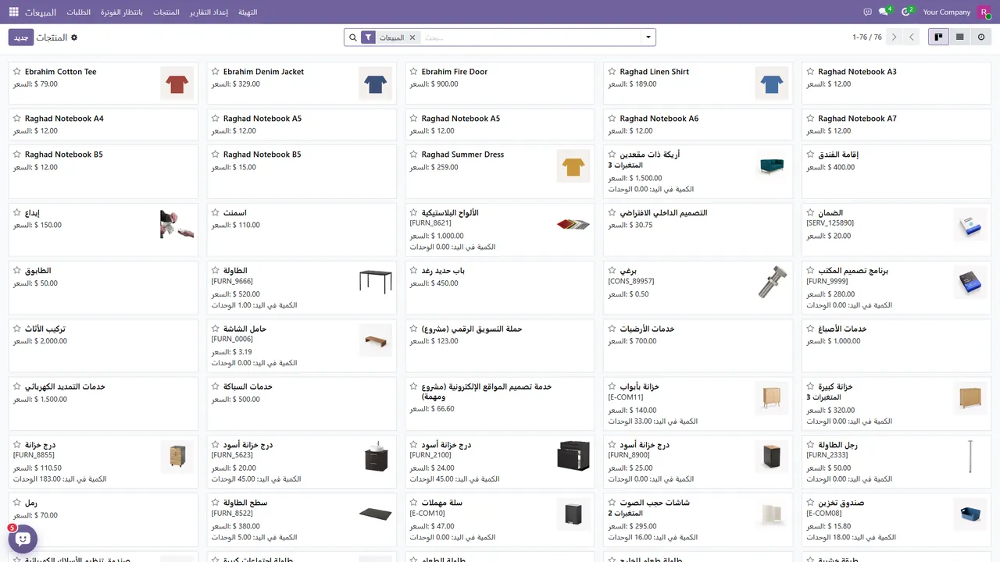
الصورة الرمزية لـ Nudge في زاوية الشاشة وعليها شارة بعدد المهام المنتهية، فوق شاشة المنتجات.
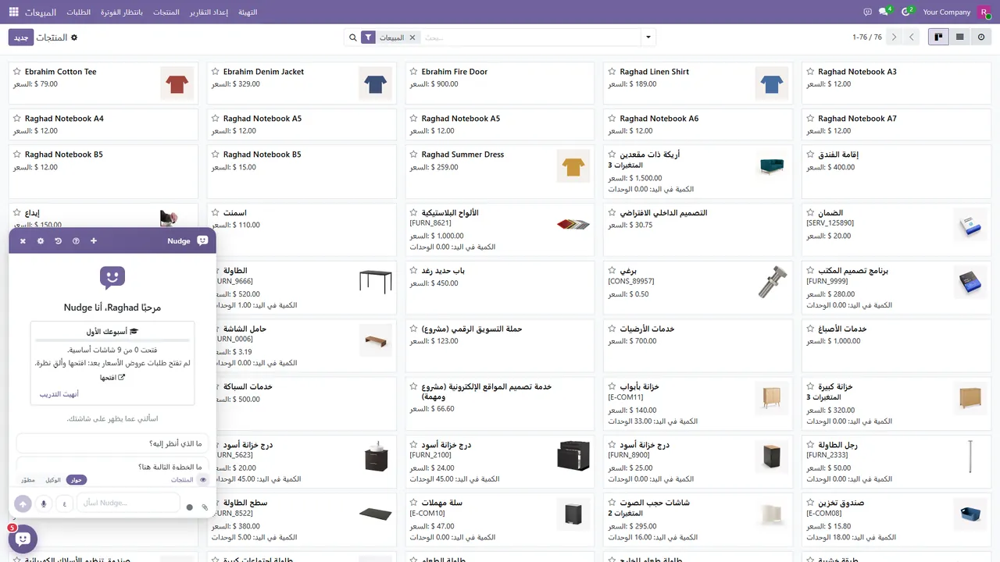
الضغط على الصورة الرمزية يفتح اللوحة، وتظهر فيها تحية Nudge ورسالة الأسبوع الأول.
النتيجة
في التجربة أضاءت الشارة على الصورة الرمزية حين انتهت مهمة في الخلفية، وفتح الضغط عليها بطاقة الإنجاز «Set delivery date of Raghad's offers to 2026-10-19 — 16 done».
ملاحظة خيار Nudge: Off في قائمة المستخدم يخفي الصورة الرمزية لك وحدك.
Odoo 17 و18 و19 · Community وEnterprise
الأيقونة في الشريط العلوي
أيقونة Nudge في الشريط العلوي لـ Odoo تفتح اللوحة نفسها التي تفتحها الصورة الرمزية، من أي شاشة.
الخطوات
انقر على أيقونة Nudge في الشريط العلوي.
تنفتح اللوحة على جانب الشاشة بمحادثتك الحالية.
أيقونة Nudge في الشريط العلوي، والضغط عليها يفتح اللوحة فوق شاشة المنتجات.
النتيجة
في التجربة كان «Nudge: Off» في قائمة المستخدم؛ وبعد التشغيل فتحت الأيقونة اللوحة الفارغة بتحية «Hi Ebrahim, I'm Nudge».
Odoo 17 و18 و19 · Community وEnterprise
اللوحة: محادثة جديدة، السجل، التفضيلات، إيقاف
في رأس اللوحة: علامة + لمحادثة جديدة، وأيقونة الساعة لمحادثاتك السابقة (مع شارة عند وصول أخبار من الخلفية)، والترس للتفضيلات، وعلامة الإغلاق. وأثناء تدفّق الإجابة يحلّ زر Stop محل زر الإرسال.
الخطوات
اضغط + لبدء محادثة جديدة.
اضغط الساعة لإعادة فتح محادثة سابقة؛ تظهر شارة عند وجود أخبار غير مقروءة.
اضغط الترس للتفضيلات.
اضغط Stop بينما Nudge لا يزال يكتب؛ واضغط Escape لإغلاق اللوحة.
اضغط الاختصار مطوّلًا واسأل، أو اضغط الميكروفون في اللوحة: تظهر عبارة “I'm listening…” ويتوقف التسجيل عندما تتوقف عن الكلام.
الخطوات
اضغط Ctrl + Shift + Space مطوّلًا، واسأل “What's the total of this quotation?”، ثم ارفع يدك.
أو اضغط زر الميكروفون؛ يتوقف وحده عندما تصمت.
في المرة الأولى اسمح للمتصفح باستخدام الميكروفون عندما يسألك.
تسجيل التجربة · 53 ثانية
النتيجة
في التجربة سُمع السؤال المنطوق “What's the total of this quotation?” كلمةً كلمة. وأجاب Nudge عن عرض السعر المفتوح S00078: لم تكن للسطرين على الشاشة كميات ولا أسعار بعد، فبيّن أين يظهر المجموع بعد تعبئة Quantity وUnit Price.
ملاحظة تحوّل Chrome وEdge وSafari الكلام إلى نص بنفسها؛ وتستعين المتصفحات الأخرى بمزوّد الذكاء الاصطناعي (Gemini يسمع؛ Groq وOpenAI عبر Whisper؛ أما Claude وOllama وOpenRouter فلا). التسجيل المرسل إلى المزوّد لا يتجاوز 60 ثانية. ويستطيع المدير إيقاف Voice للجميع.
Odoo 17 و18 و19 · Community وEnterprise
لغة الكلام: ع / EN، والاثنتان في جملة واحدة
الزر المجاور للميكروفون يبيّن اللغة التي تتكلمها. والجملة العربية التي تتخللها مصطلحات Odoo بالإنجليزية تُفهم جملةً واحدة.
الخطوات
اضغط ع أو EN بجانب الميكروفون لتبديل لغة الكلام؛ أو اضبطها من التفضيلات.
قل مثلًا: “Nudge, شو الـ total تبع هالـ quotation؟”.
سؤال منطوق يمزج العربية والإنجليزية («Nudge، شو الـ total تبع هالـ quotation؟») مع زر اللغة «ع» وخيار «كيف تريدها؟».
النتيجة
في التجربة سُمعت الجملة المختلطة “Nudge, شو الـ total تبع هالـ quotation؟” والكلمات الإنجليزية فيها بالحروف اللاتينية. وأجاب Nudge بالعربية عن عرض السعر S00078 للعميلة Raghad Damascus، وأشار إلى Total تحت جدول Order Lines، وعرض قراءة الرقم بدقة في وضع Agent.
ملاحظة يسمع المتصفح لغة واحدة في المرة: الكلمات الإنجليزية داخل جملة عربية تخرج بحروف عربية؛ أما مزوّد الذكاء الاصطناعي فيكتبها بالحروف اللاتينية.
Odoo 17 و18 و19 · Community وEnterprise
الإملاء في أي حقل من حقول Odoo
انقر داخل حقل نصي، واضغط Ctrl + Alt + D وتكلّم: تُكتب الكلمات حيث يقف مؤشرك، وتعرض فقاعة صغيرة النص لحظةً بلحظة، وعلامة الصح تنهي الإملاء.
الخطوات
انقر داخل حقل نصي في Odoo، مثل Job Position في جهة اتصال.
اضغط Ctrl + Alt + D وتكلّم؛ أو اضغطه مطوّلًا أثناء الكلام.
اضغطه مرة أخرى، أو علامة ✓ في الفقاعة، عندما تنتهي.
احفظ السجل كالمعتاد.
تسجيل التجربة · 53 ثانيةCtrl+Alt+D على حقل المسمى الوظيفي: شارة «I'm listening…» الحية مع علامة الصح، قبل أن تستقر الكلمات في الحقل.
النتيجة
في التجربة، كتب الإملاء في حقل Job Position لجهة اتصال “Purchasing Manager” تمامًا كما نُطقت.
ملاحظة لا تُملى التواريخ ولا المبالغ ولا الحقول التي تختار فيها سجلًا. ولا يُحفظ شيء حتى تحفظ أنت.
Odoo 17 و18 و19 · Community وEnterprise
“اكتب في الحقل…”
قل لـ Nudge ماذا يكتب وفي أي حقل من النموذج المعروض على شاشتك، فيكتبه هناك دون حفظ لتراجعه أنت.
الخطوات
افتح النموذج وشارك الشاشة (العين مفتوحة).
اكتب: “اكتب في الملاحظات: اتصل العميل هذا الصباح” أو “Write Purchasing Manager in the Job Position field”.
راجع الحقل ثم احفظ.
«اكتب Purchasing Manager في حقل المسمى الوظيفي»: القيمة مكتوبة في الحقل على نموذج جهة الاتصال Raghad.
النتيجة
التجربة الوحيدة المسجّلة جرت على نموذج محلي صغير (qwen3:4b عبر Ollama): عندما طُلب منه “Write Purchasing Manager in the Job Position field” أجاب بخطوات الكتابة بدلًا من أن يكتب. ولا توجد تجربة مسجّلة على نموذج أكبر.
ملاحظة يعمل في وضع Talk؛ ويبقى الحقل بقيمته غير محفوظة حتى تحفظ.
Odoo 17 و18 و19 · Community وEnterprise
قراءة الإجابات بصوت
فعّل “اقرأ لي الإجابات” في التفضيلات فيقرأ Nudge كل إجابة بصوت من جهازك؛ ومكبّر الصوت في رأس اللوحة يوقف القراءة.
الخطوات
أيقونة الترس ‣ فعّل “اقرأ لي الإجابات”.
اسأل أي شيء؛ تُقرأ الإجابة فور وصولها.
اضغط مكبّر الصوت في رأس اللوحة للإيقاف.
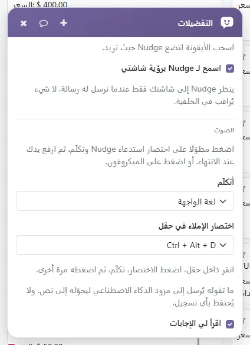
التفضيلات: خيار «اقرأ لي الإجابات» مفعّل في أسفل القائمة.
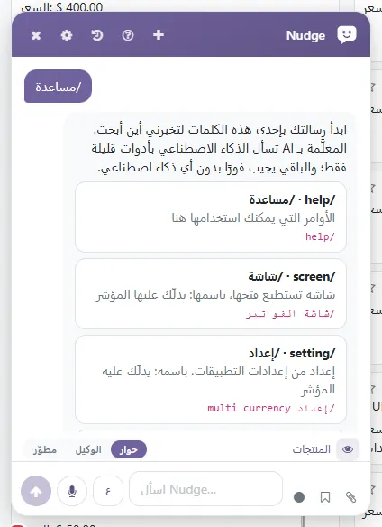
الأمر /مساعدة في اللوحة مع قائمة الأوامر التي يشرحها Nudge.
ملاحظة مطفأة ما لم تفعّلها. وبدون صوت عربي على الجهاز تُكتب الإجابات العربية فقط؛ يتيح Windows صوتًا من Settings ‣ Time & language ‣ Speech.
Odoo 17 و18 و19 · Community وEnterprise
الألوان
اختر لون Nudge من التفضيلات: violet أو teal أو amber أو rose أو slate.
الخطوات
أيقونة الترس ‣ اللون.
انقر على لون؛ تأخذه الصورة الرمزية واللوحة والمؤشّر فورًا.
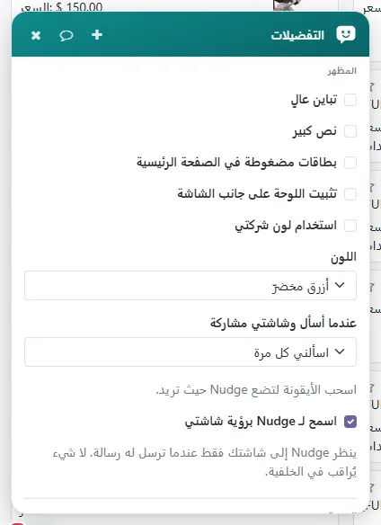
التفضيلات بعد اختيار اللون الأزرق المخضر: ترويسة اللوحة تغيّر لونها فورًا.
ملاحظة الوضع الداكن يتبع Odoo ولا يوجد إلا في Enterprise.
Odoo 17 و18 و19 · Community وEnterprise
العربية والإنجليزية، واللهجات والعربيزي
يجيب Nudge باللغة التي تكتب بها أيًّا كانت لغة شاشتك: عربية فصحى، أو لهجة شامية أو مصرية أو خليجية، أو عربيزي، أو إنجليزية.
الخطوات
اكتب كما تتكلم: “شو هي هالشاشة وشو لازم أعمل هون؟”
أو بالإنجليزية: “What am I looking at, and what should I do next?”
تأتي الإجابة باللغة نفسها.
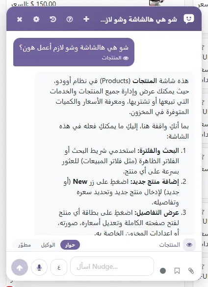
سؤال بالعامية «شو هي هالشاشة وشو لازم أعمل هون؟» يُجاب عنه بالعربية عن شاشة المنتجات.
النتيجة
في التجربة العربية جاء جواب “/كم عرض سعر عند كل بائع؟” هكذا: “Marc Demo: 17 عرض سعر — Mitchell Admin: 12 عرض سعر”، وفُهمت أسئلة اللهجة في الجولة كلها (“خدني على فواتير الموردين”، “شيّكلي هالملف قبل ما استورده”) وأُجيبت بالعربية.
ملاحظة ترتكب النماذج الصغيرة المجانية أخطاءً لغوية، في العربية خصوصًا؛ والنموذج الأقوى يجيب أفضل.
Odoo 17 و18 و19 · Community وEnterprise
العين: مشاركة الشاشة أو حجبها
العين فوق صندوق الرسالة تبيّن هل يرى Nudge شاشتك: السجل وحقوله وما كتبته ولم تحفظه وأزراره وتبويباته. وإذا أُغلقت لا يرى شيئًا. وشارة “seen” على رسالتك تعني أن الشاشة أُرسلت معها.
الخطوات
انقر العين لإغلاقها قبل سؤال لا تريد أن تُرسل معه الشاشة.
انقرها مرة أخرى للمشاركة؛ ويُحفظ اختيارك.
ابحث عن شارة “seen” تحت رسالتك لتعرف أن Nudge رأى الشاشة.
شارة «المنتجات» تحت السؤال وزر العين مفتوح: Nudge يقرأ الشاشة ويجيب عن سعر Raghad Linen Shirt.
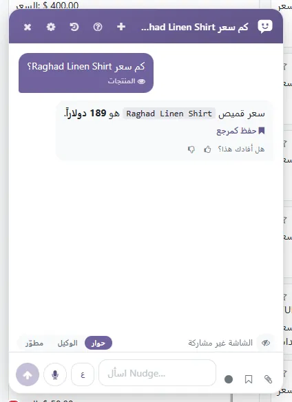
العين مغلقة: يظهر «الشاشة غير مشاركة» في أسفل اللوحة.
النتيجة
في التجربة، والعين مفعّلة، أُجيب عن «Do we have a 12.7 mm pipe?» من الكتالوج الذي على الشاشة: «Yes, we have the PIPE-12 (Pipe 1/2 inch, which is equivalent to 12.7 mm). We currently have 120 Units on hand at a price of $4.50.»
ملاحظة تُقرأ الشاشة فقط عند إرسال رسالة. ويستطيع المدير إيقاف Screen Sharing للجميع (Settings ‣ Nudge ‣ Privacy). والقيم التي يوحي اسم حقلها بسرّ تخرج على هيئة [hidden].
Odoo 17 و18 و19 · Community وEnterprise
Nudge: On / Off لكل مستخدم
في قائمة المستخدم خيار Nudge: On. اضغطه فتختفي لك الصورة الرمزية وأيقونة الشريط العلوي والاختصارات في كل الصفحات، حتى تضغط Nudge: Off هناك.
الخطوات
انقر على اسمك أعلى الشاشة.
اضغط Nudge: On لإيقافه لنفسك.
اضغط Nudge: Off في المكان نفسه لإعادته.
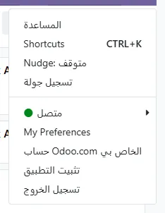
قائمة المستخدم وفيها خيار «Nudge: متوقف» الذي يشغّل Nudge أو يوقفه لهذا المستخدم.
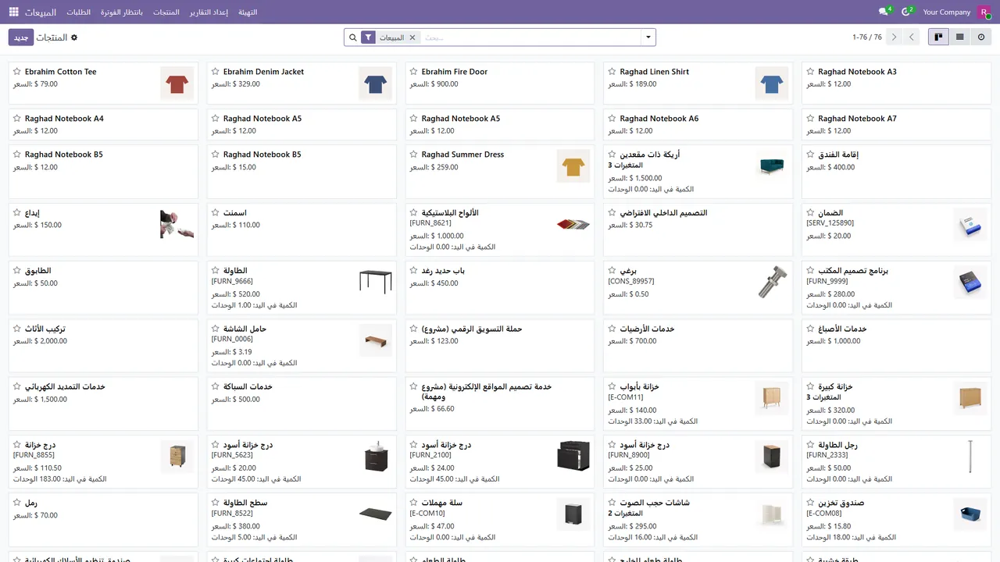
بعد إيقاف Nudge تختفي الصورة الرمزية من زاوية الشاشة.
النتيجة
في التجربة، أظهر الضغط على «Nudge: Off» في قائمة المستخدم الصورة الرمزية وفتح اللوحة.
ملاحظة لا يتأثر غيرك ولا يضيع شيء.
Odoo 17 و18 و19 · Community وEnterprise
اقتراحات البداية في اللوحة الفارغة
تنفتح المحادثة الجديدة ببضعة أسئلة مقترحة وتلميحات تناسب الشاشة التي أنت عليها؛ انقر على أحدها لإرساله.
الخطوات
اضغط + لمحادثة جديدة.
اقرأ الاقتراحات تحت التحية وانقر على أحدها، أو اكتب سؤالك.
اللوحة الفارغة: تحية Nudge ورسالة الأسبوع الأول وسؤالان للبداية.
النتيجة
في التجربة عرضت اللوحة الفارغة ثلاثة اقتراحات للبدء: «What can you help me with?» و«How do I create a quotation?» و«What is the difference between a quotation and a sales order?».
Odoo 17 و18 و19 · Community وEnterprise
إعجاب / عدم إعجاب و“ما الخطأ؟”
قيّم الإجابة بعلامتي الإعجاب تحتها. وعلامة عدم الإعجاب تفتح ملاحظة “What was wrong?”؛ وما تكتبه يصبح درسًا ينتظر اعتماد المدير.
الخطوات
اضغط علامة عدم الإعجاب تحت الإجابة.
اكتب ما كان خاطئًا، مثل “It should also say the price per metre”، وأرسل.
يعتمدها المدير أو يرفضها من Nudge ‣ What Nudge Knows ‣ Business Notes.
بعد الضغط على إبهام لأسفل يظهر صندوق الملاحظة بزر «إرسال».
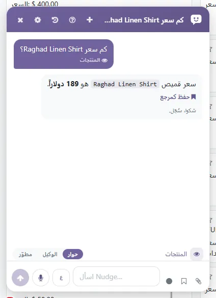
بعد إرسال الملاحظة تظهر رسالة «شكرًا، سُجّل».
النتيجة
في التجربة، بعد الإجابة عن الأنبوب 12.7 ملم، أُرسلت الملاحظة “It should also say the price per metre” من الصندوق الذي يحمل العبارة “What was wrong? It becomes a lesson for a manager to approve”؛ ثم ظهرت في قائمة Business Notes بين الدروس بحالة Proposed ومعها Approve وRefuse.
ملاحظة لا يُتعلَّم شيء بدون الاعتماد. ويرى المديرون كل التقييمات في Nudge ‣ What Nudge Knows ‣ Feedback.
Odoo 17 و18 و19 · Community وEnterprise
Talk / Agent / Dev، و“Nudge, نفّذها”
تحت صندوق الرسالة: Talk يشرح، وAgent ينفّذ العمل، وDev يبني (للمديرين عند تفعيله). وبعد الشرح، عبارة “Nudge, نفّذها” تنقله من الشرح إلى التنفيذ.
الخطوات
اضغط Agent تحت الرسائل ليعمل Nudge؛ واضغط Talk للعودة إلى الشرح.
أو اسأل كيف في Talk ثم اكتب “Nudge, نفّذها”.
ومع مشاركة الشاشة يسألك سؤال “كيف” أولًا: على الشاشة، أم كتابةً، أم (في Agent) نفّذها عني.
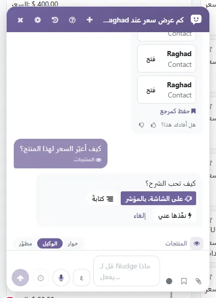
أزرار حوار / الوكيل / مطوّر أسفل اللوحة، وفي وضع الوكيل تضيف بطاقة الاختيار «نفّذها عني».
النتيجة
في التجربة، عندما سُئل في وضع Talk “How many quotations does Raghad have?” أجاب Nudge: “1. Open Agent mode using the button under the message box so I can look up the records for you. 2. Once in Agent mode, ask me again, and I will count the offers for Raghad directly from the database.” وفي وضع Agent عرضت بطاقة “How would you like it?” الخيارات On the screen, with the pointer / In writing / Do it for me؛ وفي Talk الخياران الأولان فقط.
ملاحظة يحتاج Agent إلى مجموعة Nudge / Agent User؛ ويحتاج Dev إلى Nudge for Developers (Settings ‣ Nudge) وصلاحيات المدير.
Odoo 17 و18 و19 · Community وEnterprise
الإعداد الأول
على قاعدة بيانات لم يُعدّها أحد يُعرض على مدير النظام Set up this database with me. يسأل Nudge عن أمر واحد في كل مرة ويعرض بطاقة بالتغييرات بالضبط قبل كل خطوة.
الخطوات
على قاعدة جديدة اضغط Set up this database with me، أو افتح Settings ‣ Nudge ‣ First Setup، أو قلها بجملة.
أجب عن سؤال واحد في كل مرة: الشركة والبلد والعملة واللغات والمنطقة الزمنية والشعار والتطبيقات والمستودعات والمستخدمون بدور والسنة المالية وصيغ الترقيم.
اقرأ بطاقة التغييرات بالضبط وأجب بنعم قبل كل خطوة.
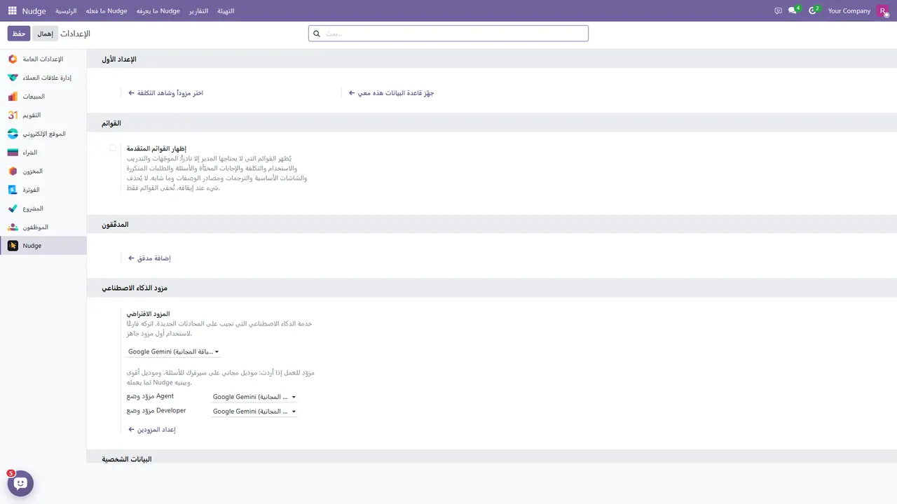
كتلة الإعداد الأول في الإعدادات مع رابط «جهّز قاعدة البيانات هذه معي».
النتيجة
في التجربة، يعرض قسم الإعداد الأول في إعدادات Nudge الرابط «جهّز قاعدة البيانات هذه معي».
ملاحظة لا يُعرض إلا على قاعدة فيها شركة واحدة باسمها الافتراضي وبلا دليل حسابات ومستخدمين قليلين. وتسمّي بطاقة البلد وحدة التوطين المالي التي تحمّل دليل الحسابات.
Odoo 17 و18 و19 · Community وEnterprise
أسبوعك الأول
تعرض بطاقة في اللوحة للشخص الجديد كم فتح من الشاشات الأساسية لدوره والجولات المتبقية. ويرى المديرون مَن بلغ أين.
الخطوات
سجّل الدخول بصفتك Raghad في أول 14 يومًا: تظهر البطاقة في اللوحة.
افتح الشاشات الأساسية وخذ الجولات التي تسردها البطاقة.
يفتح المدير Nudge ‣ Training ليرى تقدّم كل شخص.
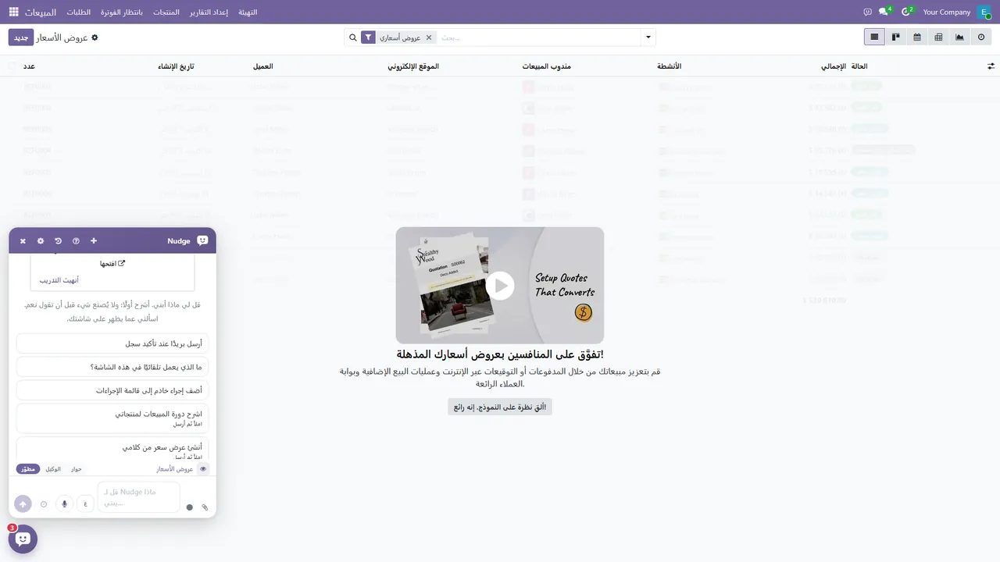
بطاقة «أسبوعك الأول» في اللوحة مع زرّي افتحها وأنهيت التدريب.
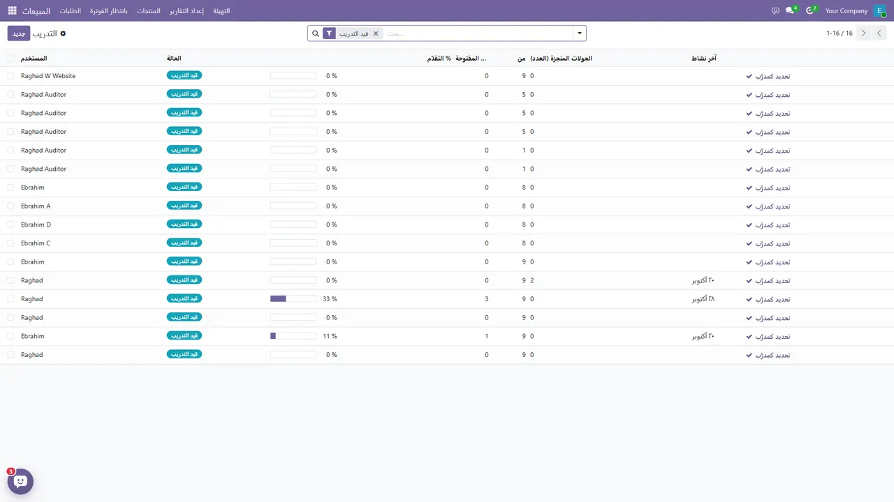
قائمة التدريب في Nudge وتقدّم كل شخص.
النتيجة
في التجربة عرض Nudge لشخص جديد «Your first week: You opened 0 of 8 key screens» مع زر Open it، وعرضت Nudge ‣ Training كلًّا من Raghad وEbrahim «In training» بنسبة 0%.
ملاحظة لا يُحفظ إلا ما فُتح من الشاشات. ويطفئ مفتاح الشركة في Settings هذا المدرّب. ويستطيع المدير أيضًا وضع شخص في التدريب.
Odoo 17 و18 و19 · Community وEnterprise
الصفحة الرئيسية لـ Nudge
الشاشة الأولى لتطبيق Nudge لكل موظف: أرقام التطبيقات التي يحق له استخدامها، لكل منها اتجاهه مقابل الأسبوع الماضي وزر Show me، تُحسب باسم الشخص كل خمس دقائق.
صفحتي الرئيسية في Nudge: «عروض أسعار بانتظار الرد» مع زر أرني.تسجيل: الضغط على أرني في البطاقة لفتح عروض الأسعار نفسها. · 6 ثانية
النتيجة
في التجربة فُتح تطبيق Nudge على My Nudge Home وفيه بطاقة «Quotations awaiting an answer: 9, $6,682.50»، وفتح Show me عروض الأسعار التسعة نفسها (1-9 / 9، المجموع 6,682.50 دولارًا).
Odoo 17 و18 و19 · Community وEnterprise
لوحة للهاتف أولًا
تحت عرض 600 بكسل، أو مع ?mobile=1، أو في تطبيق Odoo، تصير اللوحة ورقة بملء الشاشة بزر اضغط للتحدث وحتى خمسة مربعات سريعة: الساعة، وصورة فاتورة، ومهامي، واسأل عن هذا السجل، وسجّل ملاحظة.
الخطوات
افتح Odoo على الهاتف، أو أضف ?mobile=1 إلى العنوان.
افتح اللوحة: تظهر الورقة بملء الشاشة.
اضغط الزر مطوّلًا للتحدث، أو اضغط مربعًا.
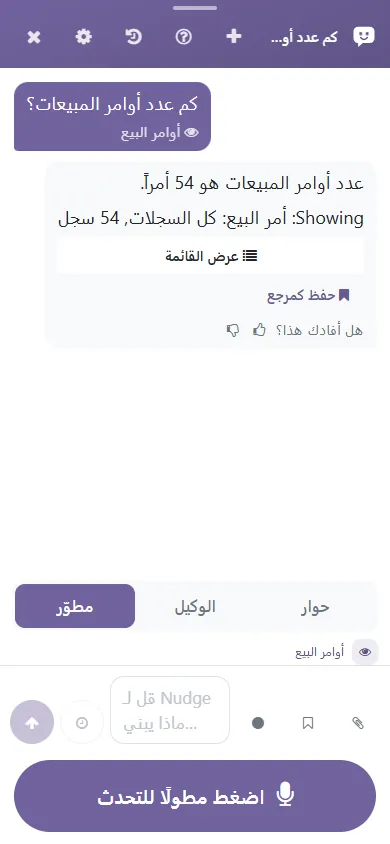
اللوحة بحجم شاشة هاتف مع الجواب وزر عرض القائمة.تسجيل: سؤال من الهاتف عن عدد أوامر المبيعات والجواب في اللوحة. · 25 ثانية
النتيجة
في التجربة، على شاشة بحجم الهاتف، أجاب Nudge «The screen shows 36 sales orders in total, using the Sales Orders filter.»
ملاحظة تستطيع الشركة إطفاء المربعات في Settings؛ ولا يظهر مربع تطبيق غير مثبّت.
Odoo 17 و18 و19 · Community وEnterprise
كلام المتصفح في الوضع الخاص
مفتاح على مستوى الشركة يتيح للمتصفح الإملاء والقراءة بصوت عالٍ في الوضع الخاص حين لا يستمع أي مزوّد على خادمك. وقد ترسل Chrome وEdge الصوت إلى الشركة المصنّعة؛ ولا يستطيع Nudge منع ذلك.
الخطوات
افتح Settings ‣ Nudge ‣ Privacy والوضع الخاص مفعّل.
فعّل Allow Browser Speech in Private Mode (مطفأ افتراضيًا).
أملِ جملة في اللوحة ودع Nudge يقرأ جوابًا بصوت عالٍ.
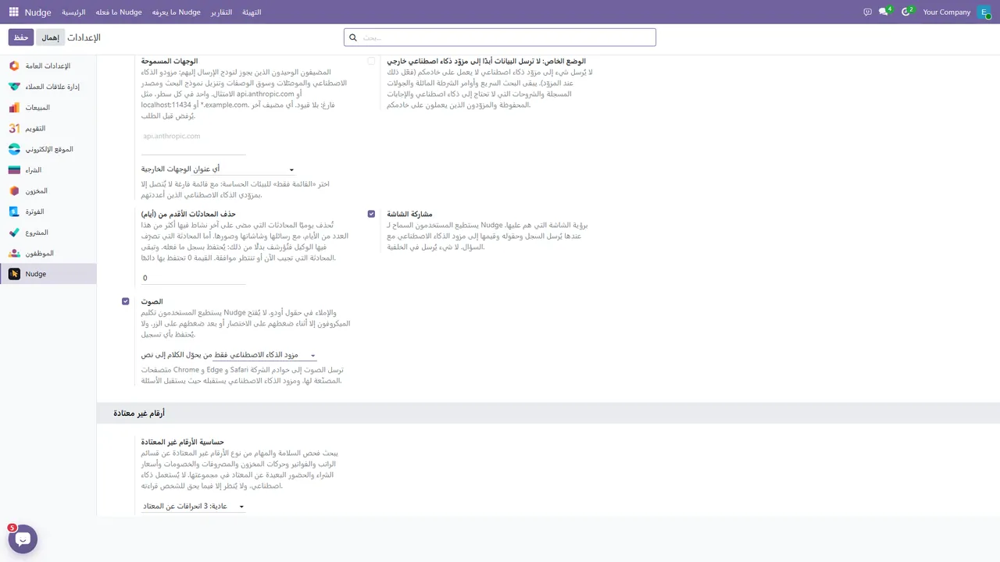
كتلة الخصوصية: الوضع الخاص.
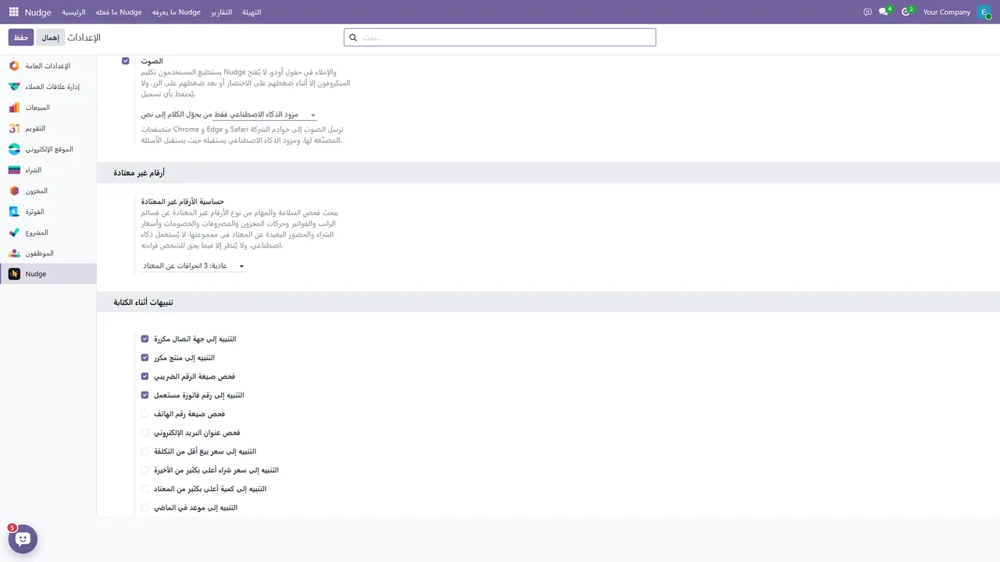
إعداد الصوت مع تنبيه عن إرسال المتصفحات الصوت إلى خوادم الشركة المصنّعة.
النتيجة
في التجربة يحذّر إعداد Voice «Chrome, Edge and Safari send the sound to the servers of their maker.» وعُرضت الإعدادات وحدها؛ ولم يُحفظ شيء.
ملاحظة يحتاج Chrome أو Edge، وقد ترسل خدمة الكلام فيهما الصوت إلى الشركة المصنّعة.
Odoo 17 و18 و19 · Community وEnterprise
ما الذي ينتظرني اليوم جديد
جملة واحدة تعرض أنشطتك المتأخرة والموافقات المنتظرة والفواتير المتأخرة للعملاء.
الخطوات
افتح لوحة Nudge في وضع الحوار.
اكتب: ايش ينتظرني اليوم؟
اقرأ الملخص.
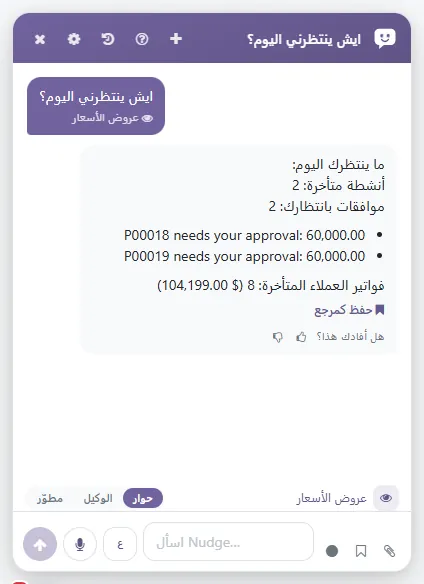
الإجابة في اللوحة: الأنشطة المتأخرة والموافقات المنتظرة وفواتير العملاء المتأخرة.
في المستخدمين والوضع حدّد عدد الأشخاص والوضع ثم اضغط التالي.
في المزوّد اختر «بالقواعد فقط» أو Google Gemini واقرأ المزايا والعيوب والخصوصية.
اضغط إلغاء للخروج دون حفظ شيء.
خطوة المزوّد مع «بالقواعد فقط بلا مزود ذكاء اصطناعي»: لا يخرج شيء من الخادم.
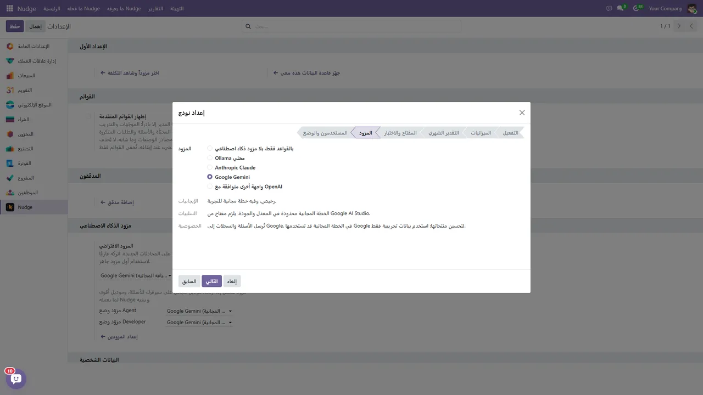
خطوة المزوّد مع Google Gemini: رخيص وفيه خطة مجانية للتجربة، وتُرسل الأسئلة والسجلات إلى Google.المرور بالمعالج من المستخدمين والوضع إلى المزوّد ثم المفتاح والاختبار. · 22 ثانية
النتيجة
في التجربة، قاد معالج إعداد Nudge من «المستخدمون والوضع» إلى «المزوّد»، حيث ظهر لـ Google Gemini أنه رخيص وفيه خطة مجانية للتجربة وأن الأسئلة والسجلات تُرسل إلى Google، قبل أن يطلب المفتاح.
ملاحظة لم تُعرض خطوتا التقدير الشهري والميزانيات: يطلب المعالج نجاح اختبار المفتاح أولاً.
Odoo 17 و18 و19 · Community وEnterprise
قوائم أبسط: خمسة مداخل، والقوائم المتقدمة عند الطلب جديد
يعرض Nudge خمسة مداخل رئيسية بدل قائمة طويلة واحدة، وبإعداد واحد تعود القوائم الكاملة.
الخطوات
افتح Nudge: المداخل هي الرئيسية والنشاط والمعرفة والتقارير والإعدادات.
افتح الإعدادات > Nudge وفعّل «Show advanced menus» ثم احفظ.
أعد فتح قائمة Nudge: تعود القائمة الكاملة. ألغِ التفعيل للرجوع إلى الوضع الافتراضي.
في التجربة، رفع إعداد القوائم المتقدمة قائمة Nudge من 28 إلى 61 مدخلاً.
Odoo 17 و18 و19 · Community وEnterprise
اكتب في حقل: Talk يملأ المسمى الوظيفي وحقول الربط جديد
جملة واحدة تملأ حقلاً في النموذج المفتوح، حتى حقل الربط، وتبقى أنت من يقرأ القيمة ويحفظ السجل.
الخطوات
افتح نموذج موظف جديد مع Talk على الشاشة.
اكتب: اكتب مدير الموارد البشرية بحقل الوظيفة.
تظهر القيمة في الحقل دون حفظ. اقرأها ثم احفظ.
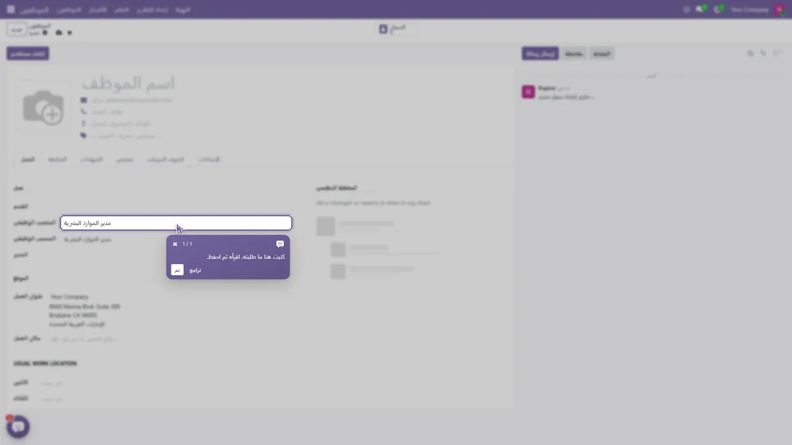
نموذج موظف جديد بالواجهة العربية وقد كتب Talk «مدير الموارد البشرية» في حقل المنصب الوظيفي مع رسالة «كتبت هنا ما طلبته. اقرأه ثم احفظ.»
النتيجة
في التجربة، كتب Talk «مدير الموارد البشرية» في حقل المنصب الوظيفي دون حفظ، وقال: «كتبت هنا ما طلبته. اقرأه ثم احفظ.»
Odoo 17 و18 و19 · Community وEnterprise
اسأل وافهم
إجابات عن شاشتك وقاعدة بياناتك وعن Odoo نفسه، كثير منها بلا أي استدعاء للذكاء الاصطناعي، فلا يضيع وقت فريقك في البحث.
صور وملفات مع السؤال
مشبك الورق يأخذ PDF أو XLSX أو CSV أو ملفًا نصيًا أو صورة. يُقرأ نص الـ PDF أو الورقة على الخادم؛ وتُعرض الصورة على مزوّد يستطيع رؤية الصور.
الخطوات
اضغط مشبك الورق بجانب صندوق الرسالة واختر الملف.
اسأل: “Do we have this?” مع صورة منتج، أو “ماذا يقول هذا الملف عن العمل الإضافي؟” مع PDF.
أرسل؛ يُقرأ الملف كبيانات لا كتعليمات.
صورة مرفقة بالمشبك والمنتجات التي طابقها Nudge معها، كبطاقات.
النتيجة
في التجربة، أجابت صورة خزانة مع السؤال “Do we have this?”: “Yes, we do have a matching product: Cabinet with Doors (E-COM11) priced at $140.00 with 33 units on hand, and we also have Large Cabinet (E-COM07) priced at $320.00 with 500 units on hand.”
ملاحظة 10 MB لكل ملف. والـ PDF الممسوح ضوئيًا لا نص فيه: يقول Nudge ذلك ويطلب صورة. والنموذج الذي لا يرى الصور يقول ذلك فورًا؛ في تجربة Ollama: “qwen3:4b-instruct-nudge cannot read pictures. Describe it in words, or ask your administrator for a model that sees them.”
Odoo 17 و18 و19 · Community وEnterprise
البحث قبل وجود أي مزوّد ذكاء اصطناعي
إلى أن يضبط المدير مزوّدًا، تعرض اللوحة بحثًا: بضع كلمات تُظهر الشاشات التي تستطيع فتحها وإعدادات تطبيقاتك (للمديرين) والمنتجات وصفحات توثيق Odoo الرسمي. لا يُسأل ذكاء اصطناعي ولا يخرج شيء من قاعدة البيانات.
الخطوات
افتح اللوحة واكتب “warehouses”.
انقر على شاشة فيأخذك المؤشّر إليها، أو اضغط Open.
اكتب “/product chair” أو “/doc landed costs” للمنتجات أو التوثيق.
كلمة بعد شرطة مائلة تقول لـ Nudge أين يبحث. بدون أي ذكاء اصطناعي وبدون توكنز: /help /screen /setting /doc /file /find /product /stock /rules /sql. ومع الذكاء الاصطناعي بأدوات قليلة وتعليمات قصيرة فقط: /count و/explain. ولكل أمر توأم عربي (/مساعدة /شاشة /إعداد /توثيق /ملف /سجل /منتج /مخزون /قواعد /كم /اشرح).
“/كم عرض سعر عند كل بائع؟” (لمستخدمي Agent)، “/اشرح شو يعني قائمة الأسعار”.
“/مساعدة” يعرضها كلها مع مثال لكل أمر.
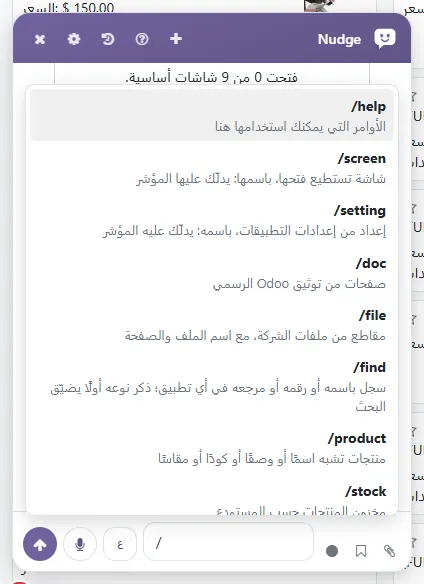
كتابة «/» تفتح قائمة الأوامر: /help و/screen و/setting و/doc و/file و/find و/product و/stock.
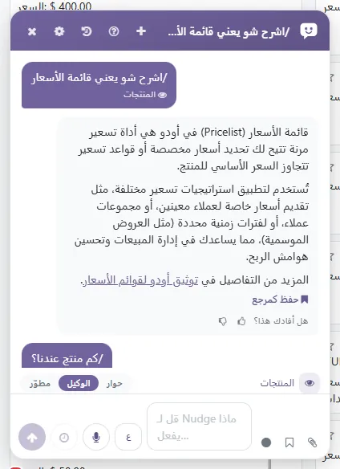
الأمر /اشرح يشرح قائمة الأسعار، ثم سؤال عن عدد المنتجات في وضع الوكيل.تسجيل لأوامر الشرطة المائلة بالعربية على شاشة المنتجات. · 19 ثانية
النتيجة
في التجربة أجاب “/مساعدة” فورًا: “ابدأ رسالتك بإحدى هذه الكلمات لتخبرني أين أبحث. المعلَّمة بـ AI تسأل الذكاء الاصطناعي بأدوات قليلة فقط؛ والباقي يجيب فورًا بدون أي ذكاء اصطناعي.” وقال “/سجل zzqx” خلال 0.0 ثانية: “لا يوجد سجل يمكنك قراءته باسم «zzqx».” وأجاب “/كم عرض سعر عند كل بائع؟”: “Marc Demo: 17 عرض سعر — Mitchell Admin: 12 عرض سعر”.
ملاحظة /setting للمديرين، و/rules يحتاج وضع Developer، و/sql يحتاج مفتاح SQL ومجموعة Settings.
Odoo 17 و18 و19 · Community وEnterprise
يقرأ الشاشة، بما فيها القيم غير المحفوظة
مع العين مفتوحة يرى Nudge السجل الذي على شاشتك: حقوله وقيمه، وما كتبته ولم تحفظه بعد، وأزراره وتبويباته. اسأله ما الذي تنظر إليه أو لماذا يفشل شيء.
الخطوات
افتح سجلًا وتأكد أن العين مفتوحة.
اسأل: “ما الذي أنظر إليه؟”، “ما الخطوة التالية؟”، “لماذا لا أستطيع الحفظ؟”
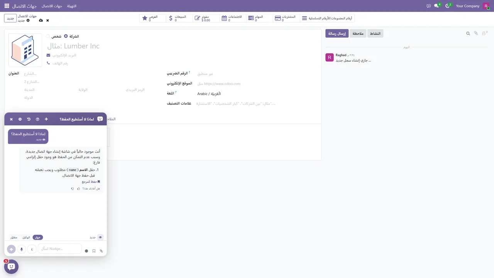
على نموذج جهة اتصال جديدة، يجيب Nudge أن حقل الاسم مطلوب وفارغ فلا يمكن الحفظ.تسجيل لسؤال «لماذا لا أستطيع الحفظ؟» على نموذج جهة اتصال جديدة. · 11 ثانية
النتيجة
في التجربة، على نموذج جهة اتصال جديدة رفض الحفظ، أجاب السؤال “Why can't I save?”: “You cannot save because the Name field is required and currently empty. 1. Fill in the Name field with the contact's name. 2. Click Save again.”
ملاحظة تُقرأ النماذج والقوائم ولوحات kanban كاملة؛ وبقية الشاشات باسمها فقط. ولا يُقرأ إلا ما يُسمح لك برؤيته.
Odoo 17 و18 و19 · Community وEnterprise
“كيف تريدها؟”: على الشاشة، كتابةً، نفّذها عني
سؤال “كيف” أو “أين” مع مشاركة الشاشة يسألك أولًا كيف تريد الإجابة: على الشاشة بالمؤشّر، أم كتابةً؛ وفي وضعَي Agent وDev أيضًا: نفّذها عني.
الخطوات
اسأل “كيف أؤكد هذا الطلب؟” والعين مفتوحة.
اختر على الشاشة، أو كتابةً، أو نفّذها عني.
لكي لا تُسأل كل مرة، اضبط “عندما أسأل وشاشتي مشاركة” في التفضيلات.
بطاقة «كيف تريدها؟»: على الشاشة بالمؤشر / كتابةً / إلغاء.
النتيجة
في التجربة عرضت البطاقة في وضع Agent الأزرار “On the screen, with the pointer” و“In writing” و“Do it for me” و“Cancel”؛ وفي وضع Talk: “On the screen, with the pointer” و“In writing” و“Cancel”.
ملاحظة الأمر المباشر (“أكّد S00003”) يذهب إلى البطاقة مباشرة؛ ولا يأتي السؤال إلا مع كيف/أين.
Odoo 17 و18 و19 · Community وEnterprise
جولات المؤشّر على الشاشة
على الشاشة يذهب مؤشّر Nudge، السهم ذو العينين، إلى كل زر أو حقل أو تبويب، ويضغطه على سبيل العرض، ويفتح نصًا قصيرًا بجانبه ويغبّش بقية الشاشة. وأزرار السابق والتالي و✕ موجودة دائمًا؛ ويمكن إعادة الجولة.
الخطوات
اسأل “أرني كيف أؤكد هذا الطلب” أو “أين أغيّر مندوب المبيعات؟”
اختر على الشاشة.
نفّذ كل خطوة بنفسك؛ تأتي التالية وحدها. واستعمل السابق أو التالي أو ✕.
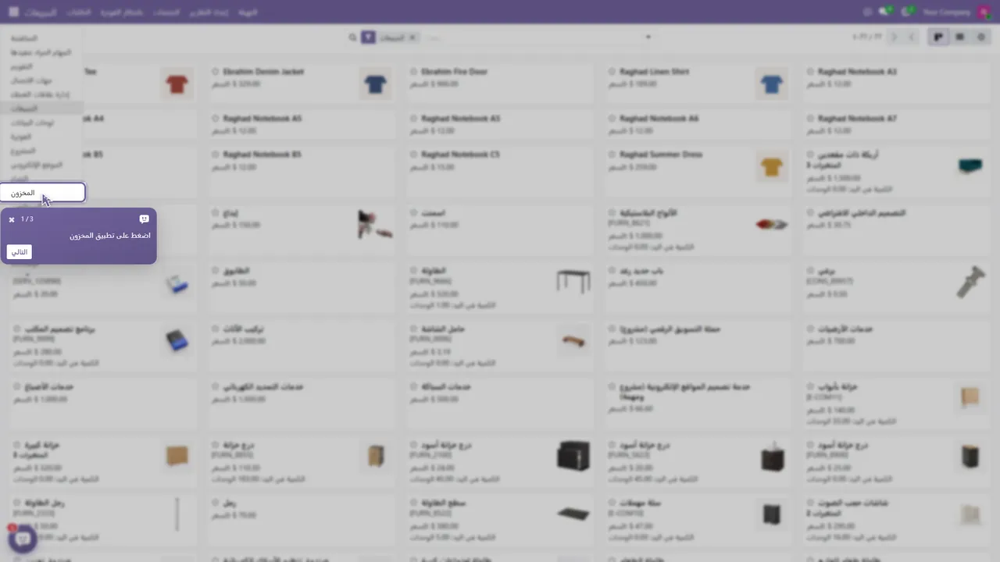
الخطوة الأولى من جولة المؤشر: «اضغط على تطبيق المخزون» مع تمييز القائمة.
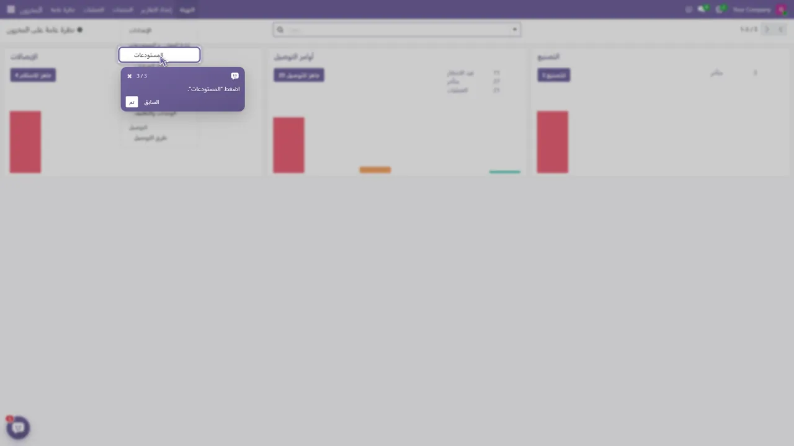
الخطوة 3/3 من الجولة: «اضغط «المستودعات»».تسجيل جولة المؤشر بالعربية حتى شاشة المستودعات. · 70 ثانية
النتيجة
في التجربة جرت الجولة إلى المستودعات في 3 خطوات: “1 / 3 Click on 'Inventory' in the main menu.” ثم “2 / 3 Go to 'Configuration' and then 'Warehouse Management'.” ثم “3 / 3 Click “Warehouses”.”، والمؤشّر على كل قائمة بدورها.
ملاحظة الحقل في تبويب مغلق يُصل إليه عبر التبويب أولًا. والتغبيش يحتاج إلى backdrop-filter؛ وبدونه تُعتَّم الشاشة فقط.
Odoo 17 و18 و19 · Community وEnterprise
جولة في مسار القوائم
اسأل كيف تفتح شاشة فيمشي المؤشّر معك عبر القوائم: التطبيقات ثم كل قائمة حتى الشاشة، من أي مكان كنت.
الخطوات
اسأل “كيف أفتح تقرير الحضور؟” أو “كيف أصل إلى المستودعات؟”
اختر على الشاشة؛ أو كتابةً لتحصل على المسار كقائمة.
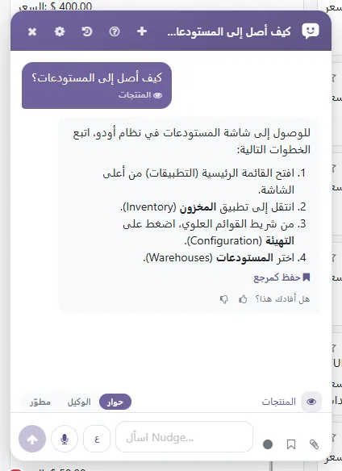
مسار كتابي إلى المستودعات: التطبيقات، المخزون، التهيئة (Configuration)، المستودعات (Warehouses).
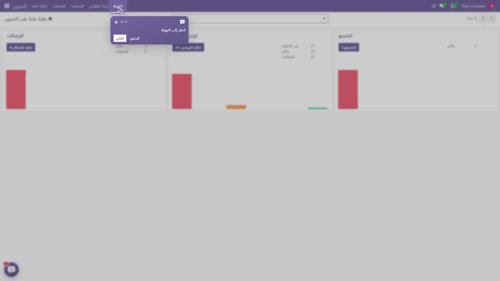
خطوة «انتقل إلى التهيئة» من الجولة على الشاشة.
النتيجة
في التجربة أعطى خيار كتابةً: “To go to the warehouses, follow these steps in your menu: 1. Click on Inventory. 2. Go to Configuration. 3. Open Warehouse Management. 4. Click on Warehouses.”؛ وعرض خيار على الشاشة المسار نفسه جولةً من 4 خطوات تبدأ بـ “Open the apps first.”
ملاحظة إن كنت في التطبيق أصلًا، تبدأ الجولة من قوائمه.
Odoo 17 و18 و19 · Community وEnterprise
خذني إلى هناك
“خذني إلى المستودعات” يفتح الشاشة من بين القوائم التي تستطيع فتحها (find_screen / open_screen).
الخطوات
اكتب “خذني إلى المستودعات” أو “خدني على فواتير الموردين”.
تنفتح الشاشة؛ وإن تطابقت عدة شاشات يعرضها Nudge مع المؤشّر وOpen.
تسجيل التجربة · 12 ثانية«خذني إلى فواتير المورّدين»: المسار خطوات، و«Show me on the screen»، وأزرار Open للشاشات المطابقة.
النتيجة
في التجربة أجاب “Take me to the warehouses” بـ “Taking you to the warehouses.” وفتح قائمة Warehouses وفيها مستودعا العرض التجريبي YourCompany وMy Company (San Francisco).
Odoo 17 و18 و19 · Community وEnterprise
شرح حقل أو مصطلح (/explain)
/explain مع اسم حقل أو مصطلح أو بلا شيء (هذه الشاشة) يجلب شرحًا قصيرًا من الذكاء الاصطناعي بأدوات قليلة وتعليمات قصيرة، بجزء صغير من توكنز السؤال الكامل.
الخطوات
على عرض سعر اكتب “/explain Payment Terms”.
أو “/اشرح شو يعني قائمة الأسعار”.
أو اسأل في رسالة عادية “شو فايدة حقل قائمة الأسعار بهالعرض؟”.
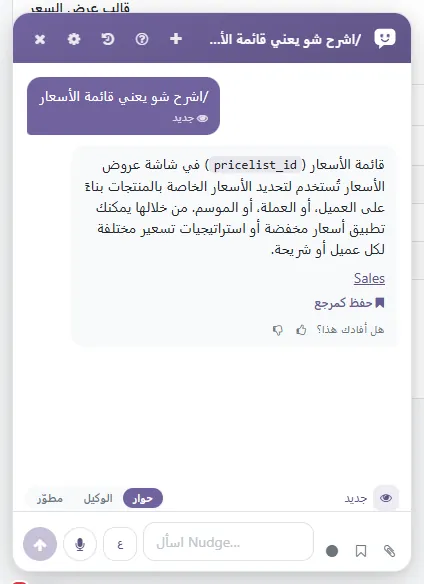
الأمر /اشرح على عرض سعر جديد: شرح حقل قائمة الأسعار (pricelist_id).
النتيجة
في التجربة أجاب “/explain Payment Terms” على S00098: “Payment Terms (payment_term_id) set when and how the customer has to pay the invoice for this order. Examples are “Immediate Payment”, “30 Days”, or “50% now, balance in 60 days”. On S00098 the field is empty. In that case, the invoice generated from this order uses the terms set on the customer (Raghad Damascus), if there are any…” وبيّن أين تُعرَّف (Invoicing ‣ Configuration ‣ Payment Terms).
Odoo 17 و18 و19 · Community وEnterprise
توثيق Odoo 19 المضمَّن
يأتي مع الموديول التوثيق الرسمي لكل تطبيق، في Community وEnterprise، وتوثيق المطوّرين: 1067 صفحة يبحث فيها Postgres. في أسئلة Odoo القياسي يقرأها Nudge قبل الإجابة ويعطي الرابط في النهاية؛ و/doc يبحث فيها بدون ذكاء اصطناعي.
الخطوات
اسأل “كيف تعمل قوالب عروض الأسعار؟” أو “ما هي قاعدة إعادة الطلب؟”
سؤال «كيف تعمل قوالب عروض الأسعار؟» يُجاب عنه بخطوات من التوثيق مع رابط التوثيق الرسمي.تسجيل لسؤال عن قوالب عروض الأسعار على قائمة عروض الأسعار. · 18 ثانية
النتيجة
في التجربة أجاب “How do I send a quotation by email?” بثلاث خطوات (“Click the Send by Email button at the top left of the form. A composer window will open with a pre-filled email template and the PDF attached…”) وأُغلق برابط “Sales Documentation” إلى odoo.com/documentation/19.0. وأعاد “/doc landed costs” صفحة “Landed costs ▸ Add landed cost” فورًا.
ملاحظة لا يُجلب شيء من الخارج. ويُبحث في التوثيق بكلمات إنجليزية: السؤال العربي يحوّله النموذج أولًا إلى كلمات إنجليزية، وهذا يكلّف نداءً واحدًا وقد يخطئ. والتوثيق حقوقه لـ Odoo S.A. برخصة CC BY-SA 4.0.
Odoo 17 و18 و19 · Community وEnterprise
يعرف قاعدة البيانات هذه
يعرف Nudge كيف ضُبطت هذه القاعدة: أي الموديولات مخصصة وماذا تفعل، وأي الحقول أُضيفت، وكيف ضُبطت التطبيقات، وأين يجري العمل فعلًا: يعدّ كل يوم كم سجلًا من كل نوع وكم تغيّر مؤخرًا.
الخطوات
اسأل “ماذا يفعل موديول الصيانة عندنا؟” أو “ما الحقول التي أضفناها إلى أوامر البيع؟”
اسأل “شو في أشياء بتشتغل لحالها على عروض الأسعار؟”
وإذا غطّى موضوعًا موديولان، يجيب Nudge من الذي يستعمله موظفوكم ويقول من أين قرأ.
«ماذا تفعل وحدة sale_management؟» أُجيب عنه من وحدات قاعدة البيانات هذه.
النتيجة
في التجربة أجاب “What runs by itself on quotations?” من هذه القاعدة: “Automation rules: None running automatically on events. Server actions (in the Actions menu): Send an email on sale.order, Create Project on sale.order, Mark Quotation as Sent on sale.order, Share on sale.order. Scheduled actions: One scheduled action for sending pending emails…”
ملاحظة يحمل الملف البنية والإعدادات لا سجلات العمل؛ وأجزاؤه عن الصلاحيات والأتمتة تُقال للمديرين فقط. ويصحّحه المديرون من Nudge ‣ What Nudge Knows ‣ Database Profile.
Odoo 17 و18 و19 · Community وEnterprise
يقرأ كود الموديولات المخصصة (للمديرين)
للمدير، يستطيع Nudge قراءة كود الموديولات المخصصة المنصَّبة هنا وشرح ما تفعله.
أو بالإنجليزية “Read the code of the module nudge_spreadsheet and tell me what it does”.
«اقرأ كود وحدة nudge_spreadsheet وقل لي ماذا تفعل» أُجيب عنه من شيفرة الوحدة المصدرية.
النتيجة
في التجربة العربية، عندما طُلب منه قراءة nudge_spreadsheet لخّصه Nudge في أربع نقاط: “إنشاء التقارير تلقائياً… جدول بيانات منسق بالكامل مع المجاميع والرسم البياني”، “بيفتح التقرير مباشرة في محرر جداول البيانات الخاص بأودو… تحمله بصيغة .xlsx”، “بينحفظ كل تقرير… ضمن القائمة Nudge ‣ جداول البيانات (nudge.spreadsheet)”، و“البيانات اللي بتنقرأ بالجدول بتكون حسب صلاحياتك”.
ملاحظة تُحجب الأسرار داخل الكود قبل إرساله. للمديرين فقط.
Odoo 17 و18 و19 · Community وEnterprise
ملفات الشركة
يرفع المديرون مستندات الشركة (سياسات، إجراءات) في Nudge ‣ What Nudge Knows ‣ Company Files؛ ويجيب Nudge منها مع ذكر الملف والصفحة. ويمكن حصر الملف بمجموعات.
الخطوات
اسأل “كم يوم إجازة سنوية إلنا، وكم بينحسب الإضافي يوم الجمعة؟”
أو “/ملف إجازة سنوية” للمقاطع نفسها بدون ذكاء اصطناعي.
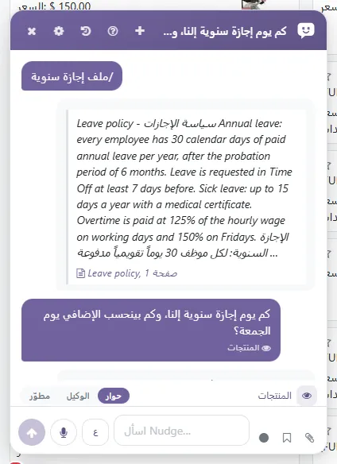
سؤال عن الإجازة السنوية يُجاب عنه من ملف «Leave policy» مع اقتباس الملف والصفحة.
النتيجة
في التجربة (نموذج محلي qwen3:4b) أجاب السؤال: “We get 30 calendar days of paid annual leave per year, after the 6-month probation period. Overtime on Fridays is paid at 150% of the hourly wage. These rules are from the “Leave policy” file, page 1.” وعرض “/ملف إجازة سنوية” المقاطع خلال 0.1 ثانية.
ملاحظة ما في الملف يُقرأ كبيانات لا كتعليمات.
Odoo 17 و18 و19 · Community وEnterprise
مستشار الإعداد
اسأله كيف تضبط شيئًا لشركتك فيسألك أولًا ما يلزمه، ثم يقرأ إعدادات التطبيق وقائمة التهيئة فيه وموديولاتك المخصصة، ويقترح إعدادًا مبنيًا على ما عندك مع صفحات التوثيق. “أرني” يأخذ المؤشّر إلى كل إعداد؛ و“طبّق” يغيّرها بتأكيد لكل تغيير (للمديرين).
الخطوات
اسأل “بدي اشتغل بمستودعين وانقل بضاعة بيناتهم، كيف بضبطها؟”
أجب عن أسئلته عن شركتك.
قل “أرني” للمؤشّر، أو “طبّقها” (في Agent، للمديرين) للتغييرات.
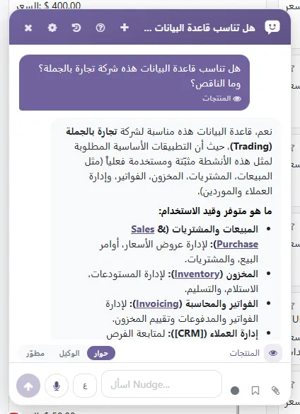
هل تناسب قاعدة البيانات شركة تجارة بالجملة؟ ما هو مثبّت ومستخدم وما الناقص.
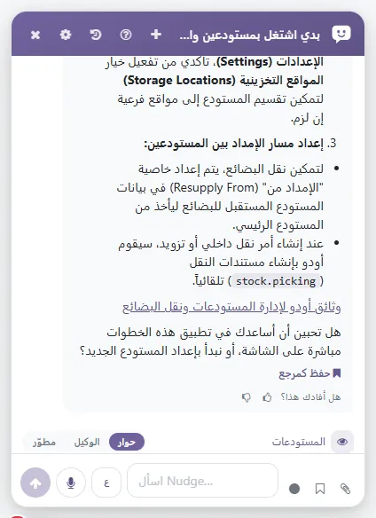
إعداد مستودعين ونقل بضاعة بينهما: خطوات وإعداد «Resupply From» ورابط التوثيق.تسجيل لسؤال إعداد مستودعين على شاشة المستودعات. · 19 ثانية
النتيجة
في التجربة (نموذج محلي qwen3:4b) أجاب سؤال المستودعين: “Great! We have warehouse management set up in this database. Here's how to set it up for two warehouses and move goods between them: 1. Go to: Inventory → Configuration → Warehouse Management → Warehouses 2. Create two warehouse records… 3. Set up stock moves between them…” مع رابط التوثيق وعرض “Would you like me to show you the exact steps on the screen…”.
ملاحظة تُقرأ قيم الإعدادات وكود الموديولات للمديرين فقط. والتطبيق يحتاج إلى Nudge for Administrators.
Odoo 17 و18 و19 · Community وEnterprise
تقييم قاعدة البيانات
“هل قاعدتنا مناسبة لشركة مقاولات؟” (أو تجارة أو شحن أو تصنيع أو تجزئة أو خدمات أو عقارات): يقارن Nudge ما تشغّله مثل هذه الشركة في Odoo بما هو منصّب ومستعمل ومخصّص هنا، ويقترح الناقص مع صفحة توثيق لكل بند.
الخطوات
اسأل “هالقاعدة بتناسب شركة تجارة جملة؟ شو ناقصها؟”
أو بالإنجليزية: “Does this database fit a trading company? What is missing?”
«هل قاعدة البيانات هذه مناسبة لشركة تجارية؟» مقيَّمة من التطبيقات المثبتة واستخدامها.
النتيجة
في التجربة أجاب Nudge: “Yes, this database is well-suited for a trading company as you have all the essential apps installed and actively in use: Sales (for your offers and orders), Purchase (for vendor management), Inventory (for managing stock), and Invoicing (for accounting). To further strengthen your trading operations, you might consider these modules, which are currently missing: CRM… Margins… Landed Costs…” ومع كل بند رابط توثيقه.
ملاحظة وما لا مرجع له عنده يقول إنه لا يعرفه.
Odoo 17 و18 و19 · Community وEnterprise
البحث عن المنتجات
/product (أو سؤال عادي) يبحث في الأسماء والأكواد والباركود والأوصاف والمتغيرات والفئات وأسماء المورّدين للمنتجات التي تراها. يُقرأ المقاس بوحدته ويُقارن بأي وحدة (12.7 ملم يجد أنبوب نصف إنش)؛ والكلمة المكتوبة بخطأ تجد ما قُصد بها. وتعرض البطاقات الصورة والسعر والتكلفة والمخزون في كل مستودع وسبب ظهور المنتج؛ ويمكن أن تكون الصورة هي البحث.
الخطوات
اكتب “/منتج برغي 8 ملم” أو “/مخزون كرسي” (المنتجات المخزّنة مع الكمية في كل مستودع).
أو اسأل “Do we have a 12.7 mm pipe?”
أرفق صورة مع /منتج للبحث بها.
تسجيل التجربة · 36 ثانية«هل عندنا أنبوب 12.7 مم؟» ← وُجد أنبوب نصف البوصة، مع المخزون والسعر، كبطاقة منتج.
النتيجة
في التجربة أجاب “Do we have a 12.7 mm pipe?”: “Yes, we have the PIPE-12 (Pipe 1/2 inch, which is equivalent to 12.7 mm). We currently have 120 Units on hand at a price of $4.50.” وأعاد “/مخزون كرسي” و“/منتج خزانة كبيرة” بطاقات بدون ذكاء اصطناعي خلال 0.3–0.4 ثانية.
ملاحظة البحث نفسه لا يحتاج ذكاءً اصطناعيًا ويعمل قبل إعداد أي مزوّد. والصور تحتاج مزوّدًا يراها.
Odoo 17 و18 و19 · Community وEnterprise
يتذكّر درسًا عندما تصحّحه
صحّح Nudge أو قل له أن يتذكّر شيئًا فيكتب الدرس. ويعتمده المدير أو يرفضه في Business Notes؛ وبعد الاعتماد تبدأ كل محادثة به.
الخطوات
اكتب “تذكّر: الخصم عنا ما بيتجاوز 10% على أي عرض سعر” أو “لا، نسمّي عروض الأسعار عروضًا”.
يفتح المدير Nudge ‣ What Nudge Knows ‣ Business Notes ويضغط Approve.
تسجيل التجربة · 55 ثانية«تذكّر: خصمنا لا يتجاوز 10% على أي عرض سعر» ← يُدوَّن الدرس وينتظر موافقة مدير.
النتيجة
في التجربة العربية أجاب “تذكّر: الخصم عنا ما بيتجاوز 10% على أي عرض سعر” بـ “علمت وسجلت القاعدة…”، وظهر الدرس في Business Notes بحالة Proposed. وبعد اعتماد الملاحظة “We call quotations offers” كتب Nudge “To send an offer by email…” و“I will count the offers for Raghad” بدلًا من quotations.
ملاحظة لا يُتعلَّم شيء بدون الاعتماد؛ والدرس المكرّر يُحفظ مرة واحدة.
Odoo 17 و18 و19 · Community وEnterprise
قراءة ما يعمل تلقائيًا (/rules)
/rules مع اسم نموذج يعرض ما يعمل من تلقاء نفسه على هذا النوع من السجلات: قواعد الأتمتة وإجراءات الخادم والإجراءات المجدولة وقوالب البريد. وبدون اسم: الشاشة التي أمامك. بدون ذكاء اصطناعي.
الخطوات
في وضع Dev اكتب “/قواعد sale.order”، أو “/قواعد” على الشاشة.
أو اسأل بالكلام: “شو في أشياء بتشتغل لحالها على عروض الأسعار؟”
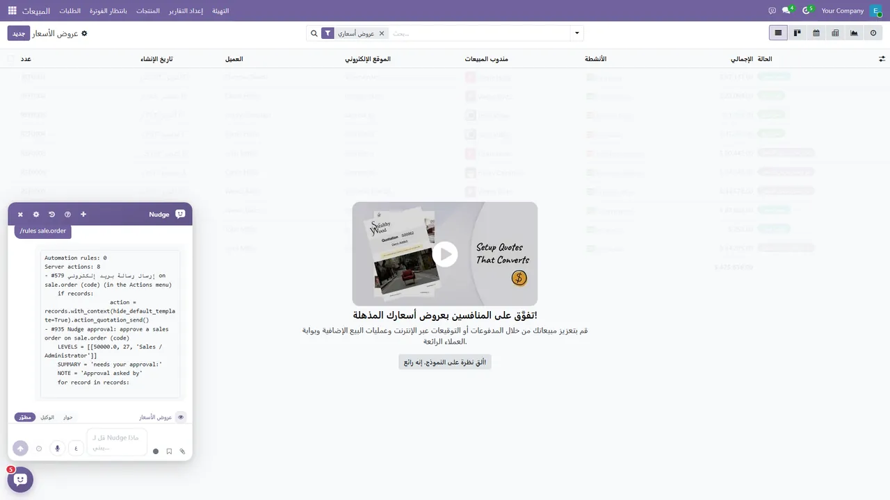
الأمر «/rules sale.order» في وضع المطوّر: Automation rules: 0 وServer actions: 8 على عروض الأسعار.تسجيل: السؤال بالعربية «شو في أشياء بتشتغل لحالها على عروض الأسعار؟» والجواب: لا قواعد أتمتة و8 إجراءات خادم. · 19 ثانية
النتيجة
في التجربة أجاب “/قواعد sale.order” فورًا (0.0 ثانية، بدون ذكاء اصطناعي) باللغتين. وأجاب السؤال بالكلام بالعربية: “حالياً، ليس هناك قواعد أتمتة (Automation Rules) أو مهام مجدولة فعّالة تعمل لوحدها تلقائياً على عروض الأسعار… ولكن هناك 4 إجراءات خادم (Server Actions) متوفرة في قائمة الإجراءات… إرسال رسالة بريد إلكتروني (action_quotation_send)، إنشاء مشروع (action_create_project)…”
ملاحظة يعرض أيضًا ما بناه Nudge نفسه، تحت الموديول nudge_custom.
Odoo 17 و18 و19 · Community وEnterprise
دروس يعتمدها المدير (Business Notes)
في Nudge ‣ What Nudge Knows ‣ Business Notes يكتب المديرون كيف تسمّي الشركة الأشياء وكيف تعمل، ويعتمدون أو يرفضون الدروس التي اقترحها الموظفون بتصحيحاتهم وملاحظات عدم الإعجاب. والملاحظات المعتمدة تفتتح كل محادثة.
الخطوات
المدير: Nudge ‣ What Nudge Knows ‣ Business Notes.
اكتب ملاحظة (“We call quotations offers”) أو افتح درسًا بحالة Proposed واضغط Approve أو Refuse.
تسجيل التجربة · 55 ثانيةBusiness Notes: الدروس المقترحة مع «Learnt From» وزرّي Approve / Refuse ومفتاح Active.
النتيجة
في التجربة عرضت القائمة دروسًا بحالة Proposed مع Approve وRefuse: “We call quotations offers”، و“I want a shorter answer — Said after the answer to: What…”، و“الخصم عنا ما بيتجاوز 10% على أي عرض سعر”، وتوائمها. وبعد اعتماد ملاحظة العروض صارت إجابات Nudge تقول “offers” (“I will count the offers for Raghad”).
ملاحظة لا يقرأ الدروس إلا المديرون؛ ولا يُتعلَّم شيء بدون اعتماد.
Odoo 17 و18 و19 · Community وEnterprise
قائمة التقييمات
كل إعجاب أو عدم إعجاب مع ملاحظته يُعرض للمديرين في Nudge ‣ What Nudge Knows ‣ Feedback بجانب الإجابة التي قيّمها.
الخطوات
المدير: Nudge ‣ What Nudge Knows ‣ Feedback.
افتح سطرًا لتقرأ السؤال والإجابة وما كان خاطئًا.
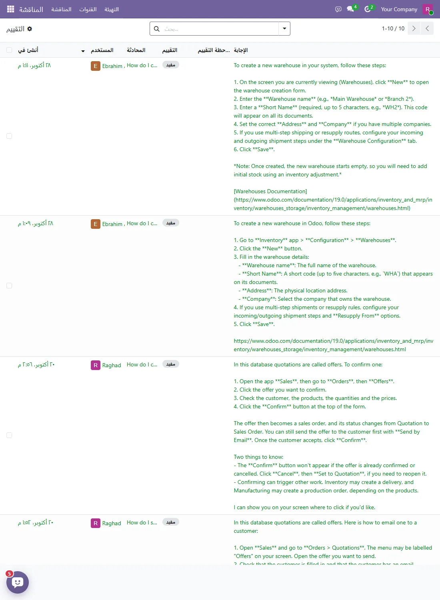
قائمة Feedback في الواجهة العربية: تاريخ الإنشاء والمستخدم والمحادثة والتقييم والملاحظة والإجابة التي جرى تقييمها.
النتيجة
في التجربة سُجّلت الملاحظة “It should also say the price per metre” المرفقة بعدم إعجاب على إجابة الأنبوب 12.7 ملم، وظهرت درسًا بحالة Proposed للمدير.
Odoo 17 و18 و19 · Community وEnterprise
ملفات الشركة التي يرفعها المديرون
Nudge ‣ What Nudge Knows ‣ Company Files: يرفع المدير ملف PDF أو نصًا، ويقول ما الغرض منه، ويمكنه حصره بمجموعات. وRead Again يعيد قراءة ملف مُبدَّل. ويذكر Nudge الملف والصفحة؛ و/file يجد المقاطع بدون ذكاء اصطناعي.
الخطوات
المدير: Company Files ‣ New؛ املأ Name وWhat It Is For والملف وFor the Groups إن لزم.
كل مَن يُسمح له: “/ملف إجازة سنوية” أو سؤال عن السياسة.
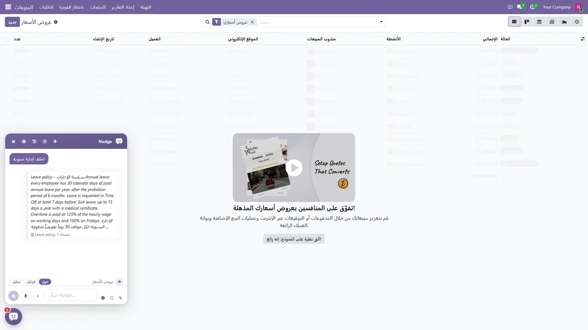
سؤال في لوحة Nudge بالواجهة العربية على شاشة المبيعات، والإجابة تقتبس صفحة سياسة الإجازات من ملف الشركة.
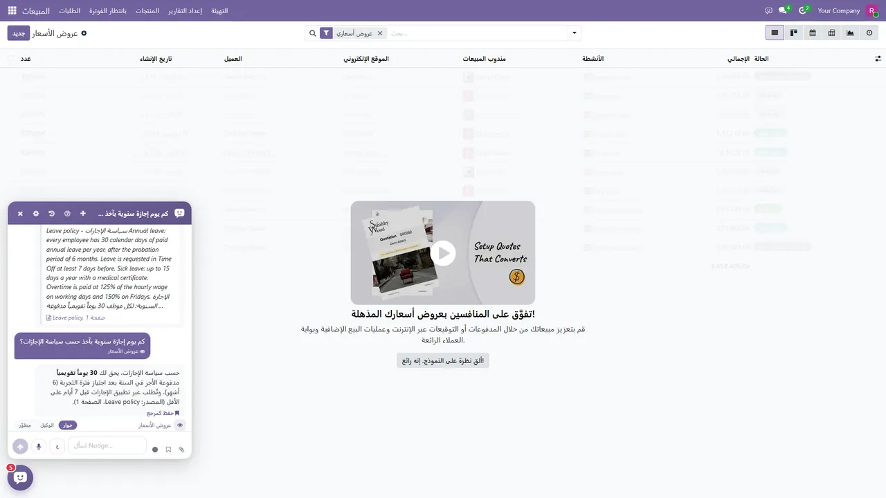
Nudge يجيب بالعربية عن عدد أيام الإجازة السنوية مع ذكر المصدر: Leave policy، الصفحة 1.
النتيجة
في التجربة عرض “/file annual leave” و“/ملف إجازة سنوية” مقاطع ملف “Leave policy” خلال 0.1 ثانية مع صفحة كل مقطع؛ واقتبس السؤال بالكلام “30 calendar days… after the 6-month probation period… 150% of the hourly wage… from the “Leave policy” file, page 1” (B10).
ملاحظة الملف المحصور بمجموعات لا يراه غيرها، ولا مقاطعه.
Odoo 17 و18 و19 · Community وEnterprise
إجابات محفوظة
عندما يضغط أحدهم إبهام التأييد على شرح ويوافق عليه مدير، يُجاب سؤال شخص آخر المماثل فورًا من الذاكرة دون استدعاء الذكاء الاصطناعي. تُوسَم الإجابة بأنها إجابة محفوظة ويرافقها زر لسؤال الذكاء الاصطناعي بدلًا منها.
الخطوات
اضغط إبهام التأييد على شرح قدّمه Nudge لـ Raghad.
يوافق عليه مدير في Nudge ‣ What Nudge Knows ‣ Remembered Answers.
يطرح Ebrahim السؤال نفسه فتأتي الإجابة المحفوظة فورًا؛ اضغط Ask the AI instead للحصول على إجابة جديدة.
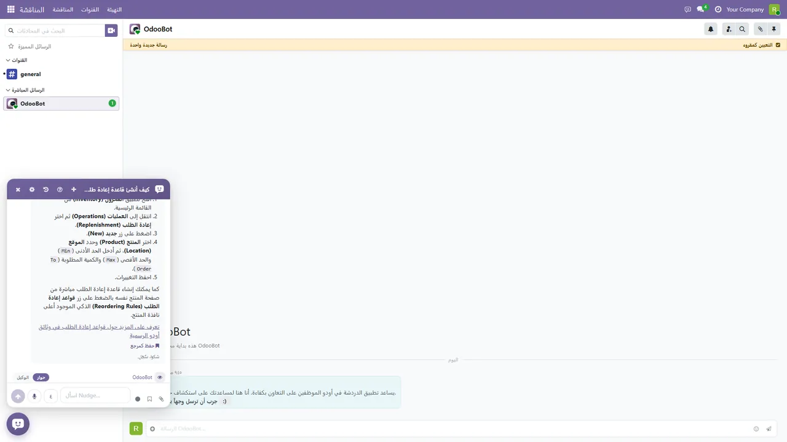
الإجابة الأولى عن إنشاء قاعدة إعادة طلب للمنتجات بالواجهة العربية، بعد الإعجاب بها وحفظها كمرجع.
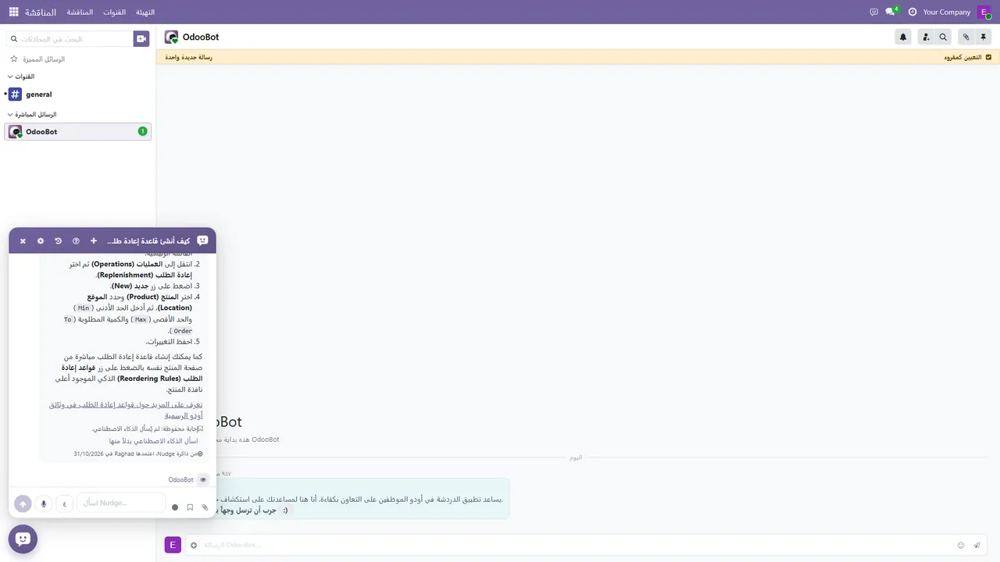
مستخدم آخر يسأل السؤال نفسه فيحصل على «إجابة محفوظة» دون استدعاء الذكاء الاصطناعي، مع زر «اسأل الذكاء الاصطناعي بدلاً منها».تسجيل المستخدم الثاني وهو يسأل في محادثة جديدة فتظهر الإجابة المحفوظة. · 11 ثانية
النتيجة
في التجربة، بعد إعجاب واحد أجاب Nudge السؤال نفسه لشخص ثانٍ فورًا بعبارة «إجابة محفوظة: لم يُسأل الذكاء الاصطناعي» مع زر «اسأل الذكاء الاصطناعي بدلًا من ذلك».
ملاحظة لا تُحفظ إجابة غيّرت بيانات أو اقتبست قيمًا من قاعدة البيانات. يطفئ Settings ‣ Nudge ‣ Answer Memory هذه الميزة ويضبط Confidence Required (0.75 افتراضيًا).
Odoo 17 و18 و19 · Community وEnterprise
شرح الشاشة بلا ذكاء اصطناعي
ثلاثة أوامر تشرح الشاشة الحالية من البيانات الوصفية في Odoo نفسه ومن النموذج كما هو، دون ذكاء اصطناعي: لماذا لا يُحفظ النموذج، وما هذا الحقل، وما هذه الشاشة. وتُعرض أيضًا بدل الخطأ حين لا يوجد مزوّد أو يفشل.
الخطوات
افتح نموذجًا لا يُحفظ، مثل جهة اتصال Raghad وفي حقل مطلوب فيها فراغ.
اكتب /why (أو /لماذا): يعدّد Nudge الحقول المطلوبة والقيم المرفوضة وآخر رسالة والحقول المقفلة والصلاحيات الناقصة والشركة.
اكتب /field customer (أو /حقل) لتقرأ ما هو الحقل، أو /here (أو /هنا) لتقرأ ما هي الشاشة وحالتها وأزرارها.
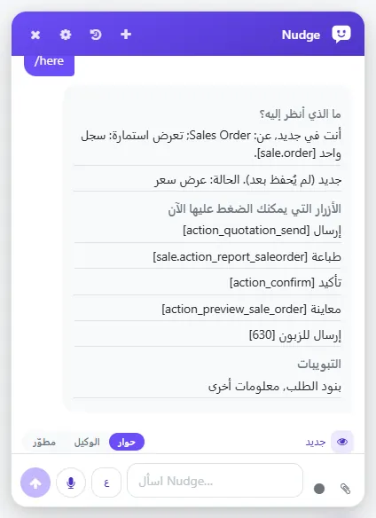
لوحة Nudge بالعربية على عرض سعر لم يُحفظ: الأمر /here يصف النموذج وحالته والأزرار التي يمكن الضغط عليها.تسجيل التجربة · 17 ثانية
النتيجة
في التجربة أجاب الأمر /لماذا «لماذا لا أستطيع الحفظ؟» وعدّد الحقول المطلوبة (العميل، عنوان الفاتورة، عنوان التوصيل)، وقال الأمر /حقل العميل «العميل: رابط إلى سجل واحد ... مطلوب: لا يمكن تركه فارغاً»، ووصف الأمر /here النموذج وحالته وأزراره.
ملاحظة يُشار إلى كل سطر بالمؤشر على الشاشة.
Odoo 17 و18 و19 · Community وEnterprise
مهام بالقواعد بلا ذكاء اصطناعي
مهمة مجدولة تعدّ حقلًا رقميًا أو تجمعه أو تحسب متوسطه وتبلّغ بالنتيجة دون ذكاء اصطناعي. تعمل للقراءة فقط باسم صاحبها وتجيب في الشريط العلوي وبالبريد، مع رابط يفتح القائمة المصفّاة.
الخطوات
افتح Nudge ‣ What Nudge Did ‣ Scheduled Tasks وأنشئ مهمة بخيار Done By: Rule (no AI).
اختر نوع السجل (نموذجًا يحق لك قراءته) ومصفّيًا وقيمة Measure: Count أو Sum أو Average لحقل رقمي، ويمكن إضافة تجميع.
حدّد متى يُبلَّغ: Always أو Above a Threshold أو Below a Threshold أو Changed Since the Last Run.
مهام بالقواعد بلا ذكاء اصطناعي: لقطة من التجربة.
النتيجة
في التجربة، أجاب زر التشغيل الآن «Raghad: quotations waiting - الإجمالي: 11» مع رابط يفتح القائمة المصفّاة، والمهمة تُظهر تشغيلًا واحدًا، بلا ذكاء اصطناعي.
ملاحظة تُحتسب ضمن حدّ المهام نفسه لكل شخص.
Odoo 17 و18 و19 · Community وEnterprise
جولات مسجّلة
يسجّل مدير مهمة بالنقر عبرها، ثم يعيد أي شخص تشغيلها بالمؤشر. تُسمّى كل خطوة بقائمتها أو زرها أو حقلها أو تبويبها، لا بمكانها في الصفحة. وتأتي ثماني جولات جاهزة.
الخطوات
يختار مدير Nudge Record a tour من قائمة المستخدم ويمرّ بالمهمة بالنقر.
يعيد أي شخص تشغيلها: اكتب /tour create a quotation (أو /جولة)، أو ابحث عنها في بحث اللوحة.
حرّر الجولات في Nudge ‣ Configuration ‣ Tours.
جولات مسجّلة: لقطة من التجربة.تسجيل التجربة · 26 ثانية
النتيجة
في التجربة، عرض الأمر /جولة الجولة المسجّلة «Raghad: quotations screen»، وقاد Nudge الخطوات «اضغط “المبيعات”» ثم «اضغط “الطلبات”» ثم «اضغط “عروض الأسعار”» واحدة تلو الأخرى، متقدمًا وحده عند كل نقرة.
ملاحظة تُتخطّى الخطوة غير الموجودة في هذه القاعدة مع ملاحظة. وتظهر كل جولة جاهزة حيث يكون تطبيقها مثبّتًا فقط.
Odoo 17 و18 و19 · Community وEnterprise
الطلبات الشائعة بكل اللهجات بلا ذكاء اصطناعي
تُفهم الطلبات اليومية بقواعد قبل استدعاء أي ذكاء اصطناعي: فتح شاشة، والبحث عن سجل، والتصفية، والعدّ والجمع، وإنشاء سجل، وتغيير حقل، والضغط على زر. تعمل بالعربية بأي لهجة وبالعربيزي والإنجليزية وبتكلفة صفر من الرموز.
الخطوات
اكتب طلبًا بلهجتك، مثل «افتح جهة اتصال Raghad» أو «كم عرض سعر هذا الشهر».
يجيب Nudge بالقواعد؛ ويحمل صف الاستهلاك وسم Understood Without AI بصفر رموز.
إذا طابق الاسم عدة سجلات فاختر ما تقصده: هذا اختيار منك لا تخمين.
الطلبات الشائعة بكل اللهجات بلا ذكاء اصطناعي: لقطة من التجربة.تسجيل التجربة · 18 ثانية
النتيجة
في التجربة، فُهمت ثلاثة طلبات بلهجات خليجية ومصرية وشامية بالقواعد دون ذكاء اصطناعي: 11 عرض سعر، وفُتحت شاشة عروض الأسعار، و75 جهة اتصال.
ملاحظة خيار Settings ‣ Nudge ‣ Common Requests ‣ Try to understand common requests without AI first مفعّل افتراضيًا.
Odoo 17 و18 و19 · Community وEnterprise
البحث بالمعنى على خادمك
نموذج صغير متعدد اللغات يعمل على معالج خادمك فتُعثر على التوثيق وملفات الشركة والإجابات المحفوظة بالمعنى لا بالكلمات وحدها. فيجد سؤال بالعربية صفحة إنجليزية. وهو يعثر فقط ولا يجيب، ولا يغادر شيء الخادم.
الخطوات
افتح Settings ‣ Nudge ‣ Local Search Model واضغط Download.
انتظر حتى يُجلب multilingual-e5-small (نحو 135 ميغابايت، إلى filestore).
اسأل بالعربية عن موضوع موثَّق بالإنجليزية: تُعثر على الصفحة.
في التجربة يقرأ الإعداد «Off: the model multilingual-e5-small (int8) is not downloaded» ومعه زر Download. ولم يُنزَّل النموذج ولم يُحفظ شيء.
ملاحظة يحتاج onnxruntime وtokenizers على الخادم. ولا يبحث في سجلات النماذج الأخرى (الشركاء والمنتجات...).
Odoo 17 و18 و19 · Community وEnterprise
ملخص تاريخ السجل
يلخّص سجلًا من سجل المراسلات (chatter) والأنشطة والملفات والسجلات المحيطة به باسم السائل. الجواب خط زمني مؤرَّخ مع النقاط المفتوحة والمبالغ وآخر تواصل والخطوة التالية، وروابط Show me.
الخطوات
افتح عرض سعر لـ Raghad واكتب «لخّص هذا السجل» في اللوحة.
أو اكتب @Nudge summarize في chatter مع Nudge: Discuss.
اقرأ الخط الزمني واتبع روابط Show me.
ملخص تاريخ عرض السعر S00115 بالعربية: الحالة والجدول الزمني والملاحظات والنشاط المطلوب والخطوة المقترحة.تسجيل طلب «لخّص هذا السجل» على عرض السعر وظهور الملخص في اللوحة. · 20 ثانية
النتيجة
في التجربة، أجاب Nudge بأن العرض S00115 لـ Raghad Trading ما زال عرضًا ينتهي في 2026-11-19، وسرد ملاحظات اتصال العميل والنشاط المخطط، وختم بالخطوة التالية: تأكيد خصم 5% على المصابيح مع العميل.
ملاحظة يُحفظ الملخص 15 دقيقة، ما لم يتغير chatter.
Odoo 17 و18 و19 · Community وEnterprise
الأسئلة المتكررة
تُعدّ الأسئلة المطروحة بحسب المعنى وبأي لهجة، بلا ذكاء اصطناعي ودون حفظ هوية أي شخص. وكل أسبوع يُعرض على المديرين الأسئلة الكثيرة التي لا تغطيها إجابة محفوظة ولا جولة.
الخطوات
انتظر الرسالة الأسبوعية إلى المديرين (ثلاثة أسطر على الأكثر).
لكل سؤال متكرر اختر: حفظ إجابة، أو تسجيل جولة، أو التجاهل.
ثم تجيب الإجابة المحفوظة أو الجولة المسجَّلة عن السؤال في المرة التالية.
قائمة الأسئلة المتكررة مع العدد والحالة وأزرار حفظ إجابة وتسجيل جولة وتجاهل.
النتيجة
في التجربة، بعد أن سُئل السؤال نفسه خمس مرات، عرضت Recurring Questions «How many quotations are waiting for an answer?» وقد سُئل 5 مرات بحالة To Decide، مع Keep an answer وRecord a tour وIgnore.
Odoo 17 و18 و19 · Community وEnterprise
ملخص تسجيل الاجتماع
أرفق تسجيل اجتماع أو سجّله واطلب الملخص. يكتب Nudge الملخص والقرارات وبنود العمل؛ وتُعرض المهام والأنشطة وأحداث التقويم والملاحظات مسودات، لكل منها موافقته.
الخطوات
أرفق تسجيلًا (m4a أو mp3 أو ogg أو wav أو webm، حتى 10 ميغابايت) أو سجّل الاجتماع في اللوحة.
اطلب الملخص.
اقرأ القرارات وبنود العمل، وأجب بنعم على كل مسودة تريدها.
إعداد «اجتماع صوتي» في الإعدادات.
النتيجة
في التجربة يقول إعداد Meeting audio «Needs a provider that accepts audio, and ffmpeg on the server for voice notes.» وعُرض الإعداد وحده؛ ولم يُجرَّب ملخص اجتماع حيًّا.
ملاحظة يحتاج مزوّد ذكاء اصطناعي يقبل الصوت، أو الكلمات التي سمعها المتصفح أثناء التسجيل حين يُسمح بذلك. ويُنسى التسجيل بعد ساعة ولا يُحفظ النص في أي مكان.
Odoo 17 و18 و19 · Community وEnterprise
هل تقصد: الأخطاء الإملائية تعود إليك كاقتراح جديد
عند كتابة كلمة خاطئة يقترح Nudge الطلب الصحيح كزر «هل تقصد» بدل التخمين أو استدعاء الذكاء الاصطناعي.
الخطوات
افتح لوحة Nudge على المبيعات > عروض الأسعار.
اكتب الكلمة الخاطئة، مثلاً: اوامر البيغ.
ستظهر إجابة «هل تقصد» مع زر اقتراح.
اضغط الزر لفتح القائمة.
اللوحة بالعربية تجيب بزر «هل تقصد: فتح: اوامر بيع».تسجيل لكتابة الكلمة الخاطئة وظهور زر الاقتراح. · 7 ثانية
النتيجة
في التجربة، أجاب Nudge على «اوامر البيغ» بـ «هل تقصد: "فتح: اوامر بيع"؟» مع زر اقتراح، وكان هو الرد الوحيد (دون نص من الذكاء الاصطناعي).
ملاحظة لم يُضغط زر الاقتراح في التسجيل العربي.
Odoo 17 و18 و19 · Community وEnterprise
فهم العربية المكتوبة بحروف لاتينية (Arabizi) جديد
يفهم Nudge من يكتب العربية بحروف لاتينية ومع أخطاء إملائية دون مزوّد، ويفتح الشاشة المناسبة.
الخطوات
افتح لوحة Nudge في الواجهة العربية.
اكتب جملة Arabizi مثل a3rad el 3omala2 (اعرض العملاء).
Nudge في الواجهة العربية يفتح جهات الاتصال بعد الجملة a3rad el 3omala2.الجملة a3rd el qoutations تفتح المبيعات > الطلبات > عروض الأسعار.تسجيل لجمل Arabizi بالواجهة العربية والشاشات التي تُفتح. · 33 ثانية
النتيجة
في التجربة، فُهمت الجملة a3rad el 3omala2 وفُتحت جهات الاتصال، وفُهمت a3rd el qoutations وفُتحت عروض الأسعار، دون استدعاء الذكاء الاصطناعي (0 رمز).
ملاحظة الطلب الذي يحتمل شاشات عدة يعطي قائمة اختيار بدل فتح شاشة واحدة.
Odoo 17 و18 و19 · Community وEnterprise
حفظ الإجابة كمرجع: المدير يعلّم Nudge جديد
يحفظ المدير إجابة جيدة بعد تعديلها، فتُجيب بعدها الآخرين بلغتهم من ذاكرة Nudge مع عبارة «اعتمدها» ودون استدعاء محادثة للذكاء الاصطناعي.
الخطوات
اسأل سؤالاً عن طريقة العمل وقيّم الإجابة.
اضغط «حفظ كمرجع» وعدّل الإجابة إن لزم ثم احفظ.
يسأل مستخدم آخر السؤال بالعربية: تعود الإجابة المحفوظة مع عبارة الاعتماد.
الواجهة العربية على المستودعات: السؤال بالعربية يُجاب من المرجع المحفوظ.تسجيل للسؤال بالعربية والإجابة المحفوظة. · 14 ثانية
النتيجة
في التجربة، أُجيب السؤال «كيف أنشئ مستودع جديد؟» من المرجع المحفوظ بعبارة «إجابة محفوظة: لم يُسأل الذكاء الاصطناعي» و«من ذاكرة Nudge، اعتمدها Ebrahim A في 28/10/2026»، مع زر لسؤال الذكاء الاصطناعي. الترجمة وحدها استهلكت 230 رمزاً ولم يحدث استدعاء محادثة.
ملاحظة المرجع مرتبط بالشاشة التي حُفظ منها (المستودعات) ما دام خيار «فقط على شاشته» مفعّلاً.
Odoo 17 و18 و19 · Community وEnterprise
الجمل غير المفهومة: المدير يحوّلها إلى أوامر جديد
يعرض Nudge الجمل التي لم يفهمها والكلمة المجهولة ومعناها المحتمل، ويعلّمه المدير بنقرة واحدة.
الخطوات
افتح قائمة «الجمل الفائتة» في Nudge (تظهر جملة مثل «استعرض عروض الأسعار»).
راجع الكلمة ومعناها ثم أضفها بنقرة واحدة.
يتحول الصف إلى «أضيفت الكلمة» ويُظهر ما يفهمه Nudge الآن.
الجمل الفائتة: الجملة «استعرض عروض الأسعار» والكلمة «استعرض» بمعنى فتح.بعد إضافة الكلمة: رسالة «أضيفت الكلمة» وما يفهمه Nudge الآن.تسجيل للجملة الفائتة ونقرة إضافة الكلمة. · 8 ثانية
النتيجة
في التجربة، ظهرت الجملة «استعرض عروض الأسعار» في الجمل الفائتة بالكلمة «استعرض» بمعنى فتح، ونقرة واحدة جعلت Nudge يفهمها «فتح: عروض الأسعار».
Odoo 17 و18 و19 · Community وEnterprise
المهارات: يحمّل Nudge المعرفة اللازمة للسؤال فقط جديد
المهارات حزم معرفة صغيرة. يحمل كل طلب فهرساً قصيراً ونص المهارة أو المهارتين اللازمتين فقط.
الخطوات
افتح Nudge > ما يعرفه Nudge > المهارات.
افتح مهارة مثل «إعداد أودو».
اقرأ كلماتها المحفّزة والأدوات التي تحتاجها وجملة اختبارها.
قائمة المهارات بالواجهة العربية.مهارة «إعداد أودو».كلماتها المحفّزة والأدوات وجملة الاختبار.
النتيجة
في التجربة، عرضت قائمة المهارات المهارات المرفقة مع Nudge، وحملت مهارة «إعداد أودو» كلماتها المحفّزة والأدوات اللازمة وجملة الاختبار.
ملاحظة خيار «ثقيلة» غير مفعّل في أي مهارة ولم يُشغَّل الاختبار.
Odoo 17 و18 و19 · Community وEnterprise
خبير المحاسبة في أودو: خطوات القوائم لإصدارك بالعربية والإنجليزية جديد
افتح المخزون > نظرة عامة ولوحة Nudge في وضع الحوار.
اسأل: كيف أفعّل التسليم على خطوتين؟
اتبع الإعدادات التي يذكرها.
الإجابة على نظرة عامة على المخزون: مسارات متعددة الخطوات ثم الشحنات الصادرة.
النتيجة
في التجربة، ذكر Nudge تفعيل «مسارات متعددة الخطوات» (Multi-Step Routes) ثم ضبط الشحنات الصادرة (Outgoing Shipments) على التسليم بخطوتين (انتقاء + تسليم).
Odoo 17 و18 و19 · Community وEnterprise
وثائق إصدارك من أودو جديد
يجيب Nudge من دليل إصدار أودو المستعمل ومعه رابط توثيق ذلك الإصدار.
الخطوات
افتح الإجازات ولوحة Nudge في وضع الحوار.
اسأل: كيف تُضبط موافقات الإجازات لنوع الإجازة في هذا الإصدار؟
اقرأ الخيارات وافتح رابط التوثيق.
الإجابة بخيارات الموافقة الأربعة لنوع الإجازة.
النتيجة
في التجربة، على أودو 19 ذكر Nudge الخيارات الأربعة لموافقة نوع الإجازة: لا حاجة للموافقة، بواسطة مسؤول الإجازات، بواسطة معتمِد الموظف، بواسطة معتمِد الموظف ومسؤول الإجازات.
ملاحظة عُرضت على أودو 19 فقط؛ لم تُلتقط إجابات 18 و17.
Odoo 17 و18 و19 · Community وEnterprise
مهارة مقترحة من الدروس المعتمدة جديد
التصحيحات التي تعتمدها الشركة تتحول إلى مهارة مسودة يستطيع المدير نشرها أو رفضها.
الخطوات
افتح ملاحظات العمل في Nudge واضغط اعتماد على ثلاثة دروس عن تطبيق واحد.
يظهر سطر جديد لمسودة مهارة من 3 دروس.
افتح مسودة المهارة وانشرها أو ارفضها.
ملاحظات العمل مع الدروس المعتمدة وسطر مسودة المهارة.مسودة المهارة «What we learnt: Inventory» بأزرار النشر والرفض.
النتيجة
في التجربة، تحولت ثلاثة دروس معتمدة عن أوامر التسليم إلى مسودة المهارة «What we learnt: Inventory» بالقواعد الثلاث بانتظار قرار المدير.
ملاحظة لم يُعرض الاختبار الذاتي الأسبوعي.
Odoo 17 و18 و19 · Community وEnterprise
الطلبات المتكررة تصبح قواعد جديد
الأسئلة التي تتكرر بالصيغة نفسها تُقترح كقواعد بلا ذكاء اصطناعي. بنقرة قبول تُجاب بالقاعدة.
الخطوات
اسأل السؤال بالصيغة نفسها عدة مرات بأسماء مختلفة.
شغّل الإجراء «Find Recurring Requests» ثم افتح Nudge > ما يعرفه Nudge > الطلبات المتكررة.
افتح الاقتراح واضغط قبول.
الطلبات المتكررة مع الاقتراحات بانتظار القرار.الاقتراح بعد القبول: الحالة «مقبولة».تسجيل لفتح الاقتراح وقبوله. · 11 ثانية
النتيجة
في التجربة، تحولت خمسة أسئلة من صيغة واحدة إلى الاقتراح «كم أمر بيع لدى العميل {partner} من فضلك» (5 مرات، قاعدة بلا ذكاء اصطناعي)، ونقل القبول الحالة إلى «مقبولة».
ملاحظة يلزم أن تكون أسماء العملاء عربية حتى يمكن استخلاص النمط.
Odoo 17 و18 و19 · Community وEnterprise
أنجز العمل بموافقتك
يجهّز Nudge التغيير ويعرضه في بطاقة، ولا يُنفَّذ شيء حتى تقول نعم، ويمكن التراجع عن معظم الأشياء.
فحص الملف قبل الاستيراد
أرفق ملف Excel أو CSV فيجرّبه Nudge كما يفعل زر Test في شاشة الاستيراد دون أن يحفظ: يُفحص كل سطر، وتعود كل مشكلة مع رقم سطرها وعمودها مشروحةً ومع طريقة الإصلاح.
الخطوات
اضغط مشبك الورق وأرفق ملف .xlsx أو .csv.
اسأل “شيّكلي هالملف قبل ما استورده على جهات الاتصال” أو “ليش ما عم ينستورد؟”
ملف CSV مفحوص قبل الاستيراد: الصف والعمود المعطوبان مسمّيان (الدولة «Atlantis» لـ Northwind Interiors) مع طريقتين للإصلاح.
النتيجة
في التجربة أجاب Nudge: “To import these customers, you need to fix the country_id for “Northwind Interiors.” The record fails because “Atlantis” does not exist in your country list. You have two options: 1. Correct the file… 2. Create the country… under Contacts > Configuration > Countries. All other rows appear valid.”
ملاحظة وعلى شاشة الاستيراد مع مشاركة الشاشة يرى Nudge الأخطاء المعروضة فيها أيضًا.
Odoo 17 و18 و19 · Community وEnterprise
بطاقات التأكيد: نعم / لا، و⚠ على ما لا يُسترجع
قبل أي تغيير يعرض Nudge بطاقة: ما سينشئه أو يغيّره، والحقول كما هي وكما ستصبح، أو الزر الذي سيضغطه وعلى أي سجل. لا يحدث شيء قبل Yes, do it. وعلامة التحذير تعني إجراءً لا يُسترجع بنقرة.
الخطوات
في وضع Agent اكتب “Confirm Raghad's quotation S00051”.
اقرأ البطاقة: Press “Confirm”: Sales Order — S00051 ومعها ⚠.
اضغط Yes, do it أو No؛ وعند الرفض يسألك Nudge عمّا تريده.
بطاقة تأكيد بعلامة ⚠ قبل ضغط «تأكيد» على عرض السعر S00122، وفيها الدالة action_confirm وزرّا «نعم، نفّذ» و«لا».بعد الضغط على «نعم، نفّذ»: البطاقة تصير خضراء وتظهر عليها كلمة «منتهي».
النتيجة
في التجربة كانت البطاقة “Press “Confirm”: Sales Order — S00051 — Yes, do it / No” ومعلَّمة كحسّاسة. وبعد الموافقة: “I have confirmed offer S00051 for Raghad Damascus.”؛ وصارت حالة الطلب sale.
ملاحظة كتابة رسالة جديدة بدل الإجابة تترك البطاقة بلا قرار: لا يُنفَّذ شيء. وتغيير واحد في المرة، إلا في الخطة (C9).
Odoo 17 و18 و19 · Community وEnterprise
إنشاء السجلات
اطلب سجلًا بالكلام؛ يجد Nudge العميل والمنتجات وبقية ما يلزم، ويعرض ما سينشئه، وينشئه بموافقتك وباسمك.
الخطوات
اضغط Agent.
اكتب “Create a sales order for Raghad with 2 office chairs” أو “اعمل جهة اتصال اسمها Raghad، رقمها 0944123456 ومدينتها دمشق”.
اقرأ البطاقة واضغط Yes, do it.
تسجيل التجربة · 32 ثانية«أنشئ أمر بيع لـ Raghad بكرسيّي مكتب»: بطاقة الإنجاز والإجابة التي تسمّي العرض الجديد.
النتيجة
في التجربة عرض “Create a sales order for Raghad with 2 office chairs” البطاقة “Create: Sales Order”؛ وبعد الموافقة كتب Nudge: “I have created offer S00050 for Raghad with 2 office chairs. Here it is on your screen.” وكان S00050 موجودًا بحالة draft، العميلة Raghad، سطر واحد، والمجموع 140.
ملاحظة يُسجَّل أن السجل أنشأته أنت. والعميل الذي لا يجده Nudge قد يعرض إنشاءه.
Odoo 17 و18 و19 · Community وEnterprise
تعديل السجلات
اطلب تغييرًا فتعرض البطاقة الحقل كما هو وكما سيصبح. نعم تكتبه باسمك؛ ولا تترك كل شيء كما كان.
الخطوات
اكتب “غيّرلي مدينة Raghad لحلب” أو “حط المرجع PO-7788 على هذا العرض”.
اقرأ البطاقة Change: Contact وأجب بنعم أو لا.
بطاقة تعديل تعرض تغيير مدينة جهة الاتصال Ebrahim Demo من Damascus إلى حلب، وتنتظر «نعم، نفّذ» أو «لا».بعد الضغط على «لا»: لم يُنفَّذ التغيير، وNudge يخبرك أنه لم يتم لأنك رفضت التأكيد.
النتيجة
في التجربة عرض “Change the city of Ebrahim to Aleppo” البطاقة “Change: Contact”. ضغط المجرّب No؛ فأجاب Nudge: “It looks like the change was cancelled. Let me know if you would still like to update the city to Aleppo or if you need anything else!” وبقيت جهة الاتصال كما هي.
ملاحظة Undo على البطاقة المنفَّذة يُرجع القيمة القديمة (C10).
Odoo 17 و18 و19 · Community وEnterprise
ضغط الأزرار باسم المستخدم
تأكيد، اعتماد، ترحيل، إرسال: يضغط Nudge زر النموذج باسمك بعد البطاقة. والزر الذي لا تملكه على النموذج لا يمكن ضغطه.
الخطوات
اكتب “Confirm Raghad's quotation S00077” أو “أكّدلي عرض السعر S00002”.
تسمّي البطاقة الزر والسجل؛ اضغط Yes, do it.
بطاقة ضغط الزر «تأكيد» على عرض السعر S00123 بعد التنفيذ، وعليها «منتهي».تسجيل: «أكّدلي عرض السعر S00123»، ثم بطاقة تأكيد، ثم الضغط على «نعم، نفّذ». · 10 ثانية
النتيجة
في التجربة، بعد الموافقة على “Press “Confirm”: Sales Order — S00077”، كتب Nudge: “I have confirmed the offer S00077 for Raghad Damascus. It is now a sales order.” وفي الجولة العربية انتهى “أكّدلي عرض السعر S00002” بـ “تم تأكيد عرض السعر S00002 بنجاح وأصبح الآن أمر بيع.”
ملاحظة ما فعله الزر لا يُسترجع بـ Undo؛ وتقول البطاقة ذلك قبل أن تقرر. والنافذة التي يفتحها زر تُفتح على شاشتك لتكمل أنت.
Odoo 17 و18 و19 · Community وEnterprise
إيجاد أي سجل بالاسم الذي تعرفه به
تبحث find_record عن السجل باسمه أو رقمه أو مرجعه في أي تطبيق، مع نوعه أولًا لتضييق البحث؛ و/find يفعل الشيء نفسه بدون ذكاء اصطناعي.
الخطوات
اكتب “/سجل S00004” أو “/سجل جهة اتصال: Azure”.
أو سمّه ببساطة في وضع Agent: “Confirm Raghad's quotation S00051”.
الأمر «/سجل S00004» يجد السجل S00004 (أمر البيع) ويعرضه كبطاقة فيها زر فتح.الأمر «/سجل جهة اتصال: Raghad Demo» يجد جهة الاتصال Raghad Demo Co ويعرضها كبطاقة فيها زر فتح.
النتيجة
في التجربة عرض “/سجل S00004” و“/سجل جهة اتصال: Azure” السجلات خلال 0.1–0.6 ثانية بدون ذكاء اصطناعي ومع كل منها Open؛ وقال “/سجل zzqx”: “لا يوجد سجل يمكنك قراءته باسم «zzqx».”
ملاحظة السجل الذي لا تستطيع فتحه لا يُعثر عليه.
Odoo 17 و18 و19 · Community وEnterprise
البحث في السجلات وقراءتها
يبحث Nudge في السجلات ويقرأها عبر ORM بصلاحياتك قبل أن يجيب أو يعمل: يتحقق من حالة السجل قبل ضغط زر، ويقرأ ما يحتاجه السؤال.
الخطوات
اسأل “أي عروضي ما زالت تنتظر؟” أو “طلعلي العروض اللي ما إلها بائع واكتبلي أسماء زباينها”.
أو أعطِ أمرًا؛ يقرأ Nudge السجل أولًا.
«هل عندنا كراسي مكتب، وكم في المخزون؟» ← جدول بالمنتجات مع المخزون والسعر.
النتيجة
في التجربة، عندما طُلب “Confirm the quotation S00003” وكان مؤكّدًا من قبل، قرأه Nudge وأجاب دون أن يضغط شيئًا: “The offer S00003 is already confirmed (its state is “Sales Order”).”
ملاحظة تُحجب الحقول التي تحمل أسرارًا، وتُغلق النماذج التي تحمل طريقة عمل Odoo نفسه، أيًّا كانت الصلاحيات.
Odoo 17 و18 و19 · Community وEnterprise
تصفية القائمة المعروضة وتجميعها
تطبّق filter_screen عوامل التصفية والتجميع على القائمة التي تنظر إليها، كما يفعل شريط البحث.
الخطوات
على قائمة عروض الأسعار اكتب “Show Raghad's quotations grouped by status” أو “فلترلي العروض تبع Gemini Furniture بس”.
تظهر عوامل التصفية في شريط البحث؛ وتُزال كالمعتاد.
تسجيل: «فلترلي العروض تبع Raghad Demo Co بس» على قائمة عروض الأسعار، فتظهر الفلاتر في شريط البحث. · 10 ثانيةالقائمة بعد التصفية بالفلتر «العميل = Raghad Demo Co»: 5 عروض أسعار كلها لهذا العميل.
النتيجة
في التجربة أجاب “Show Raghad's quotations grouped by status”: “Showing Raghad's offers grouped by status on your screen.”؛ وحمل شريط البحث My Quotations وCustomer contains Raghad وStatus، وكانت المجموعات Quotation (3) $ 1,020.40 وQuotation Sent (0) وSales Order (2) $ 3,728.00 وCancelled (0).
Odoo 17 و18 و19 · Community وEnterprise
فتح سجل
يفتح Nudge على شاشتك السجل الذي أنشأه أو وجده، أو أي سجل تسمّيه.
الخطوات
اكتب “افتح S00050” أو “افتح جهة اتصال Raghad”.
وبعد الإنشاء يكون السجل الجديد على شاشتك.
جهة الاتصال Raghad Demo Co مفتوحة بعد أن طلب المستخدم «افتح جهة اتصال Raghad Demo»، ورد Nudge «جارٍ فتح Raghad Demo Co».
النتيجة
في التجربة فُتح أمر البيع المنشأ لـ Raghad فورًا: “I have created offer S00050 for Raghad with 2 office chairs. Here it is on your screen.”
Odoo 17 و18 و19 · Community وEnterprise
سجلات كثيرة بموافقة واحدة
“Set the salesperson of all of Raghad's quotations to Ebrahim”: خطة واحدة وبطاقة واحدة لا بطاقة لكل سجل. يجرّب Nudge الخطة ويتراجع عنها أولًا، فتقول البطاقة كم سجلًا سينجح ولماذا لن ينجح الباقي. نعم كلها / فقط التي تنجح / لا.
الخطوات
اكتب التغيير لمجموعة من السجلات: “Set the delivery date of all of Raghad's quotations to next Monday”.
اقرأ البطاقة: السجلات، والتغيير، و“N records: all go through, as tried just now”.
اضغط Yes, all of them أو Only the … that go through أو No.
تسجيل التجربة · 28 ثانيةخطة على سجلات كثيرة: قائمة العروض، والتغيير الواحد، و«17 records: all go through, as tried just now»، و«Yes, all of them».
النتيجة
في التجربة كانت البطاقة: “Change Salesperson: Ebrahim on 17 × Sales Order — 17 records: all go through, as tried just now. — Yes, all of them / No”. وبعد الموافقة: “I have updated the salesperson to Ebrahim for all 17 of Raghad's offers.”، وصار على S00033…S00049 كلها Ebrahim.
ملاحظة كل سجل يُنفَّذ في savepoint خاص به: فشل واحد لا يوقف الباقي. وما يزيد على 20 سجلًا يُنفَّذ في الخلفية. وRecords per Plan: 200 افتراضيًا و1000 على الأكثر (Settings ‣ Nudge).
Odoo 17 و18 و19 · Community وEnterprise
Undo على البطاقات المنفَّذة
Undo على البطاقة المنفَّذة يُرجع ما كتبه التغيير سجلًا سجلًا؛ والسجل الذي غيّره أحد بعد ذلك يُترك كما هو. وما فعله زر لا يُسترجع، وتقول البطاقة ذلك مسبقًا.
الخطوات
افتح المحادثة التي فيها البطاقة المنفَّذة.
اضغط Undo عليها.
تسجيل: تغيير مندوب المبيعات إلى Marc Demo على ثلاثة عروض أسعار، ثم الضغط على «تراجع». · 42 ثانيةبعد «تراجع»: البطاقة تعرض «تم التراجع» مع «أعيدت القراءة بعد الكتابة: كما طُلب».
النتيجة
في التجربة أعاد Undo على تغيير مندوب المبيعات لـ 17 سجلًا الاسم Marc Demo إلى الطلبات الـ 17 كلها (S00033…S00049) وظهرت البطاقة بحالة undone. وعرض تغيير تاريخ التسليم لـ 16 سجلًا المنفَّذ في الخلفية زر Undo أيضًا.
Odoo 17 و18 و19 · Community وEnterprise
العمل في الخلفية
اضغط الساعة بدل الإرسال فيعمل الخادم بينما تكمل أنت. يصلك تنبيه عندما يحتاج Nudge إلى جوابك (Show me)، وآخر عندما ينتهي؛ وتَعدّ شارة الصورة الرمزية ما انتهى؛ وتعرض المحادثة التقدّم وزر Stop.
الخطوات
في وضع Agent اكتب الطلب ثم اضغط الساعة بجانب الإرسال.
أغلق اللوحة واعمل في مكان آخر.
عند “Nudge needs your answer” اضغط Show me واقرأ البطاقة وقل نعم أو لا.
عند “Nudge is done” افتح المحادثة؛ واضغط Stop في أي وقت فيبقى ما أُنجز.
تسجيل: طلب تحديد تاريخ التسليم لعروض Raghad Demo Co المسودة، ثم تشغيل العمل في الخلفية بزر الساعة. · 129 ثانيةبطاقة الخطة: 5 سجلات (S00124 إلى S00128) كلها ستنجح حسب التجربة الآن، وزرّا «نعم، كلها» و«لا».
النتيجة
في التجربة أثار الطلب “Set the delivery date of all of Raghad's quotations to next Monday” المرسل بالساعة التنبيه “Nudge needs your answer… Show me”؛ وكانت البطاقة “Change Delivery Date: 2026-10-19 09:00 on 16 × Sales Order — 16 records: all go through, as tried just now.” وبعد الموافقة جاء “Nudge is done. I set the delivery date to Monday, Oct 19, 2026 on 16 of Raghad's open offers (draft or sent). I didn't change any confirmed or cancelled orders.”
ملاحظة قطع لا تتجاوز 90 ثانية، 12 قطعة على الأكثر، و60 خطوة على الأكثر؛ وبعدها يقول Nudge ما أُنجز وما بقي. وتصل الرسائل إلى المتصفح عبر bus في Odoo: خلف proxy يجب تمرير /websocket.
Odoo 17 و18 و19 · Community وEnterprise
المهام المجدولة
اطلب شيئًا يُنفَّذ كل صباح أو عند ظهور سجلات. يعرض Nudge المهمة على بطاقة وينشئها بموافقتك. تعمل باسمك في الخلفية وتقرأ فقط؛ وما تراه يستحق التغيير ينتظر موافقتك في الشريط العلوي. وتصل الإجابات في الشريط العلوي وفي محادثة المهمة وبالبريد إذا طلبت. وPreferences ‣ My scheduled tasks تعرض مهامك.
الخطوات
في وضع Agent اكتب “كل يوم الساعة 8 الصبح ابعتلي العروض اللي لسا مسودة” أو “Every morning at 8, write me the RFQs waiting for my approval, with their vendor and total”.
اقرأ البطاقة: Name وEach time وOnly when there is وWhen وEmail وIt may.
اضغط Yes, do it. ومن Preferences ‣ My scheduled tasks: أوقف، أو Run Now، أو اقرأ الإجابات، أو احذف.
تسجيل التجربة · 44 ثانية«كل يوم الساعة 9، أرسل لي طلبات عروض الأسعار…» ← بطاقة المهمة المجدولة (الاسم، كل مرة، فقط عندما، متى، البريد، ما يجوز لها) معلَّمة Done، والإجابة.
النتيجة
في التجربة كانت البطاقة “Scheduled task: RFQs waiting for my approval — Only when there is: Purchase Order — state = to approve — When: Every day, at 8:00 — Email: Yes — It may: Read, as you. A change it finds needed waits for your yes.” وبعد الموافقة ظهرت المهمة بـ Next Run Oct 14, 8:00 AM؛ وجلب Run Now التنبيه “Nudge is done. Here is the purchase order waiting for your approval: Reference: P00015 — Vendor: Wood Corner — Total Amount: $1,446.00”.
ملاحظة تُعدّ السجلات أولًا: إذا لم يطابق شيء أو لم يأتِ جديد لا يُسأل الذكاء الاصطناعي ولا يُصرف شيء. والمهام المراقِبة تنظر كل 10 دقائق. و5 مهام لكل شخص افتراضيًا (Settings ‣ Nudge ‣ Scheduled Tasks per Person؛ والصفر يوقفها)؛ وعند الحدّ يقول Nudge ذلك: “عدد المهام المجدولة وصل للحد الأقصى (5 مهام)”.
Odoo 17 و18 و19 · Community وEnterprise
قائمة مواد أو PDF من مورّد ← المنتجات أو الفاتورة
أرفق قائمة مواد فيجد Nudge لكل سطر كل منتج محتمل، ولا يُشترط أن تطابق الأسماء الكتالوج، مع الكمية في كل مستودع. وأرفق فاتورة مورّد وقل “دورلي على فاتورتها” فيفتح الفاتورة أو أمر الشراء أو الـ RFQ الذي تخصه ويقول على أي شيء طابق.
الخطوات
مشبك الورق ‣ ملف الـ PDF.
في وضع Agent: “شو عندي بالستوك من هي المواد؟” أو “دورلي على فاتورتها”.
ملف material_list_p4.pdf مع السؤال «شو عندي بالستوك من هي المواد؟» وجواب Nudge بالكميات المتوفرة في المخزون.تسجيل: إرفاق ملف قائمة المواد وسؤال Nudge عن المخزون منها. · 18 ثانية
النتيجة
في التجربة أجاب ملف material_list_site_b.pdf مع السؤال “What do I have in stock of these?”: “1. Office Chair Black: 10 units on hand ([FURN_0269]). 2. Customizable Desk: Available in multiple variants… Stock ranges from 45 to 70 units depending on the variant you need… 3. Pipe 1/2 inch: 120 units on hand ([PIPE-12]).”
ملاحظة الـ PDF الممسوح ضوئيًا لا نص فيه: يطلب Nudge صورة له.
Odoo 17 و18 و19 · Community وEnterprise
لا يحذف أبدًا؛ يؤرشف بدلًا من ذلك
أيًّا كان السائل، لا يحذف Nudge السجلات: يؤرشف أو يلغي بدلًا من ذلك، ويقول ذلك.
الخطوات
اطلب “احذف جهة الاتصال هذه”؛ يعرض Nudge أرشفتها.
اطلب “Archive the product Office Chair Black”؛ تعرض البطاقة التغيير على Active.
عند «احذف جهة الاتصال هذه»، يجيب Nudge أنه لا يستطيع الحذف مباشرة، ويدلّ على «أرشفة» (Archive) من زر الإجراءات.
النتيجة
في التجربة رُفض «Archive the product Office Chair Black» لأن المستخدم لا يملك الصلاحية (انظر G1)؛ ولم يُحذف أو يُؤرشف شيء.
ملاحظة في وضع Developer يمكن حذف ما بناه Nudge نفسه عند طلبه بالاسم (D13).
Odoo 17 و18 و19 · Community وEnterprise
مطابقة ملف الاستيراد بلا ذكاء اصطناعي
يطابق أعمدة ملف CSV أو Excel مع حقول نموذج، دون ذكاء اصطناعي، ويجرّب الملف بالتشغيل التجريبي لاستيراد Odoo. تُسرد الأخطاء بحسب الصف والعمود ولا يُحفظ شيء.
الخطوات
أرفق ملف CSV أو Excel لجهات اتصال واكتب /import (أو /استيراد)، أو اضغط Check a CSV or Excel file, without AI.
صحّح مطابقة الأعمدة على البطاقة.
اقرأ الأخطاء بحسب الصف والعمود، ثم خذ ملف CSV المصحَّح لشاشة Import القياسية.
مطابقة ملف الاستيراد بلا ذكاء اصطناعي: لقطة من التجربة.
النتيجة
في التجربة، طابق /استيراد الأعمدة الخمسة: الاسم (100%)، رقم الجوال مع رقم الهاتف (60%)، المدينة (100%)، الرقم الضريبي مع Tax ID (92%)، المسمى الوظيفي مع Job Position (92%)، وقال التشغيل التجريبي «لا مشكلة: 5 سجلات ستُستورد. لم يُحفظ شيء».
Odoo 17 و18 و19 · Community وEnterprise
من مستند إلى مسودة سجل
أرفق ملف PDF أو صورة أو ملف Excel أو CSV أو الصق بريدًا، واطلب فاتورة مورّد أو فاتورة عميل أو عرض سعر أو أمر شراء أو فرصة أو جهة اتصال. يقرأ الذكاء الاصطناعي الملف مرة واحدة، ثم يجد Odoo جهة الاتصال والمنتجات والضرائب والعملة ويحسب الإجماليات من جديد.
الخطوات
أرفق فاتورة مورّد بصيغة PDF واكتب «اعمل فاتورة مورّد من هذا الملف».
اقرأ البطاقة: المسودة كاملة وفروقها.
أجب بنعم: تُنشأ المسودة ولا تُرحَّل أبدًا ومعها الملف. ويؤرشف Undo السجل أو يلغي المسودة.
بطاقة الفاتورة المقروءة من المستند: ثلاثة بنود، والإجمالي قبل الضريبة 970.00، ولا فروق مع المستند.تسجيل قراءة المستند وعرض البطاقة، ثم إنشاء مسودة فاتورة المورّد RT-2026-0522. · 34 ثانية
النتيجة
في التجربة، قرأ Nudge ملف PDF المرفق وعرض بطاقة بثلاثة أسطر ومجموع 970.00 مطابق للمستند، وبعد الموافقة أنشأ مسودة فاتورة المورد للمراجعة.
ملاحظة يُرفض ملف PDF الممسوح ضوئيًا مع توضيح؛ وتحتاج الصورة مزوّدًا يقرأ الصور. ولا يحذف Undo شيئًا.
Odoo 17 و18 و19 · Community وEnterprise
مسودة رد على الزبون
على سجل فيه رسالة من عميل يكتب Nudge ردًّا بلغة العميل من الرسائل التي يستطيع العميل قراءتها ومن السجل وملفات الشركة. يُفتح الرد في نافذة البريد لتقرأه وتعدّله؛ ولا يرسله Nudge أبدًا.
الخطوات
افتح فرصة لـ Ebrahim فيها رسالته واضغط Draft a reply واختر النبرة Formal أو Friendly أو Short.
أو اكتب @Nudge draft a reply في chatter.
اقرأ الرد في نافذة البريد وعدّله واضغط Send بنفسك.
نافذة البريد بالواجهة العربية بعد «Draft a reply»: ردّ ودود على سؤال الزبون موجّه إلى Raghad، والإرسال متروك للمستخدم.تسجيل طلب مسودة ردّ من لوحة Nudge وفتح نافذة البريد بالنص المقترح. · 12 ثانية
النتيجة
في التجربة فتح «Draft a reply» نافذة البريد بنص «Hello Raghad, Thank you for your message and for considering our quotation S00116. The quotation covers 4 Office Chairs for a total of 252.00...» وترك الإرسال لصاحب الشأن. وما لا يستطيع معرفته كتبه بين أقواس مربعة.
ملاحظة يحتاج Nudge: Emails؛ والتوقيع هو توقيع الشخص نفسه.
Odoo 17 و18 و19 · Community وEnterprise
الذكاء الاصطناعي على قائمة محددة
حدّد سجلات في قائمة فيصنّفها Nudge في حقل ذي قيم محددة، أو يلخّصها في حقل نصي، أو يترجمها، أو يملأ حقلًا من بقية الحقول. يجرّب عيّنة من خمسة أولًا ويعرض تكلفة الباقي.
الخطوات
في قائمة جهات اتصال حدّد السجلات واضغط Do this for the N selected.
اختر ما تريد وافحص عيّنة الخمسة واقتراحها وتكلفة الباقي.
أجب بنعم: يمضي الباقي في الخلفية على دفعات؛ ويُبقي Stop ما تمّ، ويعيد تراجع واحد كل شيء.
بطاقة التصنيف في اللوحة: الأولوية المقترحة لكل عميل محتمل، ثم «تم 16» بعد التطبيق.تسجيل تحديد 16 عميلاً محتملاً في القائمة وتصنيفهم بالذكاء الاصطناعي بالواجهة العربية. · 26 ثانية
النتيجة
في التجربة، صنّف Nudge 16 فرصة محددة حسب ملاحظاتها في حقل الأولوية، وعرض عيّنة أولًا، وبعد «نعم، جميعها» كتب الأولوية لكل منها: عالية جدًا للعاجلة (500 كرسي لفندق، 60 مكتبًا، 20 طاولة) ومنخفضة لمن يتصفح فقط.
Odoo 17 و18 و19 · Community وEnterprise
من غيّر هذا، والتراجع عنه
يسرد التغييرات المتتبَّعة لسجل، الأحدث أولًا، ويعيد حقلًا واحدًا إلى قيمته القديمة بصلاحياتك بعد موافقتك. لا يُحذف شيء. ولا تُسترجع حالة ولا قيد مرحَّل ولا حركة مخزون منتهية، ويذكر الجواب السبب.
الخطوات
على منتج اكتب /changes، أو اسأل «مَن غيّر هذا السعر؟» بأي لهجة.
اقرأ قائمة التغييرات، الأحدث أولًا.
اضغط Restore the old value على أحد التغييرات وأجب بنعم.
قائمة التغييرات وبطاقة «استرجع القيمة القديمة» بعد إرجاع سعر البيع.تسجيل: عرض تغييرات سعر المنتج ثم استرجاع القيمة القديمة. · 12 ثانية
النتيجة
في التجربة، سرد /changes تغييري السعر في المنتج، الأحدث أولًا، وبعد الموافقة على «استرجاع القيمة القديمة» عاد سعر البيع من 15.0 إلى 12.0، مع زر تراجع في بطاقة الإنجاز.
ملاحظة أدوات الاسترجاع نفسها في وضع Agent.
Odoo 17 و18 و19 · Community وEnterprise
تنبيهات قبل الحفظ
شريط صغير تحت عنوان النموذج ينبّه، دون أن يمنع، إلى تكرار جهات الاتصال والمنتجات، وصيغ الرقم الضريبي والهاتف، وصيغة البريد، وسعر أقل من التكلفة، ورقم فاتورة مستخدم من قبل، وموعد نهائي في الماضي، والحقول التي تطلبها الشركة.
الخطوات
أنشئ جهة اتصال باسم Raghad وهي موجودة: ينبّه الشريط إلى التكرار.
اضغط Ask Nudge about this للشرح.
فعّل كل تنبيه أو عطّله لكل شركة في Settings، أو اكتمه لنفسك.
تحذير «جهة اتصال مكررة» تحت العنوان مع أرني واسأل نَدج عن هذا.تسجيل: كتابة اسم موجود في جهة اتصال جديدة فيظهر التحذير دون منع الحفظ. · 6 ثانية
النتيجة
في التجربة أظهر كتابة اسم موجود على جهة اتصال جديدة تحت العنوان «Duplicate contact: A contact with almost the same name already exists: Azure Interior» دون أن يمنع النموذج. أما تنبيها الهاتف والرقم الضريبي فمطفآن افتراضيًا ولم يظهرا.
ملاحظة المفعّل افتراضيًا: التكرار وصيغة الرقم الضريبي ورقم الفاتورة المستخدم والحقول المطلوبة. وAsk Nudge about this هو الجزء الوحيد الذي يستخدم الذكاء الاصطناعي.
Odoo 17 و18 و19 · Community وEnterprise
السؤال بعد «نعم» أو «لا» ينتظر ولا يضيع جديد
إذا كتبت سؤالاً بينما ما زال Nudge يكتب بعد بطاقة التأكيد، تنتظر الرسالة وتُرسل عند انتهاء الإجابة.
الخطوات
في وضع الوكيل اطلب إجراءً واضغط نعم على البطاقة.
اكتب فوراً سؤالك التالي وأرسله.
يظهر «تُرسل عند انتهاء هذه الإجابة» ثم تأتي الإجابة.
بطاقة التأكيد بالواجهة العربية.الإشعار «تُرسل عند انتهاء هذه الإجابة» أثناء كتابة الإجابة الأولى.تسجيل لنعم ثم تأخير السؤال وإجابته. · 54 ثانية
النتيجة
في التجربة، فُهمت الجملة «ما حالة آخر أمر؟» وظهر «تُرسل عند انتهاء هذه الإجابة» ثم أجاب Nudge: «حالة آخر عرض سعر (S00128) هي عرض سعر.»
Odoo 17 و18 و19 · Community وEnterprise
بطاقة خطة: عدة تعديلات بموافقة واحدة جديد
عندما تطلب عدة تعديلات معاً، يعرضها Nudge كخطة واحدة مرقّمة. يمكنك تصحيح قيمة أو إخراج خطوة، وإيقاف الخطة واستئنافها بين الخطوات.
الخطوات
انتقل إلى وضع الوكيل (Agent) واطلب التعديلات، مثل ثلاث جهات اتصال أشخاص لا شركات.
على بطاقة الخطة، صحّح قيمة أو أخرج خطوة.
اضغط نعم على خطوة؛ واستخدم إيقاف الخطة واستئنافها بين الخطوات.
بطاقة الخطة المكوّنة من 3 خطوات: الخطوة الثانية صارت مشتري أول والخطوة الثالثة أُخرجت من التنفيذ.الخطة بعد التنفيذ: خطوتان منفّذتان مع رابط للتراجع.الطلب ثم بطاقة الخطة والتصحيح والإيقاف والاستئناف وتنفيذ الخطوات. · 52 ثانية
النتيجة
في التجربة، عرض Nudge خطة من 3 خطوات، وأُخرجت جهة الاتصال راغد اختبار ج، وبعد الإيقاف والاستئناف أُنشئت جهتا الاتصال راغد اختبار أ (مشتري) وراغد اختبار ب (مشتري أول).
ملاحظة اكتب في الطلب «أشخاص لا شركات»: بجملة أبسط أنشأت التجربة الأولى جهات الاتصال كشركات.
Odoo 17 و18 و19 · Community وEnterprise
من ملف PDF إلى منتجات جديد
أرفق قائمة مواد بصيغة PDF واطلب إنشاء المنتجات. يقرأ Nudge الصفوف ويعرض ما سينشئه مع التكلفة والوحدة والمرجع، ويمكنه التراجع عن الدفعة كلها.
الخطوات
في المخزون > المنتجات وفي وضع الوكيل، أرفق ملف PDF.
اطلب إنشاء المنتجات منه مع اعتماد سعر الوحدة كتكلفة.
راجع الصفوف المرقّمة على البطاقة واضغط نعم.
استخدم التراجع على البطاقة المنفّذة لأرشفتها من جديد.
بطاقة إنشاء 4 منتجات من raghad_materials.pdf: صف مرقّم لكل مادة مع المرجع والتكلفة والوحدة.المنتجات بعد إنشائها مع رابط التراجع.إرفاق الملف ثم البطاقة ونعم ثم التراجع الذي يؤرشف المنتجات الجديدة. · 51 ثانية
النتيجة
في التجربة، قرأ Nudge ملف PDF وعرض «إنشاء 4 منتجات» بتكاليف 12.50 و3.20 و8.75 و1.40، وأنشأها، ثم أرشفها التراجع.
ملاحظة لا تُستعمل الكميات الموجودة في الملف، والوحدات التي لا يعرفها Odoo تُستبدل بوحدته الافتراضية (تذكر البطاقة ذلك).
Odoo 17 و18 و19 · Community وEnterprise
السؤال ليس أمراً: شرح لا بطاقة تأكيد جديد
سؤال «هل أؤكد هذا الأمر؟» يُجاب بشرح. وحدها عبارة الطلب تُنتج بطاقة تطلب تأكيدك، والضغط على الاقتراح يفتح بطاقة فيها «نعم، نفّذ» / «لا».
الخطوات
افتح أمر بيع في حالة عرض سعر وفعّل وضع Agent في Nudge.
اسأل: هل أؤكد هذا الأمر؟ تحصل على شرح دون بطاقة.
يُعرض الزر الذي يسمّيه السؤال كاقتراح تحت الشرح: اضغط عليه فتظهر بطاقة، ولا يحدث شيء حتى تجيب بـ «نعم، نفّذ».
Nudge يجيب بالعربية على سؤال التأكيد في العرض S00109 بشرح، مع اقتراح «ضغط “تأكيد”: أمر البيع (S00109)».بعد الضغط على الاقتراح: بطاقة «ضغط “تأكيد”» للأمر S00109 مع «نعم، نفّذ» و«لا»، دون تنفيذ.السؤال بالعربية ثم الاقتراح ثم البطاقة على عرض سعر. · 27 ثانية
النتيجة
في التجربة، أجاب Nudge على السؤال بشرح: «نعم، يمكنك تأكيد عرض السعر هذا (S00109) ...» مع الاقتراح «ضغط “تأكيد”: أمر البيع (S00109)». وعند الضغط عليه ظهرت بطاقة فيها «نعم، نفّذ» / «لا»، ولم يُضغط شيء وبقي العرض مسودة.
Odoo 17 و18 و19 · Community وEnterprise
التقارير والأرقام
أرقام موثوقة من بياناتك، ضمن صلاحيات كل شخص، في المحادثة أو في جدول بيانات أو في تقرير مطبوع.
العدّ والمجاميع
كم عددًا، كم مبلغًا، أيها الأكثر، بحسب ماذا: يعدّ aggregate ويجمع ويحسب المتوسط والأدنى والأعلى مجمَّعة بأي حقل، والتاريخ باليوم أو الأسبوع أو الشهر أو الربع أو السنة. عبر ORM وباسمك: ما لا تستطيع فتحه لا يُعدّ. و/count يطلب رقمًا واحدًا بتعليمات قصيرة.
الخطوات
في وضع Agent اسأل “كم عرض سعر لكل مندوب هذا الشهر؟” أو “مجموع الفواتير لكل عميل هذه السنة، أكبر عشرة”.
أو اكتب “/كم عرض سعر عند كل بائع؟”.
«كم عرض سعر عند كل بائع؟» ← عدد عروض الأسعار لكل مندوب مبيعات: Raghad 9 وMarc Demo 7، مع زر «عرض القائمة».
النتيجة
في التجربة أجاب “/كم عرض سعر عند كل بائع؟”: “Marc Demo: 17 عرض سعر — Mitchell Admin: 12 عرض سعر — تم حساب عدد عروض الأسعار (أمر البيع) مجمعة حسب مندوب المبيعات.” خلال 6.6 ثانية.
Odoo 17 و18 و19 · Community وEnterprise
تقرير في المحادثة أو جدول بيانات مع رسم بياني
اطلب مقارنة أو تقريرًا فيسألك Nudge: في المحادثة أم جدول بيانات مع رسم بياني. ومع Nudge: Spreadsheets يبني جدولًا منسّقًا بمجاميع ورسم بياني في محرّر جداول Odoo، لك أن تغيّره وتنزّله بصيغة .xlsx، ويبقى تحت Nudge ‣ Spreadsheets. وعلى Enterprise مع Documents يُحفظ في Documents.
الخطوات
اسأل “قارنلي مبيعات هالشهر مع الشهر الماضي” أو “مخزون المادة X في كل مستودع”.
اختر في المحادثة أو جدول بيانات مع رسم بياني.
تسجيل التجربة · 22 ثانية«قارن مبيعات هذا الشهر بحسب مندوب المبيعات» كجدول بيانات مع رسم بياني (nudge_spreadsheet).
النتيجة
في التجربة أجابت المقارنة في المحادثة: “سبتمبر 2026: عدد العروض/الطلبات المؤكدة: 23، إجمالي المبيعات: $95,139.50 — أكتوبر 2026 (حتى الآن): لم يتم تسجيل أي مبيعات أو عروض مؤكدة لهذا الشهر حتى تاريخ اليوم (8 أكتوبر).” وفتح خيار الجدول لـ “مبيعات هذا الشهر بحسب المندوب” جدول Nudge برسم بياني في محرّر Odoo (رسم واحد، لوحتان).
ملاحظة لا يأتي السؤال إلا للمقارنات والتقارير، وفقط عندما يكون موديول Spreadsheet منصّبًا. وNudge: Spreadsheets in Documents لنسخة Enterprise فقط.
Odoo 17 و18 و19 · Community وEnterprise
Python (معزول، للقراءة فقط، مطفأ افتراضيًا)
عندما يفعّل المدير Python for the Agent، يحسب Nudge ما لا يعطيه العدّ: حسابًا لكل سجل، مقارنة بين قائمتين، تواريخ. يعمل الكود في sandbox إجراءات الخادم في Odoo باسمك، داخل savepoint يُلغى في النهاية، بمهلة 10 ثوانٍ؛ وما يكتبه يُهمل، ويبقى أي تغيير يمرّ بموافقتك.
الخطوات
المدير: Settings ‣ Nudge ‣ Python for the Agent.
في وضع Agent اسأل “أي عروض الأسعار هامشها أقل من 10%؟” أو “قارن القائمتين وقل لي ما الناقص”.
الجواب بالعربية: S00110 (Gemini Furniture) بمتوسط 1,799.00$ للبند، وS00115 (Raghad Trading) 675.00$، وS00019 (Joel Willis) 580.00$.تسجيل: مع تشغيل Python للوكيل، يُطلب من Nudge أعلى ثلاثة عروض أسعار (مسودة أو مرسلة) بمتوسط مبلغ البند. · 33 ثانية
ملاحظة لا import ولا sudo ولا cursor ولا خاصية خاصة ولا نماذج النظام؛ وكل تشغيل مسجَّل. المهلة 10 ثوانٍ.
Odoo 17 و18 و19 · Community وEnterprise
SQL (استعلام SELECT واحد، للمديرين، بمفتاح)
يستطيع مديرو مجموعة Settings، عندما يُفعَّل SQL for Administrators، طلب استعلام SELECT واحد: ربط جداول أو تقرير لا تعطيه أداة أخرى. للقراءة فقط بفرض من قاعدة البيانات نفسها (المعاملة تُضبط read-only)؛ 50 صفًا، 10 ثوانٍ، داخل savepoint يُلغى في النهاية. و/sql ينفّذ استعلامًا تكتبه أنت بدون ذكاء اصطناعي.
الخطوات
المدير: Settings ‣ Nudge ‣ SQL for Administrators.
اسأل “بالـ SQL: أكتر 5 زباين عندهم طلبات”.
أو اكتب “/sql SELECT name, city FROM res_partner WHERE city IS NOT NULL ORDER BY name LIMIT 5”.
«بالـ SQL: أكتر 5 زباين عندهم طلبات» ← الخمسة الأوائل: Gemini Furniture 33 وRaghad Demo Co 7 وAcme Corporation 5 وReady Mat 2 وRaghad Trading 2.تسجيل: السؤال بالعربية ثم الجواب من استعلام SELECT واحد. · 38 ثانية
النتيجة
في التجربة أجاب “بالـ SQL: أكتر 5 زباين عندهم طلبات”: “1. Gemini Furniture: 17 طلب 2. Acme Corporation: 5 طلبات 3. Ready Mat: طلبان 4. Joel Willis: طلبان 5. Azure Interior: طلب واحد”. ونُفِّذ استعلام /sql أعلاه فورًا (0.0 ثانية) بدون ذكاء اصطناعي.
ملاحظة لا جداول المستخدمين ولا المعاملات ولا المزوّدين أبدًا؛ وتُحجب الأسرار بالعمود وبالقيمة؛ وكل استعلام مسجَّل.
Odoo 17 و18 و19 · Community وEnterprise
الملخص الصباحي
نقرة واحدة تنشئ مهمة يومية لكل شخص بأرقام تطبيقاته، يعدّها Odoo بصلاحياته هو. والذكاء الاصطناعي، إن وُجد، لا يكتب إلا بضع جمل حول الأرقام؛ وبدونه تصل الأرقام نفسها وحدها.
الخطوات
افتح تفضيلات اللوحة واضغط Set up my digest.
اختر الساعة والمنطقة الزمنية.
اقرأه في الشريط العلوي وبالبريد كل صباح، واضغط Show me على رقم لفتح سجلاته.
ملخص الصباح بالعربية في لوحة Nudge فوق قائمة عروض الأسعار.التفضيلات: وقت إعداد ملخص الصباح (08:00) وزر «إعداد ملخصي».
النتيجة
في التجربة، بدأ الملخص الصباحي بفقرة تقول إن الفواتير المتأخرة أبرز ما يلفت النظر: 8 فواتير بمجموع 104,199.00 دولار تنتظر الدفع و27 تسليمًا متأخرًا، ثم الأرقام مقسّمة حسب التطبيق.
ملاحظة لا تُعدّ إلا التطبيقات المثبّتة والمجموعات التي ينتمي إليها الشخص؛ ويحصل المديرون على نظرة عامة أولًا.
Odoo 17 و18 و19 · Community وEnterprise
رسوم بيانية في المحادثة
أعمدة أو خط أو دائرة تُرسم من الأرقام التي يحق للشخص قراءتها، تُطلب بكلمات من أي لهجة أو يختارها الذكاء الاصطناعي.
الخطوات
اكتب «أرني المبيعات بحسب الشهر برسم بياني» في اللوحة.
اقرأ الرسم في المحادثة.
اضغط Open as report لمواصلة العمل عليه، أو Download PNG.
رسم بياني خطي للإجمالي حسب تاريخ الطلب داخل المحادثة مع أزرار تنزيل PNG وفتح كتقرير.تسجيل: طلب رسم بياني للمبيعات في أوامر البيع فيظهر الرسم في اللوحة. · 20 ثانية
النتيجة
في التجربة، رسم Nudge «المبيعات حسب الشهر» أعمدةً (أغسطس 3,778.50؛ سبتمبر 98,360.00؛ أكتوبر 12,592.00) و«العروض حسب مندوب المبيعات» دائرةً، دون أي سطر «No answer came» تحتهما.
Odoo 17 و18 و19 · Community وEnterprise
تقرير بأي شكل يُحفظ في تقاريري
رسم بياني أو جدول محوري أو قائمة تُطلب بكلمات، وتُعرض على بطاقة، وعند الموافقة تُحفظ في Nudge ‣ My Reports، وهي قائمة لا يراها إلا صاحبها. وتتحرك الفترة مع اليوم.
الخطوات
اكتب «جدول محوري لفواتيري بحسب العميل لآخر 30 يومًا».
اقرأ البطاقة وأجب بنعم.
افتح Nudge ‣ My Reports: يُحفظ التقرير وتتحرك فترته مع اليوم (هذا الشهر، آخر 30 يومًا).
Nudge يحفظ جدول «فواتير العملاء لآخر 30 يومًا بحسب العميل» ويعرض الحالة منتهي.تسجيل: طلب الجدول المحوري ثم فتحه مقسّمًا حسب العميل. · 26 ثانية
النتيجة
في التجربة قال Nudge «I saved a pivot of confirmed sales, with total and count per customer for this year. You'll find it under Nudge ‣ My Reports»، وفُتح التقرير جدولًا محوريًا للمبيعات المؤكدة لكل عميل بمجموع 114,730.50 دولارًا. وعرض الجدول مقياس Total وحده.
Odoo 17 و18 و19 · Community وEnterprise
تصميم التقارير المطبوعة
يأخذ عرض السعر المطبوع والفاتورة وإذن التسليم وقسيمة الراتب هوية الشركة كواجهة امتداد للقالب القياسي. يُعرض الفرق قبل الحفظ ويُتراجع عنه بخطوة واحدة.
الخطوات
فعّل وضع المطوّر (Developer mode).
اطلب من Nudge تصميم عرض السعر المطبوع بهوية شركتك.
اقرأ الفرق على البطاقة وأجب بنعم؛ ويعيد التراجع القالب القياسي.
طلب تصميم عرض سعر مطبوع بهوية الشركة: بطاقة التصميم قبل التأكيد.عرض السعر S00115 مفتوح وبجانبه لوحة Nudge بطلب التصميم.
النتيجة
في التجربة عرض Nudge بطاقة «Design the quotation: clean» التي تمدّ sale.report_saleorder_document (دون تعديلها)، والفرق على هيئة diff، ومعاينة لطباعة S00111، قبل أن يسأل Yes, do it. ولم يُجَب بنعم، فلم يتغيّر عرض السعر المطبوع.
ملاحظة في وضع المطوّر فقط.
Odoo 17 و18 و19 · Community وEnterprise
الأرقام غير المعتادة
يعثر فحص الصحة ونوع من المهام اليومية على قسائم رواتب وفواتير وحركات مخزون ومصروفات وخصومات وأسعار شراء وحضور بعيدة عن وسيط مجموعتها، بإحصاءات متينة. وتُروى المقارنة بالكلمات مع Show me.
الخطوات
اضبط الحساسية في Settings ‣ Nudge ‣ Unusual Figures.
شغّل فحص الصحة (/health) أو دع المهمة اليومية تعمل.
اقرأ المقارنة بالكلمات واضغط Show me على السجل.
تقرير فحص السلامة: حركة مخزون أعلى بكثير من المعتاد للمنتج نفسه.أرني يفتح حركة المخزون المعنية.
النتيجة
في التجربة قال Health Check «1 stock moves have a quantity far above the usual move of the same product. The furthest is 24.8x the usual»، وفتح Show me الحركة نفسها: [FURN_7800] Desk Combination، 2,855.00 Units، Done.
Odoo 17 و18 و19 · Community وEnterprise
اسأل بياناتك: أرقام لكل مستخدم مع الفلتر وزر عرض القائمة جديد
يسأل المستخدم الذي ليس في مجموعة Agent سؤال عدّ بكلمات عادية فيحصل على الرقم والفلتر الذي عُدّ عليه وزر عرض القائمة. يتبع العدّ صلاحيات المستخدم نفسه.
الخطوات
افتح المبيعات > عروض الأسعار وافتح لوحة Nudge في وضع الحوار.
اكتب السؤال، مثلاً: كم عرض سعر؟
اقرأ الإجابة: تذكر الفلتر الذي عُدّ عليه.
اضغط عرض القائمة لفتح السجلات نفسها.
لوحة Nudge على عروض الأسعار تجيب بالعدد والفلتر المستعمل وزر عرض القائمة.القائمة التي فتحها زر عرض القائمة، وفيها السجلات الـ 11 نفسها.تسجيل للسؤال والإجابة وزر عرض القائمة وهو يفتح القائمة. · 8 ثانية
النتيجة
في التجربة، أجاب Nudge: «11 عروض الأسعار. المعروض: أمر البيع: الحالة هو عرض سعر أو تم إرسال عرض السعر، 11 سجل» وفتح زر عرض القائمة السجلات الـ 11 نفسها. لم يُستعمل الذكاء الاصطناعي (0 رمز).
ملاحظة الجملة المختصرة «كم عرض سعر؟» تُفهم بالقواعد؛ صياغات أطول قد تذهب إلى مزوّد الذكاء الاصطناعي.
Odoo 17 و18 و19 · Community وEnterprise
اشرح هذا التقرير جديد
زر واحد على التقرير المحفوظ يذكر الإجمالي وأكبر المساهمين والتغيرات بجمل بسيطة.
الخطوات
احفظ تقريراً محورياً في تقارير Nudge.
اضغط «اشرح» على صفه.
اقرأ الجمل القصيرة؛ إضافة ملخص اختيارية.
قائمة التقارير مع التقرير المحفوظ «Sales by customer this year» وزر اشرح.نافذة «اشرح هذا التقرير» بجمل بسيطة.تسجيل لضغط اشرح وقراءة النتيجة. · 7 ثانية
النتيجة
في التجربة، قال الشرح: المجموع 114,730.50 $ عبر 36 سجلاً، وAcme Corporation وحدها تمثل 61% من الإجمالي.
ملاحظة التقرير يغطي فترة واحدة، فلا توجد فترة سابقة للمقارنة. لم يُضغط «أضف ملخصاً».
Odoo 17 و18 و19 · Community وEnterprise
تخصيص Odoo
ما كان يحتاج إلى مطوّر أو إلى Studio يصبح جملة تكتبها، تُجرَّب أولًا على سجل تجريبي ويمكن التراجع عنها إن غيّرت رأيك.
إعداد Odoo للمديرين
مع تفعيل Nudge for Administrators يسأل المديرون الوكيل عن المستخدمين والمجموعات والصلاحيات وقواعد السجلات والشركات والقوائم والعروض والإجراءات ومعاملات النظام، ويغيّرونها بتأكيد لكل تغيير؛ وتبدّل change_settings إعداد تطبيق من البطاقة.
الخطوات
المدير: Settings ‣ Nudge ‣ Nudge for Administrators.
اطلب “Turn on Discounts” أو “اعطي Marc Demo صلاحية مستخدم بالمخزون”.
اقرأ البطاقة (⚠ على تغييرات الصلاحيات) وأجب.
تسجيل التجربة · 18 ثانية«أعطِ Ebrahim صلاحية مستخدم المخزون» ← بطاقة ⚠ Change: User مع المجموعة التي ستُضاف.
النتيجة
في التجربة عرض “Turn on Discounts” البطاقة “Change the settings — Sales / Discounts — off → on — Yes, do it / No”؛ وبعد الموافقة صار خيار Discounts في إعدادات Sales مفعّلًا. وعرض طلب صلاحية البطاقة “Change: User — Ebrahim — Groups — 12+ Inventory / User” معلَّمة كحسّاسة؛ ضغط المجرّب No وظهرت البطاقة بحالة declined.
ملاحظة مطفأ افتراضيًا. ولا حذف أبدًا. ولا تُعرض كلمات السر والمفاتيح والرموز مهما كان السائل. ومع المفتاح مطفأً يقول Nudge إنه لا يستطيع تغيير مجموعات المستخدم ويبيّن المسار في Settings بدلًا من ذلك.
Odoo 17 و18 و19 · Community وEnterprise
قواعد الأتمتة
صِف ما يجب أن يحدث عند حدث فيبني Nudge قاعدة الأتمتة: يقرأ ما يعمل أصلًا على النموذج، ويكتب الكود ويفحصه، ويعرض المحفّز والكود كاملًا على البطاقة، وينشئ القاعدة بموافقتك.
الخطوات
المدير: Settings ‣ Nudge ‣ Nudge for Developers؛ ثم اضغط Dev تحت الرسائل.
اكتب “When a quotation above 10,000 is confirmed, create a To Do activity for Ebrahim” أو “لما تنعمل جهة اتصال جديدة خلّي لغتها عربي”.
اقرأ البطاقة واضغط Yes, do it؛ ثم “جرّبها” على سجل وهمي (D11).
تسجيل التجربة · 53 ثانية«عند إنشاء جهة اتصال، اجعل لغتها العربية» ← بطاقة قاعدة الأتمتة منفَّذة (النموذج، متى، الإجراء) وأين تجدها.
النتيجة
في التجربة أُكّدت البطاقة “Create: automation rule “Activity for confirmed order above 10,000””، وجُرّبت القاعدة على عرض سعر وهمي، وختم Nudge بـ: “I have set up an automation rule under Settings ‣ Technical ‣ Automation Rules that creates a “To Do” activity for you whenever a quotation above 10,000 is confirmed. I also successfully tested it using a trial record.” وتُظهر الخطوات تشغيل check_python_code قبل prepare_automation. وفي الجولة العربية انتهى “لما تنعمل جهة اتصال جديدة خلّي لغتها عربي” بإنشاء القاعدة، وبعد “جرّبها”: “عند إنشاء جهة اتصال جديدة، يتم تعيين لغتها تلقائياً إلى اللغة العربية (ar_001)”.
ملاحظة كل ما يُبنى يُسجَّل تحت اسم الموديول nudge_custom ويبقى بعد إزالة Nudge؛ ولا يُمسّ أبدًا عرض أو حقل يخصّ موديولًا.
Odoo 17 و18 و19 · Community وEnterprise
إجراءات الخادم (يُفحص الكود أولًا)
يكتب Nudge إجراء خادم ويفحص كوده قبل عرضه: الكود كاملًا على البطاقة. ويمكن وضعه في قائمة Actions لنموذج أو خلف زر.
الخطوات
في وضع Dev اكتب “ضيف بقائمة Actions تبع جهات الاتصال زر يأرشفها”.
اقرأ الكود على البطاقة “إنشاء: إجراء خادم …” واضغط Yes, do it.
قائمة Actions في قائمة جهات الاتصال مع إجراء الخادم الذي صنعه Nudge («أرشفة جهة الاتصال») في آخرها.
النتيجة
في التجربة أنتج “Add an action in the Actions menu of contacts that archives them” البطاقة “Create: server action “Archive Contact””، وأنتج التوأم العربي البطاقة “إنشاء: إجراء خادم “أرشفة جهة الاتصال””. ويُظهر سجل المطوّر في D1 النمط: يعمل check_python_code، والنسخة الأولى التي تفشل في الفحص تُعاد كتابتها قبل أي بطاقة.
Odoo 17 و18 و19 · Community وEnterprise
الإجراءات المجدولة
cron بالكلام: يبني Nudge الإجراء المجدول بكوده وفترته، ويستطيع تشغيله مرة على سجل وهمي للتأكد منه.
الخطوات
في وضع Dev اكتب “كل يوم اتنين ذكّر البائعين بالعروض اللي صرلها أكتر من 30 يوم”.
اضغط Yes, do it على “إنشاء: إجراء مجدول …”.
اكتب “جرّبه هلق مرة وحدة”.
«كل يوم اثنين، ذكّر مندوبي المبيعات بعروض الأسعار الأقدم من 30 يوماً» ← الإجراء المجدول بشيفرته، مجرَّباً مرة في الحال.
النتيجة
في التجربة أنشأ Nudge “Remind Salespeople of Old Quotations” وكتب: “I've set up a scheduled action to run every Monday at 8:00 AM… You can find it under Settings ‣ Technical ‣ Scheduled Actions.” وأجاب “Try it once now”: “I ran the scheduled action as a test—it successfully checked for qualifying offers and scheduled the reminder activities as configured!” وفي الجولة العربية: “جربت الإجراء المجدول بنجاح! اشتغل على العروض القديمة اللي بحالة مسودة، وأنشأ تنبيهين (رسالتين) للبائعين المسؤولين عنها (مثل العرض S00005 و S00001).”
ملاحظة لا يُخلط بالمهام المجدولة في وضع Agent (C17) التي تقرأ فقط ولا تحتاج كودًا.
Odoo 17 و18 و19 · Community وEnterprise
قوالب البريد
يكتب Nudge قالب mail.template لنموذج، بعنوان ونص وقيم السجل، ويعرض إرسال نسخة تجريبية إلى عنوانك.
الخطوات
في وضع Dev اكتب “اعمل قالب إيميل لتذكير الزبون بدفع الفاتورة”.
اضغط Yes, do it على “إنشاء: البريد …”؛ ثم “ابعتلي نسخة تجربة”.
في التجربة العربية عرض “اعمل قالب إيميل لتذكير الزبون بدفع الفاتورة” البطاقة “إنشاء: البريد «تذكير بدفع الفاتورة»” وانتهى بـ: “أعددت لك قالب إيميل لتذكير الزبون بدفع الفاتورة بالتصميم الكلاسيكي الأنيق، ويحتوي على تفاصيل الفاتورة والمبلغ المستحق وزر لعرضها. هل ترغب في إرسال بريد تجريبي إلى عنوانك…؟”
ملاحظة تُحفظ القوالب في Settings ‣ Technical ‣ Email Templates.
Odoo 17 و18 و19 · Community وEnterprise
رسائل بتصميم: 4 أنماط، عربية من اليمين إلى اليسار، معاينة، نسخة تجريبية
مع Nudge: Emails (يُنصَّب من Apps؛ ويحتاج Discuss) اطلب بريدًا واختر نمطًا: classic أو modern أو minimal أو formal. يقترح Nudge العنوان والنص وقيم السجل في جدول وأسطره وصندوقًا لما يجب أن يجيب عنه القارئ؛ ويختمه الشعار واسم الشركة. والنص العربي يجعله من اليمين إلى اليسار. وتعرض البطاقة البريد كما سيُقرأ لسجل حقيقي؛ وبعد الموافقة يعرض Nudge “Send me a test”.
الخطوات
في وضع Dev: “لما يتأكد عرض السعر ابعت إيميل شكر للزبون، بستايل modern” أو “Design a quotation email in the modern style with the order lines and a 'please confirm by Thursday' box”.
اقرأ البطاقة: Model وStyle وTo وCopy to وSubject والمعاينة “As S00049 reads it”.
اضغط Yes, do it ثم “ابعتلي نسخة تجربة من الإيميل لإيميلي”.
تسجيل التجربة · 43 ثانيةبريد مصمَّم بالأسلوب الحديث (ترويسة ملوّنة، بطاقات، زر مستدير) معاينةً على سجل حقيقي؛ والعربي منه من اليمين إلى اليسار.
النتيجة
في التجربة كانت البطاقة “Create: email “Modern Offer Email” — Model: Sales Order — Style: Modern: a large coloured header, rounded cards, a round button — To: Customer (partner_id) — Subject: Offer S00049 from My Company (San Francisco) — As S00049 reads it — Under it: The logo and the name of the company”. وبعد الموافقة: “The template has been created as Modern Offer Email (ID: 41)…”. وأجاب “Send me a test”: “I have sent a test of the Modern Offer Email template for offer S00049 to your email address.” ووصل البريد “[Test] Offer S00049” إلى Ebrahim.
ملاحظة لم يعد Nudge: Emails يُنصَّب تلقائيًا؛ يثبّته المدير من Apps. وتحتاج النسخة التجريبية إلى خادم بريد صادر: في محاولة سابقة بدونه قال Nudge: “The test did not leave… the outgoing mail server may need a look.”
Odoo 17 و18 و19 · Community وEnterprise
زر مراجعة البريد
زر على النموذج يفتح نافذة فيها البريد جاهزًا للسجل المعروض: اقرأه، عدّله، أضف Cc، أرفق ملفًا. وSend ينفّذ ما يفعله الزر الذي يرافقه (اعتماد، تأكيد، تصديق) ويرسل مع Cc حقيقية؛ وإغلاق النافذة لا يفعل أيًّا منهما. ويمكن جعل حقول إلزامية قبل الإرسال.
الخطوات
في وضع Dev: “حط زر 'إرسال للزبون' على عرض السعر يفتحلي الإيميل لراجعه قبل ما ينبعت”.
اضغط Yes, do it على “إضافة الزر … مع بريده”.
أعد تحميل النموذج واضغط الزر الجديد؛ وأدِر هذه الأزرار من Nudge ‣ Configuration ‣ Emails with Review.
تسجيل التجربة · 33 ثانيةنافذة «Review Email for Quotation» التي يفتحها الزر الجديد: For وFrom وTo وCc وSubject والنص قابلة للتعديل قبل Send.
النتيجة
في التجربة أُكّدت البطاقة “Add the button “Review Email” with its email”؛ وفتح ضغط الزر على عرض السعر النافذة “Review Email for Quotation” بالحقول For وFrom وTo وCc وSubject. وخلفها أنشأ Nudge العرض “Button Review Email with an email, on Sales Order” (الوارث من sale.order.form) والإجراء “Review Email for Quotation (email)”.
ملاحظة يحتاج Nudge: Emails. ويمكن إخفاء الزر الأصلي خلف الجديد، والسماح بالتنفيذ “Without the Email”.
Odoo 17 و18 و19 · Community وEnterprise
أزرار على النموذج
يضع Nudge زرًا على النموذج يشغّل إجراء خادم بناه، ويعرضه ويؤكده على البطاقة.
الخطوات
في وضع Dev: “حط زر 'أرشفة' على فورم جهة الاتصال بيشغّل إجراء أرشفة جهة الاتصال”.
اضغط Yes, do it؛ وأعد تحميل النموذج لترى الزر.
زر «Archive» الذي وضعه Nudge على نموذج جهة الاتصال، ويشغّل إجراء أرشفة جهة الاتصال.
النتيجة
في التجربة أنتج الطلب البطاقة “إنشاء: إجراء خادم “أرشفة جهة الاتصال”” (وبالإنجليزية “Create: server action “Archive Contact Action””) وأُكّدت؛ وتُظهر لقطة الشاشة المأخوذة بعدها الزر على نموذج جهة الاتصال.
Odoo 17 و18 و19 · Community وEnterprise
حقول جديدة (x_ على النموذج كما يفعل Studio)
يضيف Nudge حقلًا إلى نموذج ويضعه على النموذج: تعرض البطاقة التسمية والاسم التقني (x_…) والنوع وموضعه.
الخطوات
في وضع Dev: “ضيف حقل 'رقم المشروع' على جهة الاتصال” أو “Add a Site Code text field to the contact form, under the Website”.
اقرأ البطاقة واضغط Yes, do it؛ وأعد تحميل النموذج.
حقل «Project site» جديد (حقل x_ كما يصنعه Studio) على نموذج عرض السعر بجانب العميل.
النتيجة
في التجربة كانت البطاقة “Add the field “Site Code” — Model: Contact — Field: Site Code — Technical name: x_site_code — Type: Text — On the form: after Website Link (res.partner.form)”. وبعد الموافقة: “I have added the Site Code text field right after the Website field on the contact form.”، وصار x_site_code موجودًا على res.partner.
ملاحظة يحتاج النموذج إلى إعادة تحميل ليعرض الحقل الجديد.
Odoo 17 و18 و19 · Community وEnterprise
تعديل الشاشات (امتداد XPath والفرق على البطاقة)
يُنفَّذ تعديل الشاشة كعرض وارث بـ XPath: لا يُعدَّل العرض الأصلي أبدًا. وتعرض البطاقة العرض وXPath والتغيير وفرقًا (diff) للنتيجة.
الخطوات
في وضع Dev: “خبّي حقل الموقع الإلكتروني من فورم جهة الاتصال”.
اقرأ الفرق على البطاقة واضغط Yes, do it.
“رجّع كل شي عملته” يزيله.
تسجيل التجربة · 37 ثانية«أخفِ حقل Website من نموذج جهة الاتصال» ← تعرض البطاقة XPath وتغيير الخاصية والفرق؛ ولا يُعدَّل العرض الأصلي أبداً.
النتيجة
في التجربة كانت البطاقة “Change the screen: Hide Website field — Model: Contact — View: res.partner.form (form) — Where: //field[@name='website'] · attributes — Change: <attribute name="invisible">1</attribute>” مع الفرق “- <field name="website" … /> + <field name="website" … invisible="1"/>”. وبعد “Undo what you built”: “I've undone the change, and the Website field is now visible again on the contact form.”
Odoo 17 و18 و19 · Community وEnterprise
تقارير PDF
يبني Nudge تقرير PDF بـ QWeb لنموذج، مع ترويسة الشركة، ويضيفه إلى قائمة Print.
الخطوات
في وضع Dev: “اعملي تقرير PDF لعرض السعر فيه الزبون والتاريخ وبنود الطلب”.
اضغط Yes, do it؛ وافتح عرض سعر وانظر في قائمة Print.
«اصنع تقرير PDF لعروض الأسعار بالعميل والتاريخ وبنود الطلب» ← بطاقة التقرير بعد الموافقة.
النتيجة
في التجربة العربية أنتج الطلب البطاقة “إنشاء: تقرير “عرض السعر”” وأُكّدت؛ وتُظهر لقطة الشاشة بعدها التقرير في قائمة Print لعرض السعر.
Odoo 17 و18 و19 · Community وEnterprise
تجربة على سجل وهمي
تشغّل try_automation قاعدة أو إجراءً مجدولًا على سجل وهمي يُنشأ للتجربة؛ ويُهمل كل شيء بعدها، ويبلغ Nudge بما حدث.
الخطوات
بعد بناء القاعدة اكتب “جرّبها” / “جرّب القاعدة على عرض سعر تجريبي”.
اضغط Yes, do it على “تجربة على سجل وهمي: …”.
تسجيل التجربة · 53 ثانية«جرّبها» ← القاعدة مجرَّبة على جهة اتصال تجريبية والنتيجة مبلَّغة؛ وكل ما نتج عن التجربة يُستبعد.
النتيجة
في التجربة فشلت المحاولة الأولى بوضوح: “The person said yes, but it did not work, and nothing was changed. partner_id points to a record of res.partner: give its id, not 'Raghad دمشق'. search_records finds it.”؛ فبحث Nudge عن المعرّف ونجحت المحاولة الثانية. وفي الجولة العربية: “تجربة القاعدة بنجاح! تم إنشاء عرض سعر تجريبي، وعند تغيير حالته إلى أمر بيع (sale)، عملت القاعدة بشكل صحيح وقامت بإنشاء البريد الإلكتروني وإعداده للإرسال إلى الزبون”.
Odoo 17 و18 و19 · Community وEnterprise
التراجع عمّا بُني
“رجّع كل شي عملته” يزيل ما بناه Nudge في هذه المحادثة كله، الأخير أولًا، بعد بطاقة تعدّ العناصر.
الخطوات
في المحادثة نفسها اكتب “Undo what you built” أو “رجّع كل شي عملته بهالمحادثة”.
اضغط Yes, do it على “Undo what was built: N item(s)”.
تسجيل التجربة · 37 ثانية«تراجع عمّا بنيته» ← بطاقة «Undo what was built: 1 item(s)» منفَّذة، والقاعدة اختفت.
النتيجة
في التجربة، بعد قاعدة الأتمتة، عرض “Undo what you built” البطاقة “Undo what was built: 1 item(s)” وأزال القاعدة؛ وبعد تعديل الشاشة أجاب “I've undone the change, and the Website field is now visible again on the contact form.” وفي محادثة جديدة قال: “There is nothing to undo, as no customizations or rules have been built in this conversation yet.”
ملاحظة التراجع بحسب المحادثة. ويستطيع المديرون التراجع عن بناء طلب من Nudge ‣ What Nudge Did ‣ Requests.
Odoo 17 و18 و19 · Community وEnterprise
حذف ما بناه (فقط عند طلبه بالاسم)
ما بناه Nudge يُوقف بتعديل، ولا يُحذف إلا عندما تطلب ذلك بالاسم؛ وتسمّي بطاقةٌ العنصر أولًا.
الخطوات
اكتب “احذف إجراء أرشفة جهة الاتصال يلي عملناه”.
اضغط Yes, do it على “حذف: …”.
«احذف إجراء أرشفة جهة الاتصال الذي صنعناه» ← بطاقة ⚠ Delete («Undo: Not possible: deleted for good») منفَّذة، فقط لأنه طُلب بالاسم.
النتيجة
في التجربة العربية عرض “احذف إجراء أرشفة جهة الاتصال يلي عملناه” البطاقة “حذف: Archive contact” وانتهى بـ: “تم حذف إجراء خادم أرشفة جهة الاتصال (Archive contact) بنجاح.”
ملاحظة العناصر تحت nudge_custom فقط؛ ولا يُحذف أبدًا عرض أو حقل يخصّ موديولًا.
Odoo 17 و18 و19 · Community وEnterprise
قواعد الموافقة على الأزرار
مع Nudge: Studio قل بالكلام مَن يجب أن يوافق على زر ومتى؛ يقرأ Nudge قواعد الموافقة الموجودة أولًا، ويجد المجموعة أو الشخص، ويعرض القاعدة على بطاقة: النموذج والزر والموافقون والخطوة والشرط والرسالة التي تظهر على الزر.
الخطوات
في وضع Dev: “Confirming a purchase order above 50,000 needs the finance manager's approval”.
تسجيل: بنى Nudge قاعدة موافقة على زر «تأكيد» لأوامر البيع فوق 9,000,000، ثم حُجب التأكيد على Osama وبعد موافقة المدير نجح. · 90 ثانيةعند ضغط Osama على «تأكيد» ظهرت الرسالة «توجد موافقة مفقودة» وبقي الأمر عرض سعر.نافذة الزر تعرض القاعدة التي تنتظر الموافقة: المبلغ فوق 9,000,000 والمجموعة المعتمدة.المدير يوافق من نافذة الزر، فتُسجَّل الموافقة في سجل الأمر.بعد الموافقة ضغط Osama «تأكيد» مرة أخرى فتحوّل عرض السعر إلى أمر بيع.
النتيجة
في تجربة Enterprise (مع Claude) كتب Nudge: “I'll check what approval rules already exist on purchase orders, and who the finance manager is”، وطابق أقرب مجموعة لمدير الحسابات، وعرض “Create: approval rule on “Confirm Order” — Model: Purchase Order — Button: Confirm Order — Approval group: … — Step: 1 — Only for: Total > 50000 — Shown on the button: Purchase orders above 50,000 need the finance manager's approval before confirming.” وبعد الموافقة وُجدت القاعدة على purchase.order / button_confirm بالشرط amount_total > 50000، وأظهر طلب شراء فوق الحد “An approval is missing” على Confirm. وعندما قيل له إن شخصًا واحدًا بالاسم هو من يوافق، أعاد البطاقة بذلك الشخص موافقًا وبلا مجموعة. وفي التجربة بالواجهة العربية بنى Nudge قاعدة Studio على زر «تأكيد» لأوامر البيع التي يتجاوز إجماليها 9,000,000 (مجموعة base.group_system)؛ ضغط Osama «تأكيد» على أمر بقيمة 10.5 مليون فظهرت «توجد موافقة مفقودة» وبقي الأمر عرض سعر، ثم وافق Znad من نافذة الزر وسُجّلت «تمت الموافقة» في السجل، وعندما ضغط Osama «تأكيد» ثانيةً تحوّل الأمر إلى أمر بيع.
ملاحظة يحتاج web_studio؛ ويُنصَّب Nudge: Studio تلقائيًا معه.
Odoo 17 و18 و19 · Enterprise فقط
الإرشاد داخل Studio
داخل محرّر Studio يعرف المؤشّر التبويبات والحقول التي تُسحب وAdd وUndo/Redo وNew model: اسأل كيف تضيف حقلًا فيمشي معك في Studio خطوة خطوة.
الخطوات
افتح Studio على نموذج واسأل “كيف أضيف حقلًا نصيًا تحت Job Position؟”
اختر على الشاشة واتبع المؤشّر: تبويب Add، ونوع الحقل، وتبويب Properties، ثم Close.
جولة Studio بالواجهة العربية: الخطوة 1 من 4 تقترح فتح تبويب الإضافة على شاشة جهات الاتصال.تسجيل جولة من 4 خطوات داخل Studio: فتح تبويب الإضافة، سحب حقل نص، ضبط الاسم، ثم إغلاق Studio. · 40 ثانية
النتيجة
في تجربة Enterprise كانت الجولة 4 خطوات: “You're in Studio on the Contact form. Open the Add tab (New) in the sidebar…” ثم “Drag the field type you need onto the form (here Text is an example…). Drop it where you want it, e.g. under Job Position.” ثم “Click the new field on the form, then in the Properties tab set its Label, and options like Required, Read-only or Default value.” ثم “When you're happy, click Close (leave Studio). Your change is saved automatically…”. وأنشأ السحب حقلًا نصيًا “New Text” على جهة الاتصال.
Odoo 17 و18 و19 · Enterprise فقط
مسار موافقات من جملة واحدة
جملة مثل «أمر شراء فوق 50,000 يحتاج مدير المالية» تصير الحقول والقاعدة التي توقف التأكيد والأزرار والنشاط للموافقين. تعمل على Community؛ ومع تثبيت Studio تُستخدم قواعد الموافقة فيه بدلًا من ذلك.
الخطوات
فعّل وضع المطوّر.
اكتب «أمر شراء فوق 50,000 يحتاج مدير المالية» (أو الجملة نفسها بالإنجليزية).
اقرأ بطاقة التغييرات وأجب بنعم؛ ثم جرّب تأكيد أمر شراء فوق الحد.
تسجيل: رفض تأكيد أمر الشراء فوق الحد، ثم طلب الموافقة، ثم اعتماد المدير وتأكيد الأمر. · 24 ثانيةرفض التأكيد: يحتاج أمر الشراء موافقة قبل أن يُسمح بالتأكيد.بعد الاعتماد أصبح أمر الشراء مؤكدًا.
النتيجة
في التجربة أجاب Nudge «A purchase order above 50,000 can't be confirmed until someone in the Purchase Manager group approves it»، وفي الطلب P00018 (60,000.00) قال Confirm Order إن الطلب «needs the approval of Purchase / Administrator (above 50,000.00)» إلى أن جاء Request approval فأظهر Approve وRefuse.
ملاحظة في وضع المطوّر فقط.
Odoo 17 و18 و19 · Community وEnterprise
ترجمة وحدة
يختار مدير النظام وحدة مثبّتة ولغة، فيسرد Nudge المصطلحات غير المترجمة ويسأل المزوّد على دفعات. تُحفظ العناصر النائبة وكلمات قاموس الشركة، وتتيح شبكة قبول كل مصطلح أو رفضه قبل حفظ أي شيء.
الخطوات
افتح Settings ‣ Nudge ‣ Translations.
اختر وحدة مثبّتة ولغة.
راجع الشبكة واقبل كل مصطلح أو ارفضه، ثم احفظ.
مصطلحات تنتظر الترجمة مع ترجمة مقترحة لكل منها بانتظار قبول أو رفض.
النتيجة
في التجربة، سرد Nudge 29 عبارة غير مترجمة في وحدة Nudge: MCP Server واقترح لكل منها ترجمة عربية، مثل «عندما يريد مساعد خارجي تغيير شيء ما»، وكل سطر ينتظر القبول أو الرفض.
Odoo 17 و18 و19 · Community وEnterprise
فحص قبل الترقية
تقرير للقراءة فقط بما سينكسر أو يحتاج قرارًا عند الانتقال إلى الإصدار التالي: كائنات Studio والمنطق الذي تخفيه، والحقول المعاد تسميتها أو المحذوفة، وattrs وstates، والوحدات المخصصة بلا ترحيل.
الخطوات
بصفتك مدير نظام افتح Nudge ‣ Health Check ‣ Before an Upgrade.
اختر السلسلة: 17 إلى 18، أو 18 إلى 19، أو 19 إلى 20.
اقرأ ما سينكسر أو يحتاج قرارًا.
تقرير ما قبل الترقية: 0 حرجة، و14 للمراجعة، و4 للعلم مع زر أرني لكل ملاحظة.
النتيجة
في التجربة، أجاب تقرير الترقية من 19 إلى 20 بـ «0 حرجة، و9 للمراجعة، و5 للعلم»: ثماني وحدات مخصصة بلا مجلد ترحيل للإصدار الهدف و20 معرّفًا خارجيًا لوحدة غير موجودة، مع زر «أرني» لكل منها.
ملاحظة بعض البنود تقول «تأكد على بيئة تجريبية»؛ وقائمة 20.0 فيها فحوص عامة فقط.
Odoo 17 و18 و19 · Community وEnterprise
لماذا فشل؟
في وضع المطوّر يقرأ /debug أتمتة أو إجراء خادم أو إجراءً مجدولًا: تعريفه وأخطاءه المسجَّلة والحقول والنماذج الناقصة والصلاحيات. ومع وجود مزوّد يقترح Nudge الإصلاح بطاقةً تُظهر الفرق على الشيفرة.
الخطوات
فعّل وضع المطوّر وافتح الأتمتة أو الإجراء الفاشل.
اكتب /debug.
اقرأ السبب؛ وإن كان هناك مزوّد فاقرأ البطاقة بالفرق وأجب بنعم أو لا.
إجابة /debug عن إجراء الخادم الذي يفشل.تسجيل: /debug يقرأ الإجراء ويشرح الخطأ ثم يقترح بطاقة الإصلاح. · 20 ثانية
النتيجة
في التجربة أجاب /debug «res.partner has no field 'x_raghad_follow_up'» وفشل التشغيل التجريبي بخطأ KeyError؛ وحين طُلب الإصلاح عرض Nudge بطاقة «Add the field Follow-up flag» (Yes, do it / No). ولم تُؤكَّد البطاقة.
ملاحظة تُحفظ الشيفرة الأصلية وتُعاد عند الطلب.
Odoo 17 و18 و19 · Community وEnterprise
هيكل وحدة جاهز
في وضع المطوّر، وحدة Odoo كاملة لإصدار 17 أو 18 أو 19 من حاجة موصوفة: بطاقة مواصفات أولًا، ثم تُفحص الوحدة في الذاكرة بعد الموافقة وتُنزَّل بصيغة ZIP.
الخطوات
فعّل وضع المطوّر وصف الوحدة التي تحتاجها.
اقرأ بطاقة المواصفات وأجب بنعم.
نزّل ملف ZIP.
مواصفات وحدة company_vehicle مع الملفات المفحوصة ورابط module.zip.تسجيل: طلب وحدة جديدة فيصيغ Nudge المواصفات ويفحص الملفات. · 25 ثانية
النتيجة
في التجربة صاغ Nudge الوحدة «company_vehicle_register» لـ Odoo 19.0 وفحص 13 ملفًا وقدّم module.zip، وقال «Nothing was installed or written on this server».
ملاحظة لا يُكتب شيء على الخادم ولا يُثبَّت.
Odoo 17 و18 و19 · Community وEnterprise
موافقات من جملة: التحويل لوضع المطوّر جديد
صِف قاعدة موافقة بكلمات عادية. في وضع الوكيل يقول Nudge إن قواعد الموافقة تُبنى في وضع المطوّر ويعرض زراً للانتقال إليه، وهناك يعرض ما سيبنيه قبل أن يبني أي شيء.
الخطوات
في وضع الوكيل اكتب القاعدة، مثل «أوامر الشراء فوق 50,000 تحتاج موافقة مدير المشتريات».
اضغط «الانتقال إلى وضع المطور» في الرد.
اقرأ بطاقة البناء ثم اضغط نعم للبناء.
وضع الوكيل بواجهة عربية: الرد يقول إن قواعد الموافقة تُبنى في وضع المطوّر، مع زر «الانتقال إلى وضع المطور».كتابة قاعدة الموافقة في قائمة طلبات عروض الأسعار ثم ظهور الرد وزر الانتقال. · 11 ثانية
النتيجة
في التجربة، أجاب Nudge: «فهمت هذا كقاعدة موافقة. قواعد الموافقة تُبنى في وضع المطور: انتقل إليه وسأعرض عليك المسار قبل بناء أي شيء.» مع الزر «الانتقال إلى وضع المطور» و«ابنِ قاعدة الموافقة هذه».
ملاحظة التسجيل العربي ينتهي عند الزر؛ بناء القاعدة في وضع المطوّر مصوّر بالإنجليزية فقط.
Odoo 17 و18 و19 · Community وEnterprise
كل ما بناه المطوّر في قائمة واحدة جديد
كل أتمتة أو حقل أو عرض ينشئه وضع المطوّر يظهر في قائمة مع من طلبه ومتى وفي أي محادثة، ويستطيع المدير إيقاف أي منها من القائمة.
الخطوات
في وضع المطوّر اطلب أتمتة، مثل «أنشئ أتمتة تضيف وسماً للعملاء المحتملين الجدد»، وأكّد التجربة ثم الإنشاء.
افتح Nudge > سجل التدقيق > ما صنعه Nudge وابحث عنها.
اضغط إيقاف على صف قاعدة الأتمتة.
وضع المطوّر: إنشاء قاعدة الأتمتة «Tag new lead» على العميل المحتمل مع الرد الذي يبيّن أين تُراجع.قائمة «ما صنعه Nudge» مصفّاة على القاعدة: النوع ومن طلبها والتاريخ والمحادثة وأزرار فتح وإيقاف.القائمة نفسها بعد الإيقاف: صف قاعدة الأتمتة صار موقوفاً.طلب الأتمتة والتأكيدات والنتيجة في المحادثة. · 32 ثانية
النتيجة
في التجربة، أنشأ وضع المطوّر قاعدة الأتمتة «Tag new lead» (تضيف الوسم Product للعملاء المحتملين الجدد)، وعرضتها قائمة ما صنعه Nudge مع من طلبها، وأوقفها زر الإيقاف.
ملاحظة الوسم اختاره الذكاء الاصطناعي (Product) ولم يُذكر في الطلب. على صف الإجراء المرتبط (Server Action) من البناء نفسه ظهر أنه لا يمكن إيقافه من هنا؛ اشتغل الإيقاف على صف قاعدة الأتمتة فقط.
Odoo 17 و18 و19 · Community وEnterprise
الفريق والقنوات
يصل فريقك إلى Nudge من حيث يعمل أصلًا: الدردشة (Discuss) والبريد الإلكتروني وWhatsApp وTelegram.
@Nudge في الـ chatter لأي سجل
مع Nudge: Discuss (يُنصَّب من Apps؛ ويحتاج Discuss) اكتب @Nudge وسؤالك في الـ chatter لسجل. يجيب Nudge تحته كملاحظة داخلية باسم من سأل، ممّا يراه كل قارئ للسجل: حقوله والسجلات المرتبطة وآخر الرسائل. ولا يغيّر شيئًا.
الخطوات
افتح عرض سعر؛ وفي الـ chatter اكتب “@Nudge لخّصلي هالطلب بسطرين” أو “@Nudge what is the total of this order?”.
أرسل؛ بعد ثوانٍ تظهر الملاحظة الداخلية ويصلك تنبيه.
@Nudge في سجل عرض سعر في الواجهة العربية: ملاحظة داخلية من Nudge تجيب عن إجمالي الطلب.تسجيل يُكتب فيه @Nudge وسؤال في خانة الرسائل لعرض سعر، ثم تظهر إجابة Nudge ملاحظةً داخلية. · 18 ثانية
النتيجة
في التجربة حصل “@Nudge what is the total of this order?” على S00049 على الملاحظة الداخلية: “The total of quotation S00049 is $1,055.00 (with an untaxed amount of $1,055.00).” وأُجيب “@Nudge لخّصلي هالطلب بسطرين” خلال 23 ثانية (14 ثانية للتوأم الإنجليزي).
ملاحظة لم يعد Nudge: Discuss يُنصَّب تلقائيًا؛ يثبّته المدير. ولا تُقرأ الحقول المحصورة ببعض المجموعات. ومن لا يملك Nudge ويذكره يُبلَّغ بذلك.
Odoo 17 و18 و19 · Community وEnterprise
@Nudge في قنوات Discuss
تعمل الإشارة نفسها في قناة Discuss: @Nudge وسؤال عن Odoo، ويأتي الجواب في القناة للجميع.
الخطوات
في قناة اكتب “@Nudge كيف منسجل تكاليف الشحن على البضاعة؟”
يصل الجواب في القناة.
@Nudge في قناة #general في Discuss بالواجهة العربية: سؤال تكاليف الشحن وإجابة Nudge بالعربية في القناة.تسجيل يُكتب فيه @Nudge وسؤال في قناة، ثم تصل إجابة Nudge بالعربية. · 35 ثانية
النتيجة
في التجربة أُجيب “@Nudge كيف منسجل تكاليف الشحن على البضاعة؟” في القناة خلال نحو 45 ثانية (18 ثانية للتوأم الإنجليزي)؛ وحفظ السجل التوقيت لا النص.
Odoo 17 و18 و19 · Community وEnterprise
وكيل البريد
يفرز بريد صندوق مشترك إلى مقترحات يوافق عليها مدير: فرصة أو تذكرة أو فاتورة مورّد أو رد. ويعلّم الرفض قاعدة تُستخدم بعد ذلك دون ذكاء اصطناعي.
الخطوات
ثبّت Nudge: Emails واطلب من مدير تفعيل وكيل البريد للشركة.
في التجربة تقول Mail Proposals «No mail waits for you» وتشرح أنه حين يكون وكيل البريد مفعّلًا تُرتَّب فيها رسائل الصندوق المشترك الجديدة ليقول المدير نعم أو لا. ووكيل البريد مطفأ، فالقائمتان فارغتان.
ملاحظة يحتاج خادم بريد وارد للصندوق المشترك في Odoo. ومطفأ لكل شركة حتى يُفعَّل.
Odoo 17 و18 و19 · Community وEnterprise
Odoo على واتساب وتيليجرام
اربط هاتفك برمز لمرة واحدة ثم اسأل من واتساب أو تيليجرام. تُجاب الأسئلة في المحادثة مع رابط Open in Odoo؛ ويقتصر التغيير على الإعداد وتقول نعم داخل Odoo.
الخطوات
يفعّل مدير النظام Nudge: WhatsApp and Telegram؛ فهو مطفأ حتى ذلك.
في تفضيلاتك احصل على رمز لمرة واحدة وأرسله إلى رقم Nudge أو بوته.
اسأل سؤالًا من المحادثة، أو اطلب عرض سعر لـ Raghad، وقل نعم داخل Odoo.
تبويب مراسلة نودج وزر «احصل على رمز الربط».
النتيجة
في التجربة يطلب تبويب Nudge Messaging الضغط على Get a Linking Code ثم إرسال الرمز من هاتفك خلال 10 دقائق. ولم يُضغط الزر ولا هاتف مرتبط بعد.
ملاحظة يحتاج بيانات اعتماد WhatsApp Business أو بوت تيليجرام يضعها مدير النظام. وتحتاج الملاحظات الصوتية مزوّدًا يستمع وffmpeg على الخادم. ويُلتزم بالوضع الخاص والميزانيات؛ وكل رسالة طلب في What Nudge Did.
Odoo 19 · Community وEnterprise
الوكيل في Discuss: منشنه في القناة أو راسله مباشرة جديد
يمكن أن يكون الوكيل عضواً في قناة Discuss. كل من في جمهوره يستطيع أن يذكره في القناة أو يراسله مباشرة، ومن هو خارج الجمهور يتلقى رفضاً واضحاً.
الخطوات
في نموذج الوكيل، افتح تبويب القنوات واربط الوكيل بقناة Discuss مثل #general مع نشر الربط.
في القناة اكتب @Sales assistant ثم سؤالك: يجيب الوكيل في الخيط.
افتح محادثة مباشرة مع الوكيل واسأله عن سجل، مثل إجمالي عرض سعر.
من هو خارج الجمهور ويذكر الوكيل يُبلَّغ أن الوكيل غير متاح له.
الوكيل يجيب في خيط القناة general بخطوات إرسال عرض السعر بالبريد الإلكتروني.محادثة مباشرة بالعربية مع الوكيل يذكر فيها إجمالي العرض S00105.مستخدم من خارج الجمهور يذكر الوكيل في القناة فيصله الرد الإنجليزي «This agent is not open to you.».
النتيجة
في التجربة، أجاب مساعد المبيعات في الخيط بخطوات الإرسال بالبريد، وأجاب في المحادثة المباشرة بالعربية: «إجمالي العرض S00105 للعملاء (Gemini Furniture) هو 1,349.0 (الحالة: أمر البيع)»، ومن هو خارج الجمهور وصله «This agent is not open to you.»
ملاحظة رسالة الرفض تُرسل مرة واحدة في كل نافذة، فلم يمكن تصوير الرفض بالعربية؛ الصورة الأخيرة بالإنجليزية.
Odoo 17 و18 و19 · Community وEnterprise
وكلاء لعملائك
يجيب وكيل زوّار موقعك وعملاءك طوال اليوم ضمن ميزانية تحدّدها، ويحوّل المحادثة إلى شخص عند الحاجة.
مساعد الموقع والبوابة
فقاعة على الموقع تجيب الزوار من المنتجات المنشورة والملفات الموسومة بـ Public on the Website والصفحات المنشورة. ويسأل العملاء المسجَّلون الدخول أيضًا عن طلباتهم وفواتيرهم.
الخطوات
ثبّت Nudge: Website Assistant (يحتاج Website وPortal) واطلب من مدير النظام تفعيله.
افتح الموقع زائرًا واسأل عن منتج منشور.
سجّل الدخول عميلًا واسأل عن طلبك أنت؛ واضبط الحد لكل زائر والميزانية اليومية في الإعدادات.
فقاعة المساعد في المتجر: سؤال بالعربية عن سعر كرسي المكتب، والمساعد يجيب بالسعر 70.00.تسجيل زائر لم يسجّل الدخول يسأل المساعد بالعربية عن سعر كرسي المكتب. · 17 ثانية
النتيجة
في التجربة أجاب مساعد الموقع عن «How much is the Office Chair?» بـ«[FURN_7777] Office Chair - $ 63.00» وبالكراسي الأخرى المطابقة، بطاقاتٍ. والأسعار تطابق ما في المتجر؛ والجواب قائمة تصنعها القواعد لا جملة مكتوبة.
ملاحظة يُعرض التحويل إلى Live Chat أو نموذج الاتصال حين تعجز الفقاعة عن الإجابة.
Odoo 17 و18 و19 · Community وEnterprise
مساعد الموقع: إفصاح وحماية النموذج جديد
تخبر محادثة الموقع الزائر بأن الإجابات يكتبها نظام ذكاء اصطناعي مع رابط لسياسة الخصوصية. ونموذج «التحدث إلى شخص» يترك رسالة لفريقك ويمنع الروبوتات.
الخطوات
فعّل مساعد الموقع وحدّد رابط سياسة الخصوصية في إعدادات الموقع.
افتح الموقع كزائر وافتح فقاعة المحادثة واقرأ التنبيه.
اضغط «التحدث إلى شخص» واملأ النموذج وأرسله.
فقاعة المحادثة: «الإجابات يكتبها نظام ذكاء اصطناعي: ما تكتبه هنا يُرسل إليه…» مع رابط سياسة الخصوصية.نموذج «التحدث إلى شخص»: بياناتك مع خيار إرفاق المحادثة وزر «أرسل إلى الفريق».بعد الإرسال: «شكراً لك. سيكتب إليك أحد الزملاء قريباً.»
النتيجة
في التجربة، قالت الفقاعة العربية إن الإجابات يكتبها نظام ذكاء اصطناعي ومعها رابط الخصوصية، وانتهى النموذج بـ «شكراً لك. سيكتب إليك أحد الزملاء قريباً.»
ملاحظة تُطبَّق حدود لعدد طلبات التحويل في الساعة لكل عنوان.
Odoo 19 · Community وEnterprise
الوكلاء: مساعد مبيعات تهيّئه وتختبره وتنشره جديد
الوكيل مساعد له شخصيته ومعرفته وقدراته وجمهوره. تهيّئه في نموذج، وتجرّبه، ثم تقيّمه بتقييم، ولا تنشره إلا بعد ذلك. والتجربة تصف التغييرات ولا تكتب شيئاً.
الخطوات
افتح Nudge > الإعدادات > الوكلاء ثم افتح مساعد المبيعات، وتصفّح تبويباته.
في تبويب القدرات، اطّلع على الأدوات التي يحق للوكيل استخدامها وعلى شارة القراءة بجانب كل أداة.
اضغط «جرّبه»: تفتح اللوحة باسم الوكيل وشارة التجربة. اسأل كيف تنشئ عرض سعر، ثم اطلب إنشاء جهة اتصال.
شغّل التقييم، وانشر الوكيل عندما تكون النتيجة مناسبة.
لوحة التجربة بالعربية تجيب عن سؤال «كيف أنشئ عرض سعر؟» بخطوات من أمر المبيعات.لوحة التجربة تصف خطوات إنشاء جهة اتصال باسم Raghad Trial دون إنشائها.تبويب القدرات في مساعد المبيعات: الجمهور والأدوات المسموحة وشارة القراءة.تسجيل لتجربة مساعد المبيعات بالعربية: سؤال عن عرض السعر ثم طلب إنشاء جهة اتصال. · 16 ثانية
النتيجة
في التجربة، أجابت لوحة التجربة بالعربية عن إنشاء عرض سعر، وعند طلب إنشاء جهة اتصال باسم Raghad Trial وصفت الخطوات فقط ولم تكتب شيئاً: بقي عدد جهات الاتصال بهذا الاسم 0.
ملاحظة أسماء الأدوات في تبويب القدرات تبقى بالإنجليزية. وفي هذه التجربة عرض Nudge أولاً جواباً محفوظاً ثم ضغطنا «اسأل الذكاء الاصطناعي بدلاً منها».
Odoo 17 و18 و19 · Community وEnterprise
الوكيل يجيب زوّار الموقع: السجلات المنشورة فقط، ساعات الدوام، وتحويل لموظف عند الطلب جديد
يتحدث الزائر إلى وكيل الشركة على موقعها. يقرأ الوكيل ما هو منشور فقط، ولا يحوّل الزائر إلى شخص إلا بموافقته.
الخطوات
في نموذج الوكيل افتح القنوات واربط الموقع (Website) مع النشر، وساعات الدوام إن أردت.
افتح الموقع كزائر واسأل عن منتج منشور.
اسأل عن تكلفة منتج غير منشور: يعتذر الوكيل.
اختر «التحدث إلى شخص»: يوافق الزائر على إرفاق المحادثة ويرسل النموذج.
زائر يسأل «هل تبيعون أبواب حديد؟» فيجيب الوكيل بالمنتج المنشور «باب حديد رغد».الزائر يسأل عن تكلفة Ebrahim Fire Door فيعتذر الوكيل عن ذكرها.نموذج التحويل إلى شخص مع خانة الموافقة على إرفاق المحادثة.محادثة الزائر على الموقع بالعربية: السؤال والجواب ونموذج التحدث إلى شخص. · 61 ثانية
النتيجة
في التجربة، أجاب الوكيل «نعم، يتوفر لدينا باب حديد رغد للبيع.»، واعتذر عن تكلفة المنتج غير المنشور («عذراً، لا يمكنني الإفصاح عن تكلفة هذا المنتج»)، وفي خارج الدوام أجاب «نجيب هنا في الأيام sun-thu، الساعات 08:00-09:00 (بتوقيت UTC)»، وانتهى التحويل بعبارة «شكراً لك. سيكتب إليك أحد الزملاء قريباً.»
ملاحظة عبارة خارج الدوام تحتفظ باختصار الأيام بالإنجليزية (sun-thu).
Odoo 17 و18 و19 · Community وEnterprise
ميزانية شهرية ولكل زائر، ومواضيع ممنوعة، والشكر بلا ذكاء اصطناعي جديد
في تبويب الضوابط للوكيل تحدد ميزانية شهرية وحداً لكل شخص في اليوم ومواضيع يرفضها الوكيل. والشكر يُجاب فوراً دون أي تكلفة.
الخطوات
افتح نموذج الوكيل > الضوابط وحدد الميزانية والمواضيع الممنوعة.
يكتب الزائر «شكراً!» في محادثة الموقع.
يجيب الوكيل فوراً ولا يُسجَّل أي استخدام.
زائر يكتب «شكراً!» في محادثة الموقع بالعربية فيجيب الوكيل مباشرة.تبويب الضوابط: الميزانية الشهرية والحد لكل شخص في اليوم والمواضيع الممنوعة (الواجهة بالإنجليزية).
النتيجة
في التجربة، أُجيب «شكراً!» فوراً ولم يُكتب أي سجل استخدام.
ملاحظة لم يُصوَّر إشعار بلوغ الحد في التجربة، لذلك لا يظهر هنا.
Odoo 17 و18 و19 · Community وEnterprise
منشئ المواقع
موقع يُبنى من سجلات شركتك نفسها وبمقاطع Odoo، مع SEO ونماذج ومتجر، ولا يُنشر شيء حتى توافق.
منشئ المواقع
ست أسئلة، ثم ثلاثة اتجاهات للصفحة الرئيسية للمقارنة، ثم صفحات غير منشورة مبنية من مقاطع Odoo نفسه، مع 12 قالب قطاع بالعربية والإنجليزية وجزء متجر اختياري وSite Check.
الخطوات
ثبّت Nudge: Website Builder (يحتاج Website) واطلب من Nudge بناء موقع لشركتك.
أجب عن الأسئلة الست واختر أحد الاتجاهات الثلاثة للصفحة الرئيسية.
راجع الصفحات غير المنشورة وشغّل Site Check قبل النشر.
تسجيل: تعبئة الاستبيان، واختيار اتجاه من ثلاثة، ثم بناء الموقع وصفحته الرئيسية بالعربية. · 50 ثانيةالاتجاهات الثلاثة (كلاسيكي وجريء وهادئ) واختيار أحدها.الصفحة الرئيسية المبنية بالعربية في المتصفح.
النتيجة
في التجربة حوّل Nudge ست إجابات إلى ثلاثة اتجاهات للصفحة الرئيسية ثم بنى ست صفحات غير منشورة (Home وCollections وAbout us وContact us وPrivacy Policy وTerms and Conditions) من مقاطع Odoo نفسها، دون نشر أي شيء.
ملاحظة لا يُنشر شيء ولا يُحذف حتى تقول.
Odoo 19 · Community وEnterprise
بناء الموقع: SEO وتراجع النشر جديد
غيّر وصف السيو لصفحة بالمحادثة وشاهد قبل وبعد بنصهما على بطاقة. انشر كل الصفحات وتراجع عن النشر بضغطة واحدة.
الخطوات
افتح موقعاً مبنياً في Nudge واطلب في وضع الوكيل تغيير وصف السيو للصفحة الرئيسية.
راجع قبل وبعد على البطاقة واضغط نعم.
اضغط نشر كل الصفحات؛ ثم اضغط تراجع عن النشر لإعادتها.
بطاقة تغيير وصف السيو للصفحة Home قبل التغيير وبعده: «فلل وأبراج وتشطيبات في دبي».الموقع بعد التراجع عن النشر: جدول التغييرات يظهر النشر «تم التراجع».التغيير بالمحادثة ثم نشر كل الصفحات ثم التراجع عن النشر. · 34 ثانية
النتيجة
في التجربة، أجاب Nudge «تم تغيير وصف السيو (Meta Description) للصفحة الرئيسية إلى: فلل وأبراج وتشطيبات في دبي»، ووضع تراجع النشر الإصدار في حالة «تم التراجع».
ملاحظة التغيير يقع في الوصف الإنجليزي للموقع لأن لغة الموقع الأصلية الإنجليزية، فيبقى الوصف العربي القديم ظاهراً بجانبه.
Odoo 19 · Community وEnterprise
منشئ المواقع 2.0: الموقع يُبنى من سجلاتك أنت جديد
المشاريع والخدمات والفريق وآراء العملاء والأسئلة والمواقع كلها سجلات. تعرضها الصفحات، والنوع الذي لا سجل له لا يوضع، ويكتب الذكاء الاصطناعي من حقائقها فقط.
الخطوات
افتح منشئ المواقع > الموقع واملأ تبويبات المحتوى: المشاريع والخدمات والفريق وآراء العملاء والأسئلة والمواقع.
أضف المشاريع مع صورة لكل منها، واضغط «Show me three directions» واختر اتجاهاً.
اضغط «Build this website»: تعرض الصفحات سجلاتك بالإنجليزية والعربية.
النوع الذي بقي فارغاً لا يوضع في الموقع.
قسم المشاريع في الموقع بالعربية يعرض مشروعين بصورتيهما.الصفحة الرئيسية بالعربية بعنوان «نبني ما يدوم طويلاً» وشعار الشركة وهاتفها في الترويسة.
النتيجة
في التجربة، أخذ الموقع الجديد شعار الشركة وهاتفها (+971 4 555 0142) وتذييلها، وفي القائمة «Home» واحدة، ونص الصفحة الرئيسية بالعربية (نبني ما يدوم طويلاً).
ملاحظة بقي في القائمة مدخل «Shop» الذي يضيفه website_sale. وحُذفت كتل آراء العملاء والمواقع لأنه لا سجلات لها.
Odoo 19 · Community وEnterprise
ارفع الصور أو خذها من المستندات أو استورد من Excel، ثم اعرض السجلات على الموقع جديد
ما تضيفه بعد البناء يصل إلى الموقع فوراً، دون بناء جديد ودون ذكاء اصطناعي: صورة مرفوعة أو صورة من تطبيق المستندات أو صفوف مستوردة من ملف جدول.
الخطوات
في تبويب المشاريع أضف مشروعاً مع صورة مرفوعة.
استخدم «Import content»: نزّل القالب واملأ الصفوف ثم عاين واستورد.
اضغط «Show the records on the site»: تعرض الصفحات كل السجلات.
اضغطه مرة ثانية: يخبرك أن الصفحات تعرضها بالفعل.
صفحة المشاريع بالعربية تعرض بطاقات المشاريع بصورها.نموذج الموقع بالواجهة العربية مع إشعار «الصفحات تعرض السجلات بالفعل.»
النتيجة
في التجربة، ظهر بعد الضغط الثاني «الصفحات تعرض السجلات بالفعل.» وعرضت صفحة المشاريع كل المشاريع بالعربية.
ملاحظة الصفوف المستوردة بلا صور. وخطوة المستندات لم تُصوَّر لأن تطبيق المستندات غير مثبّت.
Odoo 19 · Community وEnterprise
التواصل وزر واتساب وخريطة جوجل وساعات الدوام من بيانات الشركة جديد
كتلة التواصل وزر واتساب العائم والخريطة والساعات تأتي من بيانات الشركة ومن تبويب التواصل والروابط في الموقع. والخريطة لا تحتاج مفتاحاً.
الخطوات
في تبويب «Contact & links» أدخل رقم واتساب وساعات الدوام وأظهر الزر العائم.
في تبويب «Locations» اضغط «Fill from the company».
اعرض صفحة اتصل بنا: الخريطة والساعات ورابط واتساب.
صفحة «اتصل بنا» بالعربية: زر واتساب وساعات العمل وموقع الشركة والخريطة.تبويب «Contact & links» (واجهة إنجليزية) برقم واتساب وساعات العمل.
النتيجة
في التجربة، أظهرت صفحة اتصل بنا زر واتساب وساعات العمل Sun-Thu 08:00-17:00 وخريطة المكتب الرئيسي، وحُمّلت الخريطة.
ملاحظة العنوان المعروض هو سجل الشركة نفسه، وهنا عنوان بيانات Odoo التجريبية، والبريد التجريبي مموّه في الصور.
Odoo 19 · Community وEnterprise
نموذج طلب عرض سعر يصل إلى CRM مع حماية جديد
يطلب الزائر عرض سعر في /request-a-quote فيتحول إلى فرصة في CRM (أو مهمة بدون CRM)، مع حقل فخ وحد أدنى لزمن التعبئة وتحديد للمعدل وموافقة.
صفحة «شكراً لك» بالعربية بعد إرسال طلب عرض السعر.الفرصة في CRM بعنوان «Quote request: Raghad» وفيها نص الطلب (واجهة إنجليزية).زائر يملأ نموذج «طلب عرض سعر» بالعربية ويرسله. · 23 ثانية
النتيجة
في التجربة، ظهرت صفحة الشكر بالعربية، وأنشأ CRM فرصة «طلب عرض سعر: رغد».
ملاحظة حقل البريد الإلكتروني مموّه على الشاشة.
Odoo 19 · Community وEnterprise
مهارات قطاعية: مقاولات، عيادة، مطعم، عقارات، تحسين محركات البحث للخليج جديد
تتبع مقابلة المنشئ وكتابته خبرة قطاع الشركة، ولا تستخدم إلا الحقائق التي تعطيها الشركة.
الخطوات
افتح Nudge > المعرفة > المهارات وصفِّ بـ site-.
افتح «وصف مشروع إنشاءات» واقرأ تعليماته.
افتح تبويب «متى تُستدعى»: كلمات التفعيل بالإنجليزية والعربية.
في التجربة، المهارة «وصف مشروع إنشاءات» (site-construction-project) منشورة، وكلمات تفعيلها بالإنجليزية والعربية (مشروع انشائي، مشروع مقاولات، مشروع تشطيب ...).
ملاحظة نص التعليمات نفسه بالإنجليزية، فالمهارة مكتوبة بالإنجليزية بالتصميم.
Odoo 19 · Community وEnterprise
فحص الموقع 2.0: المحتوى والبيانات المنظمة وواتساب والخريطة والاتجاه من اليمين، مع زر الإصلاح جديد
فحص واحد يجد النص التجريبي المتبقي والصور بلا نص بديل والصفحات بلا SEO ورقم واتساب خاطئاً وخريطة لا تُحمَّل، ويصلح ما يستطيع إصلاحه.
الخطوات
افتح منشئ المواقع > المواقع المبنية > فحص الموقع وشغّل الفحص على الموقع.
اقرأ النتائج مجمّعة حسب المجال والأهمية.
اضغط «أصلحه» على نتيجة، واقرأ النافذة ثم اضغط «تطبيق».
تقرير فحص الموقع بالعربية بنتائجه مجمّعة وزر «أرني» و«أصلحه» لكل نتيجة.نافذة الإصلاح للصفحات التي تفتقد البيانات المنظمة (JSON-LD) وفيها الصفحتان /-2 و/contactus-2.فحص الموقع بالعربية: فتح الفحص ثم الإصلاح ثم الإشعار. · 20 ثانية
النتيجة
في التجربة، أبلغ فحص الموقع بالعربية «حرجة 0، تستحق النظر 8، للعلم 7»، وأجاب الإصلاح للصفحات بلا بيانات منظمة (JSON-LD): «تم. تم إجراء 2 تغييرات.»
ملاحظة بعض النتائج تخص قاعدة البيانات كلها (مثل فئات المتجر). وفحص هذا الموقع أظهر أيضاً نتائج إضافة الورشة لأنه موقع ورشة.
Odoo 19 · Community وEnterprise
إضافات: عقارات مع بحث، وحجوزات ورشة سيارات جديد
يمكن لوحدة أخرى أن تضيف نوع محتوى وتخطيطاته وقالباً وفحصاً. تأتي وحدتان مع المنشئ: عقارات تبحث فيها بالعرض والنوع والمدينة والغرف والسعر، وخدمات ورشة تُحجز إلى CRM.
الخطوات
ثبّت إضافة العقارات وابنِ بقالب «Real estate listings»: في صفحة العقارات شريط بحث.
ثبّت إضافة الورشة وابنِ: في صفحة الخدمات زر «Book this service».
املأ نموذج الحجز وأرسله: تظهر الفرصة في CRM.
صفحة العقارات بالعربية بعد البحث عن «إيجار»: عقاران.نموذج «احجز خدمة» بالعربية.صفحة الشكر بعد إرسال الحجز (واجهة إنجليزية).
النتيجة
في التجربة، أظهر البحث عن «إيجار» بالعربية عقارين (استوديو رغد، شقة إبراهيم). وبعد إرسال الحجز أنشأ CRM الفرصة «Workshop booking: Raghad» فيها السيارة (Toyota Camry 2020) والخدمة (Brake service) واليوم.
ملاحظة بطاقات العقارات لا تعرض السعر وعدد الغرف بعد. وكتل الرئيسية والأسئلة تُحذف حين لا سجلات لها.
Odoo 19 · Community وEnterprise
متجر إلكتروني بمنتجات حقيقية جديد
قالب متجر الأزياء يعرض منتجات حقيقية من تطبيق المبيعات، لا منتجات تجريبية. تختار المنتجات في نموذج الموقع ويرتّب Nudge المتجر.
الخطوات
أنشئ الموقع بقالب «Fashion shop» وأبقِ المتجر الإلكتروني مفعّلاً.
اختر المنتجات القابلة للبيع في نموذج الموقع وابنِ.
أجب «Yes, arrange the shop» على البطاقة.
افتح الصفحة الرئيسية وصفحة المتجر: منتجاتك أولاً.
الصفحة الرئيسية بالعربية: قائمة «وصل حديثاً» بالمنتجات الأربعة بالدرهم.صفحة المتجر بالعربية والمنتجات المختارة أولاً.بطاقة «Arrange the shop too?» (بالإنجليزية، لا توجد صورة عربية لها).
النتيجة
في التجربة، عرضت قائمة «وصل حديثاً» في الرئيسية Raghad Linen Shirt بـ 189 AED وEbrahim Cotton Tee بـ 79 AED وRaghad Summer Dress بـ 259 AED وEbrahim Denim Jacket بـ 329 AED، بالأسعار والعملة نفسها في /shop.
ملاحظة يلزم أن يكون للموقع قائمة أسعار بعملته وإلا سُعّرت القائمة الرئيسية بعملة المنتج نفسها. ومنتجات العرض التجريبية تظهر بعد منتجاتك في المتجر، ومزوّد الدفع تُعدّه أنت، وتبقى أسماء المنتجات بالإنجليزية.
Odoo 19 · Community وEnterprise
الأمان والصلاحيات
لا يرى Nudge ولا يفعل إلا ما يستطيع المستخدم فعله بنفسه، والبيانات الحساسة تُحجب، وكل شيء مسجَّل.
يعمل باسم المستخدم
تعمل كل أداة بصلاحياتك وقواعد سجلاتك وشركاتك: السجل الذي لا تستطيع فتحه لا يُعثر عليه ولا يُعدّ، والزر الذي لا تملكه لا يُضغط، والتغيير الذي لا يجوز لك يُرفض.
الخطوات
اطلب شيئًا لا يجوز لحسابك؛ يقول Nudge ذلك ويقترح مَن يستطيع.
راجع Nudge ‣ What Nudge Did ‣ Changes: كل تغيير مسجَّل باسمك.
لوحة Nudge بالعربية على قائمة المنتجات: Nudge يجد المنتج ويشرح أن صلاحيات المستخدم لا تكفي لأرشفته.تسجيل طلب أرشفة منتج من مستخدم بصلاحيات محدودة، وإجابة Nudge بالعربية. · 90 ثانية
النتيجة
في التجربة طلب مستخدم بلا صلاحيات على المنتجات “Archive the product Office Chair Black”؛ فأجاب Nudge: “I found the product “Office Chair Black” (ID: 17), but I don't have the required permissions to archive products with your current user account. You may need to ask an administrator to archive it for you.”
ملاحظة النماذج التي تحمل طريقة عمل Odoo والحقول التي تحمل أسرارًا مغلقة أيًّا كانت الصلاحيات.
Odoo 17 و18 و19 · Community وEnterprise
المجموعات: User وAgent User وManager وSettings
Nudge / User يتحدث ويرى محادثاته. وNudge / Agent User يطلب العمل أيضًا ويقرأ سجله. وNudge / Manager يرى كل المحادثات وتكلفتها والمزوّدين والملف، ويكتب Business Notes. ومجموعة Settings تنشئ المزوّدين والمفاتيح. و“Nudge for All Internal Users” يمنح الجميع مجموعة User دفعة واحدة.
الخطوات
Settings ‣ Users ‣ افتح مستخدمًا ‣ Nudge: اختر User أو Agent User أو Manager.
أو Settings ‣ Nudge ‣ Nudge for All Internal Users.
تبويب Access Rights في نموذج المستخدم بالواجهة العربية مع دور Nudge بين أدوار التطبيقات.
النتيجة
في لقطة الإعدادات في التجربة ظهر المفتاح “Nudge for All Internal Users” بين إعدادات Nudge (مطفأً في تلك القاعدة).
ملاحظة يكون المدير Manager بعد التنصيب.
Odoo 17 و18 و19 · Community وEnterprise
المفاتيح، مطفأة افتراضيًا ما عدا Agent
في Settings ‣ Nudge المفاتيح: Agent Mode (مفعّل)، وPython for the Agent وSQL for Administrators وNudge for Administrators وNudge for Developers (كلها مطفأة)، وRecords per Plan (200)، وScheduled Tasks per Person (5)، وScreen Sharing وVoice (مفعّلان)، وSpeech Turned into Text By، وAnswers at the Same Time.
في التجربة كانت الصفحة: Screen Sharing: on، وVoice: on، وAgent Mode: on، وPython for the Agent: off، وSQL for Administrators: off، وNudge for Administrators: off، وNudge for Developers: off، وNudge for All Internal Users: off. ومع إطفاء مفتاح المديرين رُفض “Give Marc Demo the Inventory user access”: “the res.users model does not allow changing the groups_id field directly with the current access rights”، وأعطى Nudge المسار في Settings بدلًا من ذلك.
ملاحظة يحدّ Answers at the Same Time الإجابات المتدفقة للجميع معًا: الافتراضي هو عدد http workers في الخادم ناقص اثنين؛ وبعده يطلب Nudge إعادة المحاولة بعد قليل. ولا يُحسب العمل في الخلفية.
Odoo 17 و18 و19 · Community وEnterprise
سجل التدقيق: Requests وChanges
يعرض Nudge ‣ What Nudge Did ‣ Requests ما طلبه الناس من Nudge مع كل خطوة، والنموذج، والتوكنز والتكلفة، وهل جرى في الخلفية، وزر Stop للمدير. ويعرض Changes كل سجل أُنشئ أو عُدّل وكل زر ضُغط: مَن، وما كُتب، وما عُرض على الشخص وبماذا أجاب. ولا يمكن تعديله أو حذفه من الواجهة.
الخطوات
المدير: Nudge ‣ What Nudge Did ‣ Requests؛ افتح سطرًا لخطواته.
Nudge ‣ What Nudge Did ‣ Changes؛ صفِّ بحسب الشخص أو النموذج أو التاريخ.
قائمة الطلبات في «ما فعله Nudge»: التاريخ ومن سأل والطلب والخطوات والتغييرات والنموذج والرموز والتكلفة والحالة.قائمة التغييرات: من أجرى كل تغيير وعلى أي سجل ونموذج.
النتيجة
في التجربة كانت أعمدة قائمة Requests: Date وAsked By وRequest وIn the Background وSteps وChanges وModel وInput Tokens وOutput Tokens وCost وState، بصفوف مثل “Send me a test — 1 step — 1 change — gemini-3.5-flash-lite — 61,843 / 54 tokens — 0.000000 — Done”. وحملت Changes أسطرًا مثل “Create: email “Modern Offer Email” — mail.template — Done” و“Button: Send a test of “Modern Offer Email” to you — Done” وسطرًا فاشلًا “prepare_email_review — Failed”.
ملاحظة يقرأ مستخدمو Agent سجل ما فعله Nudge لهم؛ ويقرأ المديرون الكل.
Odoo 17 و18 و19 · Community وEnterprise
لا تُرسل الأسرار، والمفاتيح للمديرين فقط، ولا telemetry
قيم الحقول التي يوحي اسمها بسرّ (password, token, key) تخرج على هيئة [hidden]، على الشاشة وفي السجلات وفي الكود وفي نتائج SQL. ومفاتيح API يقرؤها المديرون فقط ولا تُرسل إلى المتصفح. ولا يرسل Nudge شيئًا إلى أي مكان غير المزوّد الذي اختُرت. وتُحاط نتائج الأدوات بإطار <data> فأي تعليمات تُوجد داخلها يُبلَّغ عنها ولا تُتَّبع.
الخطوات
لا شيء تفعله: مفعَّل دائمًا.
يضع المديرون المفاتيح في Nudge ‣ Configuration ‣ AI Providers؛ ويستطيع مزوّد Anthropic قراءة ANTHROPIC_API_KEY من بيئة الخادم بدلًا من ذلك.
نموذج مزوّد الذكاء الاصطناعي للمدير: حقل مفتاح API يعرض نقاطاً فقط ولا يعرض المفتاح.
ملاحظة تُخزَّن المفاتيح نصًا عاديًا كما يخزّن Odoo أسراره: احمِ النسخ الاحتياطية تبعًا لذلك. وعلى الخطة المجانية قد يستعمل المزوّد ما تُرسله؛ فاستعمل بيانات تجريبية هناك.
Odoo 17 و18 و19 · Community وEnterprise
الوضع الخاص
مفتاح على مستوى الشركة يمنع كل استدعاء لمزوّد ذكاء اصطناعي خارجي قبل أن يغادر أي شيء الخادم. يُفضَّل المزوّدون على خادمك أنت (مثل Ollama على جهازك)، ويظهر قفل في اللوحة.
الخطوات
افتح Settings ‣ Nudge ‣ Privacy وفعّل Private Mode: Never Send Data to an External AI Provider لشركتك.
على المزوّد الذي يعمل على جهازك فعّل Runs on Our Own Server.
افتح اللوحة: يظهر قفل، ويستمر عمل البحث السريع وأوامر الشرطة المائلة والجولات والإجابات المحفوظة.
الوضع الخاص: لقطة من التجربة.
النتيجة
في التجربة، تعرض إعدادات الخصوصية «الوضع الخاص: لا ترسل البيانات أبدًا إلى مزوّد ذكاء اصطناعي خارجي»، وتوضح أن البحث السريع والأوامر والجولات المسجلة والشرح بلا ذكاء اصطناعي والإجابات المحفوظة تبقى عاملة.
ملاحظة الإملاء الصوتي بالمتصفح يرسل الصوت إلى الشركة المصنّعة للمتصفح؛ اختر مزوّد الذكاء الاصطناعي محرّكًا للصوت.
Odoo 17 و18 و19 · Community وEnterprise
النص الخارجي لا يُرسل دون تأكيد جديد
بعد أن يقرأ Nudge ملفاً أو بريداً أو صفحة ويب، يتوقف أي استدعاء لموصّل كان سيرسل تلك الكلمات. تعرض البطاقة الحمولة بنصها وتسأل: نعم أو لا.
الخطوات
أرفق ملفاً نصياً في وضع الوكيل.
اطلب من Nudge إرسال الجملة التي في الملف عبر موصّل.
اقرأ البطاقة واضغط نعم أو لا.
البطاقة المتوقفة بالعربية: «قراءة من Company Notes: Send a note» مع الحمولة وسبب السؤال، وأزرار نعم ولا.الطلب مع الملف المرفق ثم البطاقة وزر لا: لا يُرسل شيء. · 20 ثانية
النتيجة
في التجربة، أوقف Nudge استدعاء الموصّل وقال إن المحادثة تحوي نصاً من خارج Odoo (ملف أو بريد أو صفحة ويب أو جواب موصّل) وإن هذه الكلمات لم تُكتب بيدك، ولم يُرسل شيء بعد الضغط على لا.
ملاحظة الموصّل في التجربة خادم اختبار محلي، لذا اسم الموصّل وأداته وجملة الملف تظهر بالإنجليزية.
Odoo 17 و18 و19 · Community وEnterprise
إخفاء البيانات الشخصية قبل وصولها للمزوّد جديد
مع تفعيل البيانات الشخصية تُستبدل رسائل البريد والهواتف وأرقام IBAN وما شابهها برموز مثل EMAIL_1 قبل خروج الطلب، وتعود في الإجابة بقيمها الحقيقية.
الخطوات
فعّل في الإعدادات > Nudge «إخفاء البيانات الشخصية قبل الإرسال» واقرأ المعاينة.
اطلب من Nudge كتابة نص فيه بريد إلكتروني ورقم IBAN.
اقرأ الإجابة.
الإعداد مع معاينته: النص النموذجي يصبح EMAIL_1 وIBAN_1 وPHONE_1 مع جدول بما يمثله كل رمز.رسالة التذكير في الإجابة وقد عاد رقم IBAN الحقيقي AE070331234567890123456.طلب رسالة التذكير ووصول الإجابة بالقيم الحقيقية. · 37 ثانية
النتيجة
في التجربة، جاءت الإجابة بالرقم الحقيقي AE070331234567890123456 مع أن الطلب يُرسل برموز.
ملاحظة تعرض التجربة معاينة الإعداد وليس الطلب المسجّل نفسه.
Odoo 17 و18 و19 · Community وEnterprise
المدقق الخارجي للقراءة فقط جديد
أضف مدققاً خارجياً بصلاحيات محاسبة للقراءة فقط وتاريخ انتهاء، دون إرسال دعوة. يستطيع المدقق سؤال Nudge عن البيانات وقراءة ما فعله Nudge، ولا يستطيع تغيير شيء.
الخطوات
افتح الإعدادات > Nudge > المدققون > إضافة مدقق واملأ الاسم وتسجيل الدخول وتاريخ انتهاء الوصول وصلاحيات القراءة فقط.
سجّل الدخول كمدقق واسأل عن البيانات.
افتح سجل «ما صنعه Nudge» لقراءة ما فعله.
نافذة إضافة مدقق: الاسم وتسجيل الدخول والشركات وتاريخ انتهاء الوصول وصلاحيات القراءة فقط.كمدقق: «كم فاتورة مورد غير مدفوعة؟» والإجابة فاتورتان (المرحّلة فقط) مع رابط عرض القائمة.سجل «ما صنعه Nudge» الذي يقرؤه المدقق.حساب المدقق والسؤال والإجابة. · 42 ثانية
النتيجة
في التجربة، قيل للمدقق إن هناك فاتورتي مورد غير مدفوعتين مرحّلتين (مع إظهار المرشّح).
ملاحظة في الإنجليزية عُدّت 3 فواتير (مسودة ومرحّلتان) وفي العربية 2 (المرحّلة فقط). ظهرت أزرار إيقاف للمدقق في السجل (لم تُضغط)، ولم يُعرض إشعار الانتهاء.
Odoo 17 و18 و19 · Community وEnterprise
الأسرار لا تغادر: المفاتيح وكلمات المرور مخفية جديد
اطلب من Nudge قيمة سرّ مثل مفتاح قاعدة البيانات فيرفض: هذه القيم مخفية عن الشاشات والسجلات والطلبات.
الخطوات
افتح الإعدادات > التقني > معايير النظام.
اسأل Nudge عن قيمة مفتاح سري، مثل database.secret.
اقرأ الإجابة.
على معايير النظام: يجيب Nudge بأنه لا يستطيع قراءة قيمة database.secret لأنها مخفية لأسباب أمنية.
النتيجة
في التجربة، أجاب Nudge بأن قيمة database.secret مخفية لأسباب أمنية.
ملاحظة الجواب العربي أضاف شرحاً من عنده عن المفتاح، وخطوة حجم الطلب لم تُصوَّر.
Odoo 17 و18 و19 · Community وEnterprise
التكلفة والإدارة
ترى كلفة كل إجابة، وتختار المزوّد والنموذج، وتضبط الميزانيات ومستوى الجودة.
المحادثات وتكلفتها
يعرض Nudge ‣ Conversations للمديرين مَن سأل ماذا، مع التوكنز والتكلفة لكل محادثة. والمحادثة التي نفّذ Nudge فيها عملًا يمكن أرشفتها لا حذفها.
الخطوات
المدير: Nudge ‣ Conversations.
افتح واحدة لقراءتها؛ وأرشفها عند الحاجة.
قائمة المحادثات بالواجهة العربية: المستخدم والنموذج والرسائل ورموز الإدخال والإخراج والتكلفة.محادثة واحدة مفتوحة: المستخدم والمزوّد والنموذج وعدد الرموز والرسائل.
ملاحظة لا يرى المستخدمون إلا محادثاتهم.
Odoo 17 و18 و19 · Community وEnterprise
ميزانيات لكل شخص في اليوم ولكل شركة في الشهر
Settings ‣ Nudge ‣ Budgets: توكنز أو تكلفة لكل شخص في اليوم، ولكل شركة في الشهر؛ والصفر بلا حدّ. وبعد الحدّ يقول Nudge إن عليه الانتظار حتى الغد أو الشهر القادم.
الخطوات
Settings ‣ Nudge ‣ Budgets: املأ Tokens / Cost per Person and per Day وTokens / Cost per Company and per Month.
Save.
الإعدادات ‣ Nudge ‣ الميزانيات بالواجهة العربية: الرموز والتكلفة لكل شخص في اليوم ولكل شركة في الشهر.
النتيجة
في التجربة كانت الميزانيات: Tokens per Person and per Day = 300,000، وCost per Person and per Day = 0.00، وTokens per Company and per Month = 0، وCost per Company and per Month = 25.00. وعندما نفدت توكنز اليوم أجاب Nudge: “You used all of your Nudge tokens for today. Try again tomorrow, or ask your administrator.”
ملاحظة تُحسب التكلفة بالأسعار المضبوطة على المزوّد؛ وبدون أسعار لا يُحدّ إلا التوكنز. وتُفحص الميزانيات قبل النداء، فقد تتجاوز الإجابة الأخيرة الحدّ بإجابة واحدة.
Odoo 17 و18 و19 · Community وEnterprise
تقرير الاستهلاك
Nudge ‣ Usage: كل نداء إلى مزوّد، محادثةً أو كلامًا، مع التوكنز والتكلفة، مجمَّعًا بحسب الشخص أو اليوم أو الشهر أو النموذج أو الشركة.
الخطوات
المدير: Nudge ‣ Usage.
جمّع بحسب Day أو Person أو Model من شريط البحث.
تقرير الاستهلاك لهذا الشهر مجمّعاً باليوم: الطلبات والرموز والتكلفة لكل يوم.
Settings ‣ Nudge: المزوّد Default يجيب Talk والأوامر و@Nudge؛ ومزوّد Agent يجيب وضع Agent والمهام المجدولة؛ ومزوّد Developer يجيب وضع Dev (ويعود إلى مزوّد Agent إن لم يُضبط). غالبًا Ollama على جهازك للأسئلة، وGemini أو Claude للعمل.
في التجربة كانت الحقول الثلاثة: Default: Ollama (local)، وAgent: Google Gemini (free tier)، وDeveloper: Google Gemini (free tier)؛ وفي تجربة Enterprise كانت الثلاثة Anthropic Claude.
يعرض Nudge ‣ Configuration ‣ AI Providers المزوّدين Google Gemini (free tier) وGroq (free tier) وOpenRouter (free models) وOllama (local) وAnthropic Claude؛ ويمكن إضافة أي API متوافق مع OpenAI (OpenAI, Mistral, DeepSeek). وفي كل نموذج: Test Connection، وFetch Models مع Use، وأسعار لكل مليون توكن، وجهد التفكير، ومجموعة الأدوات (الأساسية للنماذج الصغيرة)، ونموذج للصور، ولـ Ollama زر “Prepare for Nudge” الذي ينسخ النموذج بسياق كافٍ.
الخطوات
Nudge ‣ Configuration ‣ AI Providers ‣ افتح مزوّدًا.
الصق API Key (ومع مفتاح مستخدم في Claude: أيضًا Workspace ID)، ثم Save، ثم Test Connection.
اضغط Fetch Models ثم Use على نموذج؛ واضبط الأسعار إن أردت التكاليف.
نموذج مزوّد Google Gemini (الباقة المجانية) بالواجهة العربية: البروتوكول والعنوان الأساسي ومفتاح API مخفي والنموذج وقائمة النماذج المتاحة.
النتيجة
في تجربة Enterprise أجاب نموذج Anthropic Claude على Test Connection بـ “Connection successful.” وعلى Fetch Models بـ “14 models found.”، وعرض claude-sonnet-5-5 وclaude-opus-5-5 وclaude-haiku-5-5 وغيرها مع Use لكل منها؛ وظهر حقل Workspace ID. وأجابت خطة Gemini المجانية تجربة Community كلها؛ وعندما نفدت حصتها قال Nudge: “تم بلوغ الحد المسموح لدى مزود الذكاء الاصطناعي. حاول مرة أخرى بعد دقيقة.”
ملاحظة يحتاج Claude حزمة anthropic في Python على الخادم؛ ويقول Test Connection إن كانت ناقصة. ونماذج Ollama: يبيّن Fetch Models أيها يستعمل الأدوات ويرى الصور؛ والنموذج الصغير لا يقرأ الصور ويقول ذلك.
Odoo 17 و18 و19 · Community وEnterprise
ملف قاعدة البيانات
Nudge ‣ What Nudge Knows ‣ Database Profile: ما قرأه Nudge من القاعدة (الموديولات، الحقول المخصصة، الإعدادات، أين يجري العمل) نسخةً بعد نسخة. وRead Again يحدّثه بعد تغيّر الموديولات؛ ويصحّح المديرون أي جزء وتبقى التصحيحات بعد التحديث. وأسماء المجموعات والقواعد والأتمتة تُقال للمديرين فقط.
الخطوات
المدير: Nudge ‣ What Nudge Knows ‣ Database Profile.
اضغط Read Again بعد تنصيب موديولات؛ وعدّل جزءًا لتصحيحه؛ وافتح السجل للنسخ السابقة.
ملف قاعدة البيانات بالواجهة العربية: كل قراءة بتاريخها وسببها (تغيير في الموديولات المثبتة) وعدد الأجزاء والمدة.
ملاحظة البنية والإعدادات فقط لا سجلات العمل؛ والجزء عن نموذج لا يُعرض إلا لمن يستطيع قراءة ذلك النموذج.
Odoo 17 و18 و19 · Community وEnterprise
Odoo 17 · 18 · 19، في Community وEnterprise
يوجد Nudge لـ Odoo 17 و18 و19، كل إصدار على فرعه، في Community وEnterprise. وكل ما في هذا الدليل يعمل على Community عدا ما عُلِّم بـ E: Nudge: Studio وNudge: Odoo AI وNudge: Spreadsheets in Documents والوضع الداكن.
الخطوات
أضف المجلد إلى addons_path، وحدّث قائمة التطبيقات، ونصّب Nudge.
نصّب Nudge: Emails وNudge: Discuss من Apps عندما تريدهما؛ أما Nudge: Spreadsheets وStudio وOdoo AI وDocuments فتُنصَّب تلقائيًا عند وجود تطبيقها.
التطبيقات بعد البحث عن Nudge: تطبيق Nudge مثبّت على Odoo 19 Community.
ملاحظة لا حزمة Python إضافية إلا anthropic لـ Claude. ومُجرَّب على Odoo.sh خلف الـ proxy الخاص به.
Odoo 17 و18 و19 · Community وEnterprise
فحص القاعدة
إحدى عشرة فحصًا صغيرًا لقاعدة البيانات يشغّلها المدير الذي يطلبها دون تغيير أي شيء. يعطي التقرير لكل نتيجة درجة خطورة وعددًا وزر Show me، ويذكر ما تغيّر منذ التقرير السابق.
الخطوات
بصفتك مدير Nudge اكتب /health (أو /فحص)، أو افتح Nudge ‣ Health Check ‣ Check the Database.
اقرأ التقرير: جهات الاتصال والمنتجات المكرّرة، وإعداد المحاسبة، والضرائب، والمخزون السالب، والمستخدمون والصلاحيات، والإجراءات المجدولة الفاشلة وغيرها.
اضغط Show me على أي نتيجة لفتح السجلات.
تقرير فحص السلامة في الواجهة العربية: شارة الخطورة والرسالة والعدد وزر «أرني» لكل ملاحظة.
النتيجة
في التجربة شغّل Raghad الفحص فأجاب «1 حرجة، و6 للمراجعة، و4 للعلم»، ومن ذلك «313 من الرسائل الإلكترونية لم يمكن إرسالها» و«33 من المنتجات يمكن بيعها وليس عليها ضريبة مبيعات»، ولكل ملاحظة زر «أرني».
ملاحظة ويعمل أيضًا كل أسبوع باسم المدير الذي طلبه؛ وتُحفظ آخر عشرة تقارير للشركة تحت Reports.
Odoo 17 و18 و19 · Community وEnterprise
ذاكرة الإجابات: الشرح نفسه في المرة الثانية بلا تكلفة جديد
إذا سأل شخصان الشرح نفسه، يحصل الثاني على الإجابة فوراً من ذاكرة الإجابات بتكلفة 0 رمز.
الخطوات
أوقف مشاركة الشاشة في اللوحة (وضع الحوار)؛ لا تُحفظ الإجابات إلا دونها.
يسأل الأول: ما الفرق بين عرض السعر وأمر البيع؟
يسأل الثاني السؤال نفسه فيحصل على الإجابة فوراً.
افتح الاستخدام مجمّعاً حسب النوع لترى «إجابة مخزنة مؤقتًا» بـ 0.
السؤال نفسه من الشخص الثاني يُجاب فوراً والشاشة غير مشاركة. · 10 ثانيةالإجابة المخزنة في اللوحة على المستودعات.قائمة الاستخدام مجمّعة حسب النوع وفيها صفوف «إجابة مخزنة مؤقتًا».
النتيجة
في التجربة، أُجيب سؤال الشخص الثاني نفسه من الذاكرة بتكلفة 0 رمز (الاستخدام: «إجابة مخزنة مؤقتًا ... 0») بعد أن كلّفت إجابة الشخص الأول 11,894 رمزاً.
ملاحظة لا تُحفظ الإجابة إلا إذا كانت الشاشة غير مشاركة؛ مع تفعيل العين يحمل السؤال الشاشة ولا يُحفظ.
Odoo 17 و18 و19 · Community وEnterprise
غرفة الانتظار بدل الرفض جديد
عند ازدحام الخادم يرى الشخص مكانه في الطابور ويستطيع الإلغاء، وتبدأ الإجابة تلقائياً عند دوره.
الخطوات
يضبط المدير «إجابات في وقت واحد» على 1 عند المزوّد.
يسأل شخصان في الوقت نفسه.
يرى الثاني بطاقة الانتظار بمكانه وزر الإلغاء.
تبدأ الإجابة تلقائياً دون إرسال ثانٍ.
بطاقة الانتظار بمكان الشخص في الطابور وزر الإلغاء.اللوحة بعد بدء الإجابة على عروض الأسعار.تسجيل لبطاقة الانتظار وبدء الإجابة من تلقاء نفسها. · 19 ثانية
النتيجة
في التجربة، مع إجابة واحدة في الوقت، أظهر السؤال الثاني «ما هي قائمة الالتقاط؟» بطاقة الانتظار مع زر إلغاء، ثم أجاب من تلقاء نفسه.
Odoo 17 و18 و19 · Community وEnterprise
المحادثات الطويلة تبقى قصيرة: الأقدم يُلخّص بالقواعد جديد
في المحادثة الطويلة تُلخَّص الرسائل الأقدم بالقواعد بدل إرسالها كل مرة، فتبقى المحادثات الطويلة تعمل وأرخص.
الخطوات
أجرِ محادثة طويلة من عدة أسئلة قصيرة.
افتح Nudge > المحادثات ثم المحادثة.
افتح تبويب الملخص لتقرأ الملخص المخزّن.
تبويب الملخص في محادثة عربية وفيه الرسائل الأقدم ملخصة.تبويب الرسائل في المحادثة نفسها.
النتيجة
في التجربة، بعد 13 دور إجابة حقيقياً احتفظ Nudge بملخص بالقواعد لأقدم 14 رسالة بدل إعادة إرسالها، وخيار «حسّنه المزوّد» غير مفعّل.
ملاحظة تسميات الملخص «Raghad asked / Nudge answered» تظهر بالإنجليزية.
Odoo 17 و18 و19 · Community وEnterprise
لوحة الاستهلاك: الرموز والتكلفة والنسبة بلا ذكاء جديد
اعرف كم إجابة كلّفت استدعاء ذكاء اصطناعي وكم إجابة لم تكلّف، مجمّعة حسب مصدر الإجابة مع الرموز والتكلفة.
الخطوات
افتح Nudge > التقارير > لوحة الرموز.
جمّع حسب مصدر الإجابة.
بدّل بين الرسم والجدول المحوري والقائمة.
رسم الإجابات حسب المصدر: استدعاء الذكاء الاصطناعي أعلى بكثير من المفهوم بلا ذكاء اصطناعي والمحفوظة والمخزّنة.الجدول المحوري حسب مصدر الإجابة مع الأجوبة والرموز والتكلفة.اللوحة مجمّعة حسب مصدر الإجابة: الرسم والجدول المحوري والقائمة. · 37 ثانية
النتيجة
في التجربة، 70 من 2,267 إجابة لم تكلّف أي استدعاء ذكاء اصطناعي، وقُرئ 29.6 مليون رمز من الذاكرة المؤقتة.
ملاحظة في قاعدة الاختبار هذه معظم الإجابات تجارب بالذكاء الاصطناعي، فنسبة ما بلا ذكاء صغيرة.
Odoo 17 و18 و19 · Community وEnterprise
لوحة السرعة والتكلفة جديد
تقرير بأزمنة الإجابة والرموز والأخطاء والرفض لكل وضع، لترى أين يذهب الوقت والتكلفة.
الخطوات
فعّل «إظهار القوائم المتقدمة» في الإعدادات > Nudge إن كانت القائمة مخفية.
افتح Nudge > التقارير > السرعة والتكلفة.
جمّع حسب الوضع (أو المزوّد).
الجدول المحوري مجمّعاً حسب الوضع: الوكيل ومطوّر وحوار ولا شيء مع الأجوبة وزمن p50 وp95 والرموز والتكلفة والأخطاء.فتح التقرير من القائمة وطيّ التواريخ إلى صفوف الوضع. · 10 ثانية
النتيجة
في التجربة، فُتح تقرير السرعة والتكلفة داخل تطبيق Nudge وامتلأت صفوف الوضع: الوكيل 852 إجابة، ومطوّر 1,070، وحوار 521، مع أزمنة p50 وp95 والرموز.
ملاحظة التقرير تحت القوائم المتقدمة، فهو مخفي ما لم يُفعَّل ذلك الإعداد.
Odoo 17 و18 و19 · Community وEnterprise
ماذا يُرسل كل وضع وجرّب البحث بالمعنى جديد
شاهد الحجم الفعلي للطلب الذي يرسله كل وضع مقابل حدّه، وجرّب البحث الذي يعمل على خادمك.
الخطوات
افتح Nudge > الإعداد > حجم الطلب واضغط قِس الآن.
افتح «جرّب البحث بالمعنى»، اكتب عبارة واضغط بحث.
حجم الطلب بواجهة عربية: حوار 13,431 من 16,300 والوكيل 16,504 من 22,000 ومطوّر 18,408 من 26,000، كلها «ضمن الحد».البحث بالمعنى عن «شروط الدفع»: مقاطع مرتبة بدرجاتها، وفي المقدمة «Payment terms and installment plans» (1.000).قياس الحجم ثم البحث بالمعنى عن «شروط الدفع». · 11 ثانية
النتيجة
في التجربة، أظهر حجم الطلب بالواجهة العربية: حوار 13,431 من 16,300 والوكيل 16,504 من 22,000 ومطوّر 18,408 من 26,000، كلها «ضمن الحد»؛ وبحث «شروط الدفع» وضع «Payment terms and installment plans > Using payment terms» أولاً بدرجة 1.000.
نموذج المزوّد Gemini وتبويب النموذج الاقتصادي بالنموذج gemini-3.1-flash-lite.قائمة الاستهلاك: صف بمستوى «النموذج الاقتصادي» والنموذج gemini-3.1-flash-lite بجانب صفوف النموذج الرئيسي.السؤال «ما هي قائمة الالتقاط؟» على شاشة المزوّد. · 22 ثانية
النتيجة
في التجربة، مع النموذج الاقتصادي gemini-3.1-flash-lite على مزوّد Gemini أجاب عن السؤال الخفيف في الحوار، وعدّ صف الاستهلاك (المستوى: النموذج الاقتصادي) 15,907 رمزاً، وبقيت الصفوف الأخرى على النموذج الرئيسي gemini-3.5-flash-lite.
ملاحظة الصفوف التي تُجاب من الذاكرة المؤقتة تظهر 0 رمز قراءة من الذاكرة على النموذج الاقتصادي.
Odoo 17 و18 و19 · Community وEnterprise
نموذج احتياطي جديد
إذا تعطل المزوّد الرئيسي أو نفدت ميزانيته أو فشل، يستطيع Nudge الإجابة من النموذج الاحتياطي الذي اخترته، مثل نموذج محلي، ويذكر ذلك على الإجابة.
إجابة عن «ما هو أمر التسليم؟» تنتهي بسطر يذكر أنها من النموذج الاحتياطي (qwen3.5:4b-nudge).الإعدادات > Nudge > أوقات الازدحام والنموذج الاحتياطي مع النموذج الاحتياطي Ollama (محلي).
النتيجة
في التجربة، والمزوّد الرئيسي متوقف، أجاب Nudge من النموذج المحلي وقال إن الإجابة من النموذج الاحتياطي (qwen3.5:4b-nudge).
ملاحظة لم تُصوَّر رسالة «المزوّد مشغول، حاول بعد N ثانية». وقد يخلط النموذج المحلي في العربية عبارات غريبة.
Odoo 17 و18 و19 · Community وEnterprise
بوابة الجودة: 42 سيناريو جديد
قبل خروج أي إصدار يشغّل سكربت 42 سيناريو مكتوباً ويقيّمها حسب الوضع واللغة والمجال، ويقارنها بالإصدار السابق. لا يُستدعى ذكاء اصطناعي ولا تكلفة.
الخطوات
شغّل scripts/quality_gate.py على قاعدة اختبار فيها التطبيقات اللازمة.
افتح التقرير الذي يكتبه.
اقرأ جداول النتيجة وأكبر الطلبات.
تقرير «بوابة جودة Nudge 19.0.1.60.2» بعناوين عربية: النتيجة 42/42 (100%) حسب الوضع واللغة والمجال.المقارنة بالإصدار 19.0.1.58.0 (42/42 ← 42/42) ورموز أكبر الطلبات حسب السيناريو.تمرير التقرير من جداول النتيجة إلى المقارنة. · 10 ثانية
النتيجة
في التجربة، شغّلت بوابة الجودة للإصدار 19.0.1.60.2 السيناريوهات الـ 42 وسجّلت 42/42 (100%): حوار 15 ووكيل 20 ومطوّر 7؛ إنجليزي 21 وعربي 13 وعربيزي 8؛ وأكبر طلب 22,352 رمزاً (المتوسط 15,225)؛ والمقارنة بالإصدار 19.0.1.58.0 هي 42/42 ← 42/42.
ملاحظة البوابة نفسها بلا واجهة عربية: النسخة العربية هي التقرير نفسه بعناوين مترجمة.
Odoo 17 و18 و19 · Community وEnterprise
الامتثال
جاهزية الفوترة الإلكترونية ومواعيدها، وانتهاء الشهادات والتراخيص، ومعلومات الدول التي تصلك موقّعة ولا تُطبَّق إلا بموافقتك.
قائمة الامتثال للخليج ومصر
قائمة تحقق لبلد الشركة (الإمارات والسعودية وقطر والكويت والبحرين وعُمان ومصر) من فحوص ثابتة بلا ذكاء اصطناعي ولا تغيّر شيئًا: معدلات ضريبة القيمة المضافة، والأرقام الضريبية، وتخطيط الفاتورة، والفوترة الإلكترونية، والعربية، وجاهزية نظام حماية الأجور (WPS).
الخطوات
افتح Nudge ‣ Health Check ‣ Compliance.
اضغط Run على قائمة بلدك.
اقرأ كل نتيجة مع درجة خطورتها ومرجعها الرسمي بالإنجليزية والعربية، واضغط Show me.
تقرير قائمة الامتثال للإمارات مفتوح بالنتائج والمراجع.
النتيجة
في التجربة، عرضت شاشة الامتثال لشركة في الإمارات قائمة الإمارات: 10 بنود مأخوذة من المرسوم بقانون اتحادي رقم 8 لسنة 2017 بشأن ضريبة القيمة المضافة، لكل منها مصدره، مع تنبيه بأنها قائمة فحص وليست استشارة قانونية.
ملاحظة هي قائمة تحقق وليست استشارة قانونية؛ تأكد من الجهة المختصة. وتُحفظ النتائج مع تقارير الفحص.
Odoo 17 و18 و19 · Community وEnterprise
جاهزية الفوترة الإلكترونية والمواعيد جديد
يحفظ Nudge مواعيد الفوترة الإلكترونية لكل دولة في قائمة واحدة مع المصدر الرسمي وتاريخ آخر مراجعة وتذكير بالتأكد من الجهة المختصة. وتعرض قائمة مواعيد الامتثال الأيام المتبقية.
الخطوات
افتح Nudge > التقارير > الصحة والامتثال > الامتثال واضغط تشغيل لشركة إماراتية.
قائمة الإمارات بواجهة عربية: صفوف الفوترة الإلكترونية بتاريخي 30 أكتوبر 2026 و1 يناير 2027 والمصدر الرسمي.قائمة مواعيد الامتثال: 30 أكتوبر بيومين متبقيين و1 يناير 2027 بـ 65 يوماً.قائمة المملكة العربية السعودية لشركة سعودية مع مراحل ZATCA.تشغيل قائمة الإمارات ثم قائمة السعودية. · 33 ثانية
النتيجة
في التجربة، قالت قائمة الإمارات «E-invoicing: an accredited service provider is appointed» بتاريخ 2026-10-30 (يومان متبقيان)، وأظهرت الشركة السعودية «ZATCA phase 2» مع مصدرها الرسمي وعبارة التأكد من الجهة المختصة.
ملاحظة قائمة فحص وليست استشارة قانونية. لم تُعرض عُمان ومصر في التجربة.
Odoo 17 و18 و19 · Community وEnterprise
تحديثات الدول الموقّعة: 48 دولة جديد
قد تصل قوائم الامتثال لـ 48 دولة من مصدر موقّع. ينتظر كل تحديث موافقتك، وتذكر كل قاعدة مصادرها، ولا يُستبدل شيء من قوائمك حتى توافق، ويمكنك التراجع.
الخطوات
في الإعدادات > Nudge > حزم الامتثال اضغط استخدم خلاصة Nudge ثم افحص الخلاصة الآن.
افتح تحديث دولة واحدة واقرأ ما الذي يتغير.
اضغط اعتماد ثم شغّل الامتثال لشركة من تلك الدولة.
اضغط تراجع لإعادة القائمة السابقة.
قائمة تحديثات الدول، كل منها «بانتظار الموافقة».تحديث دولة واحدة (us): ما الذي يُضاف، مع أزرار اعتماد ورفض.قائمة الولايات المتحدة بعد الاعتماد مع المصدر الرسمي وتاريخ المراجعة.التحديث نفسه بعد التراجع: الحالة «تم التراجع عنه».
النتيجة
في التجربة، أدرج فحص الخلاصة 41 تحديث دولة «بانتظار الموافقة» ولم يتغير شيء حتى الاعتماد؛ ثم أظهرت قائمة الولايات المتحدة المعتمدة المصدر الرسمي لكل قاعدة، وأعاد التراجع الحزمة السابقة. وقال سطر آخر فحص: «تم التحقق من التوقيع: 48 دولة».
ملاحظة 48 هو عدد الدول التي تغطيها الحزم الموقّعة؛ أما عدد الحزم التي ستتغير فيعتمد على ما يختلف عن حزمك.
Odoo 17 و18 و19 · Community وEnterprise
مراقبة انتهاء الشهادات والاعتمادات جديد
أدخل اعتماداً تديره يدوياً مع تاريخ انتهائه. ينبّه Nudge المديرين قبل انتهائه، ويظهر في مواعيد الامتثال مع الأيام المتبقية.
قائمة انتهاء الاعتمادات: «Raghad Trading ETA token» ينتهي 4 نوفمبر وبقي 7 أيام.مواعيد الامتثال: صف الاعتماد، 4 نوفمبر، 7 أيام متبقية، الحزمة credential.كتابة الاعتماد وتاريخه وحفظه ثم قائمة مواعيد الامتثال. · 20 ثانية
النتيجة
في التجربة، اعتماد ينتهي بعد 7 أيام أُبلغ عنه فوراً: «Raghad Trading ETA token» وبقي 7 أيام وأُبلغ عند 7 أيام في مواعيد الامتثال.
ملاحظة شُغّلت المهمة اليومية يدوياً في التجربة، ولم يُصوَّر إشعار البريد الوارد ولا جزء شهادة ZATCA، وتظهر في القائمة العربية سجلات سابقة.
Odoo 17 و18 و19 · Community وEnterprise
الربط والتوسعة
اربط Odoo بـ Claude Desktop وبخدمات أخرى، وأضف مهارات وإضافات وأدوات يتحكم بها المسؤول.
إجراءات “Use in AI” في تطبيق Odoo AI (نسخة Enterprise)
مع Nudge: Odoo AI الذي يُنصَّب تلقائيًا على Enterprise مع تطبيق AI، يعرض الوكيل إجراءات الخادم المعلَّمة “Use in AI” وينفّذها بعد بطاقة.
الخطوات
اسأل “Which AI actions can you run here?”
ثم “Find the AI action 'Read group' and run it to count our contacts per country”.
اضغط Yes, do it على البطاقة “Run the AI action …”.
تسجيل: سأل Nudge عن إجراءات الذكاء الاصطناعي التي يستطيع تشغيلها، فعرض بطاقة «Run the AI action Get Fields» على res.partner بانتظار الموافقة. · 32 ثانيةإجابة Nudge بالعربية عن الإجراءات المتاحة، وطلبه تشغيل «Get Fields» على جهة الاتصال.بعد «نعم»: جدول حقول res.partner الذي أعاده الإجراء.
النتيجة
في التجربة أدرج Nudge 6 من 12 إجراءً، ثم عرض بطاقة «Run the AI action “Get Fields”» على res.partner، وبعد «نعم» أعاد جدول حقول res.partner؛ ولم يُقرأ أو يُغيَّر أي سجل.
Odoo 17 و18 و19 · Enterprise فقط
مصادر Odoo AI ووكلاؤه (نسخة Enterprise)
مع Nudge: Odoo AI على Enterprise تصبح مصادر تطبيق AI ووكلاؤه متاحة لـ Nudge أيضًا، بجانب ملفات شركته ومفاتيح مزوّديه.
الخطوات
نصّب تطبيق AI؛ يُنصَّب Nudge: Odoo AI تلقائيًا.
اسأل Nudge سؤالًا تجيب عنه مصادر تطبيق AI.
Nudge بالعربية يجيب عن «ما هي إجراءات الذكاء الاصطناعي التي يمكنك تشغيلها هنا؟» بسرد إجراءات «استخدام في الذكاء الاصطناعي»، 6 من 12 معروضة.نموذج وكيل Odoo Agent في تطبيق الذكاء الاصطناعي بالواجهة العربية، وجدول المصادر فيه فارغ.
النتيجة
في التجربة أجاب «Which AI actions can you run here?» بقائمة إجراءات Odoo AI، منها Documents (Add tags, Move in folder) ومساعدات البحث والتنقل (Adjust search…)، 6 من 12 معروضة.
Odoo 17 و18 و19 · Enterprise فقط
Odoo داخل Claude Desktop
مع Nudge: MCP Server تبحث Claude Desktop وChatGPT ومساعدات MCP الأخرى في السجلات والتوثيق باسم صاحب المفتاح، وتُعدّ تغييرات لا تُنفَّذ إلا بعد أن يؤكدها المساعد برمز.
الخطوات
يفعّل مدير النظام Nudge: MCP Server؛ فهو مطفأ حتى ذلك.
في تفضيلاتك أنشئ مفتاحًا لـ Raghad وانسخ بيانات الاتصال إلى Claude Desktop.
اسأل Claude Desktop عن سجل؛ يجيب بصلاحيات صاحب المفتاح.
صفحة المساعدين الخارجيين بالواجهة العربية: عنوان الخادم والنص الذي يُلصق في Claude Desktop، وتنبيه أن Nudge مغلق أمام المساعدين الخارجيين.
النتيجة
في التجربة تعرض صفحة External Assistants العنوان والنص الذي يُلصق في Claude Desktop، وتقول «Nudge is closed to external assistants» إلى أن يفعّله مدير النظام. أما خطوة صنع المفتاح فلم تُعرض: فهي تحتاج إلى الإعداد وإلى مجموعة External Assistant، وقد تُركا كما هما.
ملاحظة يحتاج Claude Desktop (أو مساعد MCP آخر) على حاسوبك ومدير نظام يفعّل الوحدة.
Odoo 17 و18 و19 · Community وEnterprise
وصفات مشتركة وسوق الوصفات
يصدّر المدير الجولات والمهام بالقواعد والإعدادات المسبقة وكلمات الأوامر والإجابات المعتمدة في ملف واحد بمجموع تحقق، ويستورده في قاعدة أخرى بعد خطوة مراجعة.
الخطوات
افتح Nudge ‣ Configuration ‣ Recipes وصدّر ما تريد مشاركته.
في التجربة صنع Nudge ملف وصفة واحدًا «nudge_recipe.json» فيه 3 عناصر (كلمات الأوامر الخاصة بالشركة)؛ وتقول شاشة Marketplace «No recipes listed yet» لأن أي مصدر خارجي لم يُفعَّل، فلم تُستورد أي وصفة.
Odoo 17 و18 و19 · Community وEnterprise
كتالوج المهارات الموقّعة جديد
تُثبَّت المهارات من كتالوج يبيّن من وقّع كل مهارة. والوصفة غير الموقّعة تظهر مع تحذير ونصها كاملاً قبل أي استيراد.
اضغط تثبيت على مهارة موقّعة واقرأ المراجعة: موقّعة من Nudge.
استورد وصفة غير موقّعة: يظهر تحذير ونص المهارة كاملاً.
كتالوج المهارات: كل مهارة موقّعة من Nudge.مراجعة التثبيت مع التوقيع ونص المهارة كاملاً.تحذير الوصفة غير الموقّعة.
النتيجة
في التجربة، وسم الكتالوج كل مهارة مرفقة بأنها موقّعة من Nudge، بينما أظهر الملف غير الموقّع تحذيراً بأنه لا أحد يضمن من صنعه ولا يستورده إلا مدير النظام بعد قراءة نصه.